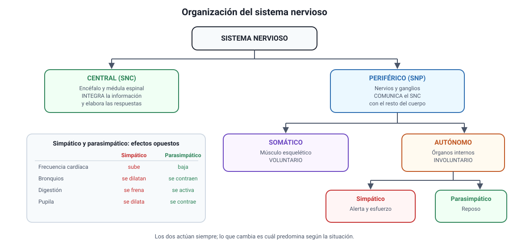
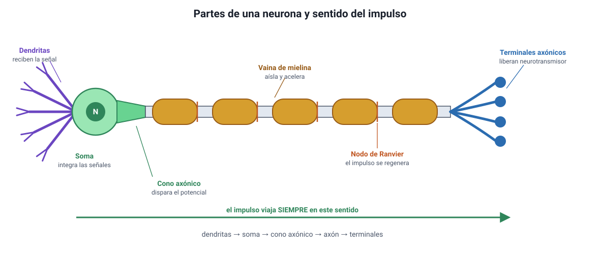
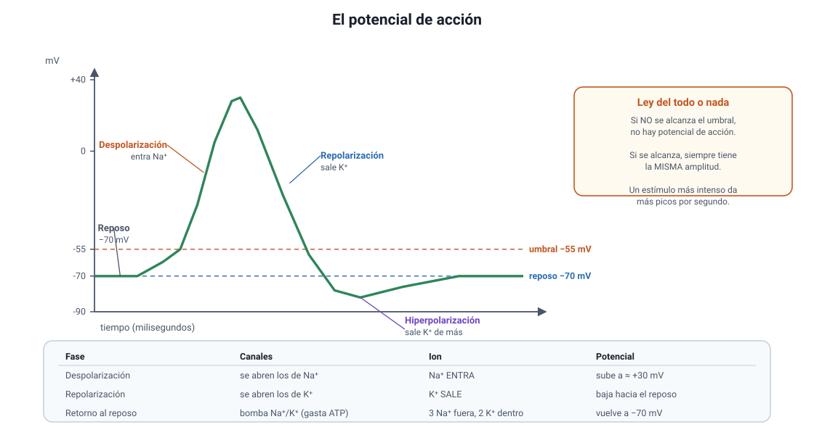
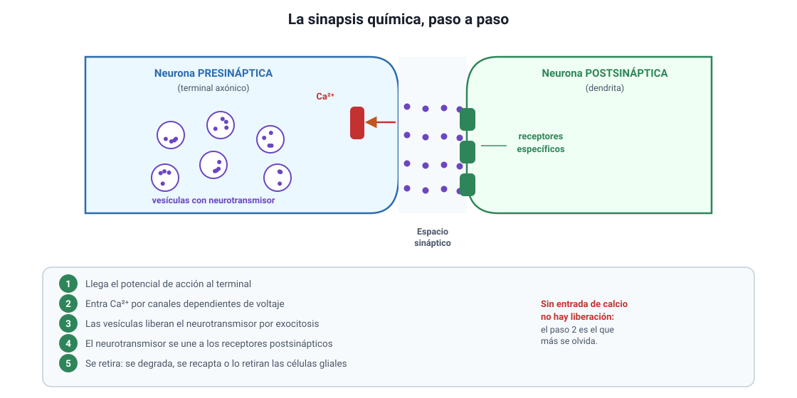
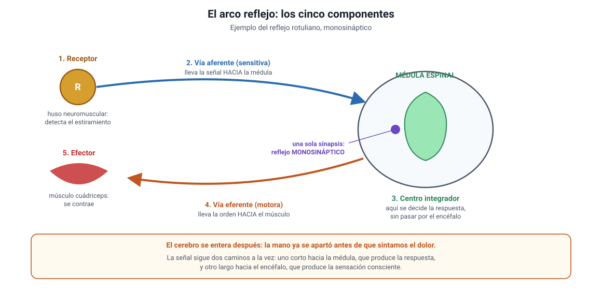

Capítulo 11: Sistema nervioso
Área temática: Procesos y funciones biológicas
Cuando tocas algo muy caliente, retiras la mano antes de sentir el dolor. No es una forma de hablar: la orden de retirarla salió de la médula espinal mientras la señal todavía subía hacia el cerebro. Ese desfase de milisegundos revela cómo está organizado el sistema nervioso, y es el hilo de este capítulo.
Aquí vas a aprender cómo se divide el sistema nervioso y qué hace cada parte; por qué la neurona tiene la forma que tiene; cómo se genera y se propaga el impulso nervioso, con sus valores y sus fases; qué ocurre en una sinapsis química y por qué ese es el punto donde actúan los fármacos y las drogas; cómo funciona un arco reflejo y por qué es tan rápido; qué le hacen al cerebro el café, el alcohol y las drogas de abuso; y qué fundamento biológico tienen el sueño y la prevención de traumatismos.
Este capítulo es nuevo en el temario 2027 y cubre por completo el conocimiento 2.1, del 2.1.1 al 2.1.5.
1. Conceptos claveIA:123
| Concepto | Definición breve |
|---|---|
| Neurona | Célula del sistema nervioso especializada en recibir, conducir y transmitir señales eléctricas y químicas. |
| Soma (cuerpo celular) | Parte de la neurona que contiene el núcleo y la mayoría de los organelos; integra las señales que llegan. |
| Dendritas | Prolongaciones ramificadas que reciben las señales provenientes de otras neuronas. |
| Axón | Prolongación única y larga que conduce el impulso nervioso desde el soma hacia el terminal. |
| Terminal axónico | Extremo ramificado del axón, donde se libera el neurotransmisor. |
| Célula glial | Célula de sostén del tejido nervioso: nutre, aísla, defiende y regula el ambiente de las neuronas. |
| Vaina de mielina | Envoltura aislante formada por células gliales alrededor del axón; aumenta la velocidad de conducción. |
| Nodo de Ranvier | Espacio sin mielina entre dos segmentos de la vaina, donde se regenera el potencial de acción. |
| Potencial de reposo | Diferencia de carga a través de la membrana de una neurona en reposo, de alrededor de −70 mV, con el interior negativo. |
| Bomba de sodio-potasio | Proteína de transporte activo que expulsa 3 Na+ e introduce 2 K+, con gasto de ATP. Mantiene el potencial de reposo. |
| Umbral | Valor de potencial de membrana, cercano a −55 mV, a partir del cual se dispara un potencial de acción. |
| Potencial de acción | Inversión rápida y transitoria de la polaridad de la membrana, que se propaga a lo largo del axón. |
| Despolarización | Fase en que el interior se vuelve menos negativo y luego positivo, por la entrada de Na+. |
| Repolarización | Fase en que el potencial vuelve hacia el valor de reposo, por la salida de K+. |
| Período refractario | Lapso tras un potencial de acción en que la membrana no puede generar otro; asegura que el impulso avance en un solo sentido. |
| Conducción saltatoria | Propagación del impulso saltando de un nodo de Ranvier al siguiente en los axones mielinizados. |
| Ley del todo o nada | Si el estímulo alcanza el umbral, el potencial de acción se produce con amplitud completa; si no lo alcanza, no se produce. |
| Sinapsis | Punto de contacto funcional entre dos neuronas, o entre una neurona y una célula efectora. |
| Neurotransmisor | Sustancia química liberada en la sinapsis que transmite la señal a la célula siguiente. |
| Receptor postsináptico | Proteína de la membrana de la célula siguiente que reconoce al neurotransmisor y desencadena una respuesta. |
| Arco reflejo | Circuito nervioso que produce una respuesta rápida e involuntaria a un estímulo. |
| Efector | Órgano que ejecuta la respuesta: un músculo o una glándula. |
| Agonista | Sustancia que se une a un receptor y produce el mismo efecto que el neurotransmisor. |
| Antagonista | Sustancia que se une a un receptor y bloquea el efecto del neurotransmisor. |
| Tolerancia | Necesidad de dosis cada vez mayores de una sustancia para obtener el mismo efecto. |
2. Organización general del sistema nerviosoIA:45
El sistema nervioso hace tres cosas, siempre en el mismo orden: detecta lo que ocurre dentro y fuera del cuerpo, integra esa información y la compara con lo que ya sabe, y ordena una respuesta. Todo el capítulo desarrolla ese esquema.

a. Las dos grandes divisionesIA:678
| División | Qué la compone | Función |
|---|---|---|
| Sistema nervioso central (SNC) | Encéfalo y médula espinal | Integra la información y elabora las respuestas |
| Sistema nervioso periférico (SNP) | Nervios y ganglios fuera del SNC | Comunica el SNC con el resto del cuerpo |
El sistema nervioso periférico se divide a su vez según lo que controla:
- Somático: lleva la información de los sentidos hacia el SNC y las órdenes hacia los músculos esqueléticos. Es el de los movimientos voluntarios.
- Autónomo: controla los órganos internos, el músculo liso, el corazón y las glándulas, de forma involuntaria. Se divide en dos, con efectos opuestos:
| Simpático | Parasimpático | |
|---|---|---|
| Cuándo predomina | Situaciones de alerta, esfuerzo o peligro | Reposo, digestión, recuperación |
| Frecuencia cardíaca | Aumenta | Disminuye |
| Bronquios | Se dilatan | Se contraen |
| Digestión | Se enlentece | Se activa |
| Pupila | Se dilata | Se contrae |
Cómo se pregunta. Un ítem puede describir una situación —un susto, una carrera, una siesta después de almorzar— y pedir qué división predomina o qué cambios son esperables. La regla es simple: si el cuerpo se prepara para actuar, es simpático; si se prepara para descansar y digerir, es parasimpático. Ambos actúan siempre, y lo que cambia es cuál predomina.
b. Los tres tipos funcionales de neuronaIA:91011
| Tipo | Hacia dónde lleva la señal | También se llama |
|---|---|---|
| Sensitiva | Desde el receptor hacia el SNC | Aferente |
| Interneurona | Dentro del SNC, entre neuronas | De asociación |
| Motora | Desde el SNC hacia el efector | Eferente |
Una regla para no confundirlas. «Aferente» viene de llevar hacia; «eferente», de llevar fuera. La referencia es siempre el sistema nervioso central: aferente entra, eferente sale. Las interneuronas, que son la gran mayoría en el encéfalo humano, conectan a las otras dos y hacen posible que la respuesta no sea siempre la misma.
c. Las células glialesIA:121314
Las neuronas no están solas. Las células gliales son al menos tan numerosas como ellas y cumplen funciones sin las cuales el tejido nervioso no funcionaría:
- Sostén y nutrición de las neuronas.
- Aislamiento eléctrico: las que forman la vaina de mielina alrededor de los axones.
- Defensa: eliminan restos celulares y agentes extraños.
- Regulación del ambiente: controlan la concentración de iones y retiran el exceso de neurotransmisor de la sinapsis.
Un error frecuente. Las células gliales no conducen impulsos nerviosos. Su papel es de apoyo, pero ese apoyo es determinante: si la mielina se daña, la conducción se enlentece o se interrumpe, y eso es lo que ocurre en las enfermedades desmielinizantes.
d. El tejido nervioso está hecho de células separadasIA:151617
Durante el siglo XIX se discutió si el tejido nervioso era una red continua, una especie de malla sin límites entre sus partes, o si estaba formado por células individuales. Santiago Ramón y Cajal defendió la segunda posibilidad, conocida como teoría neuronal: las neuronas son células independientes, separadas entre sí, que se comunican por contacto y no por continuidad.
Por qué importa y cómo lo pregunta la PAES. Que las neuronas estén separadas es lo que obliga a que exista la sinapsis (sección 5): si formaran una sola red continua, la señal pasaría sin más y no habría nada que regular. Un ítem puede entregar un resultado experimental —por ejemplo, que un marcador inyectado en una neurona no aparece en las vecinas— y pedir si sustenta o no la teoría neuronal. La clave está en razonar qué esperaría cada hipótesis: si el tejido fuera continuo, el marcador debería difundir; si las células están separadas, debería quedarse donde se inyectó.
3. La neurona: estructura y funciónIA:1819
Es el conocimiento 2.1.1 del temario DEMRE 2027. La neurona es una célula eucarionte animal como las del capítulo 4: tiene núcleo, mitocondrias, retículo y los demás organelos. Lo que la distingue es su forma, y esa forma se entiende leyendo la dirección en que viaja la señal.

a. Las partes y para qué sirve cada unaIA:202122
| Parte | Qué hace |
|---|---|
| Dendritas | Reciben las señales de otras neuronas. Son muchas y muy ramificadas, lo que aumenta la superficie de contacto |
| Soma (cuerpo celular) | Contiene el núcleo y los organelos. Integra todas las señales recibidas y decide si se supera el umbral |
| Cono axónico | Zona donde nace el axón. Es donde se dispara el potencial de acción si la suma de las señales alcanza el umbral |
| Axón | Conduce el potencial de acción, siempre en un solo sentido, a veces por más de un metro |
| Vaina de mielina | Aísla el axón y acelera la conducción |
| Nodos de Ranvier | Espacios sin mielina donde el potencial de acción se regenera |
| Terminales axónicos | Transmiten la señal a la célula siguiente liberando neurotransmisor |
La regla que resuelve la mitad de los ítems. La señal entra por las dendritas, se integra en el soma, se dispara en el cono axónico, viaja por el axón y sale por los terminales. Ese sentido no se invierte nunca. Si una alternativa dice que el impulso viaja desde el terminal hacia las dendritas de la misma neurona, es incorrecta.
b. La forma sigue a la funciónIA:232425
Tres rasgos de la neurona se explican por lo que hace:
- Muchas dendritas, un solo axón. Una neurona recibe información de cientos o miles de neuronas y debe integrarla, pero emite una sola conclusión. Por eso las entradas son múltiples y la salida, única.
- El axón es largo. Una misma neurona puede conectar la médula espinal con un músculo del pie. Eso exige una prolongación de gran longitud, y explica por qué la neurona es una de las células más largas del cuerpo.
- Muchas mitocondrias. Mantener el potencial de reposo cuesta ATP de forma permanente (sección 4), así que la neurona necesita producir energía sin parar. Es también la razón de que sea tan sensible a la falta de oxígeno o de glucosa.
c. La mielina y la velocidadIA:262728
La vaina de mielina es una envoltura formada por células gliales que se enrollan alrededor del axón. No es continua: se interrumpe en los nodos de Ranvier.
| Tipo de axón | Velocidad de conducción aproximada | Ejemplo |
|---|---|---|
| Mielinizado y grueso | Hasta unos 120 m/s | Vías motoras y de tacto fino |
| No mielinizado y delgado | Alrededor de 1 m/s | Fibras del dolor lento y del sistema autónomo |
La diferencia es de dos órdenes de magnitud, y la razón está en la conducción saltatoria (sección 4d): en un axón mielinizado el potencial de acción no se regenera en cada punto, sino que salta de un nodo al siguiente.
Por qué el cuerpo no mieliniza todo. La mielina ocupa espacio y consume recursos. El organismo la reserva para las vías donde la velocidad importa: retirar la mano de una superficie caliente exige milisegundos, mientras que la señal que regula la digestión puede tardar segundos sin ninguna consecuencia. Esta es también la razón de que el dolor tenga dos componentes: uno rápido y preciso, por fibras mielinizadas, y otro lento y difuso, por fibras sin mielina.
Un dato clínico que la PAES usa como contexto. En las enfermedades desmielinizantes, como la esclerosis múltiple, la vaina se daña y la conducción se enlentece o se bloquea, aunque la neurona siga viva y el axón esté intacto. Si un enunciado describe una pérdida de velocidad de conducción sin muerte neuronal, apunta a la mielina.
4. El impulso nerviosoIA:2930
Este apartado y el siguiente cubren el conocimiento 2.1.2 del temario. Es el contenido más preguntado del capítulo, porque se presta para gráficos.
a. El potencial de reposoIA:313233
Una neurona en reposo no está descargada: mantiene una diferencia de carga entre el interior y el exterior de su membrana, de alrededor de −70 mV, con el interior negativo respecto del exterior. Esa diferencia se llama potencial de reposo y se mantiene gracias a tres cosas:
- La bomba de sodio-potasio. Es una proteína de transporte activo que, gastando ATP, expulsa 3 Na+ e introduce 2 K+ en cada ciclo. Como saca más cargas positivas de las que mete, contribuye a que el interior quede negativo.
- La permeabilidad desigual. En reposo, la membrana deja salir K+ con mucha más facilidad de lo que deja entrar Na+.
- Los aniones intracelulares. Proteínas y otras moléculas con carga negativa que no pueden salir de la célula.
| Ion | Dónde está más concentrado | Hacia dónde tiende a moverse |
|---|---|---|
| Sodio (Na+) | Fuera de la célula | Hacia adentro |
| Potasio (K+) | Dentro de la célula | Hacia afuera |
El error más frecuente. La bomba de sodio-potasio gasta ATP: es transporte activo, porque mueve los iones en contra de su gradiente. Si una alternativa dice que funciona por difusión simple o sin gasto de energía, es incorrecta. El movimiento a favor del gradiente, en cambio, ocurre durante el potencial de acción y sí es pasivo, a través de canales.
b. El potencial de acciónIA:343536
Si un estímulo despolariza la membrana hasta el umbral, cercano a −55 mV, se dispara un potencial de acción: una inversión rápida y transitoria de la polaridad.

| Fase | Qué ocurre con los canales | Qué pasa con el potencial |
|---|---|---|
| Reposo | Canales de Na+ y K+ dependientes de voltaje cerrados | Se mantiene en torno a −70 mV |
| Despolarización | Se abren los canales de Na+: el sodio entra masivamente | Sube desde el umbral hasta cerca de +30 mV |
| Repolarización | Se cierran los de Na+ y se abren los de K+: el potasio sale | Baja de nuevo hacia valores negativos |
| Hiperpolarización | Los canales de K+ se cierran con retraso y sale K+ de más | Queda por debajo de −70 mV por un instante |
| Retorno al reposo | La bomba de sodio-potasio restablece las concentraciones | Vuelve a −70 mV |
Ley del todo o nada. Si el estímulo no alcanza el umbral, no hay potencial de acción. Si lo alcanza o lo supera, el potencial de acción se produce siempre con la misma amplitud. Un estímulo más intenso no genera un potencial de acción más grande: genera más potenciales de acción por segundo. Así es como el sistema nervioso codifica la intensidad, y es una pregunta clásica: ante un estímulo doblemente intenso, lo que cambia es la frecuencia, no la amplitud.
c. El período refractarioIA:373839
Inmediatamente después de un potencial de acción, la membrana no puede generar otro, porque los canales de sodio quedan temporalmente inactivados. Ese lapso es el período refractario y tiene dos consecuencias importantes:
- El impulso avanza en un solo sentido. La zona que el impulso acaba de recorrer está refractaria, de modo que no puede reexcitarse y el potencial solo puede propagarse hacia adelante.
- Hay un límite a la frecuencia. Por muy intenso que sea el estímulo, una neurona no puede disparar más allá de cierto número de potenciales por segundo.
d. La propagación y la conducción saltatoriaIA:404142
El potencial de acción no se desplaza como una onda que se debilita: se regenera en cada punto, de modo que llega al final del axón con la misma amplitud con que empezó. Cómo se regenera depende de la mielina:
| Axón sin mielina | Axón con mielina | |
|---|---|---|
| Dónde se regenera | En cada punto de la membrana, de forma continua | Solo en los nodos de Ranvier |
| Cómo avanza | Punto por punto | Saltando de nodo a nodo |
| Velocidad | Baja, alrededor de 1 m/s | Alta, hasta unos 120 m/s |
| Gasto de energía | Mayor: hay que restablecer los iones en toda la superficie | Menor: solo en los nodos |
Dos preguntas que se repiten. Primera: si se daña la mielina, ¿qué ocurre? La conducción se enlentece o se bloquea, aunque la neurona esté viva. Segunda: ¿qué determina la velocidad? Dos cosas a la vez, el diámetro del axón y la presencia de mielina; a mayor diámetro y con mielina, más rápido.
e. Cómo leer un gráfico de potencial de acciónIA:434445
Es el formato más probable en la prueba. Conviene tener el guion:
- Mira el eje vertical. Está en milivoltios. Ubica el −70 (reposo) y el −55 (umbral).
- Identifica el tramo que sube. Es la despolarización, y la produce la entrada de Na+.
- Identifica el tramo que baja. Es la repolarización, y la produce la salida de K+.
- Si baja por debajo de −70, es la hiperpolarización.
- Si el trazado no llega al umbral y vuelve, el estímulo fue subumbral: no hubo potencial de acción.
- Si hay varios picos, cuenta cuántos por unidad de tiempo: eso es la frecuencia, y codifica la intensidad del estímulo.
Un ítem típico con fármacos. Si una sustancia bloquea los canales de sodio, no hay despolarización y no se genera el potencial de acción: así actúan los anestésicos locales. Si bloquea los canales de potasio, la repolarización se enlentece y el potencial dura más. Razonar con la tabla de la sección 4b permite resolver cualquier variante de este enunciado.
5. La sinapsis químicaIA:4647
Las neuronas están separadas (sección 2d). Para que la señal pase de una a otra hace falta un mecanismo, y ese mecanismo es la sinapsis. En la sinapsis química, la señal deja de ser eléctrica por un instante y se convierte en química.

a. Las partesIA:484950
| Parte | Qué es |
|---|---|
| Neurona presináptica | La que envía la señal. Su terminal axónico contiene las vesículas |
| Espacio sináptico | Hendidura de unos 20 a 40 nanómetros entre ambas células |
| Neurona postsináptica | La que recibe. Su membrana tiene los receptores |
b. Las cinco etapasIA:515253
- Llega el potencial de acción al terminal axónico de la neurona presináptica.
- Entra calcio. La despolarización abre canales de Ca2+ dependientes de voltaje, y el calcio entra al terminal.
- Se libera el neurotransmisor. El calcio hace que las vesículas se fusionen con la membrana y vacíen su contenido al espacio sináptico por exocitosis.
- Se une a los receptores. El neurotransmisor difunde por el espacio y se une a receptores específicos de la membrana postsináptica, lo que abre canales iónicos y cambia el potencial de esa célula.
- Se retira el neurotransmisor. Se degrada por enzimas, se recapta hacia el terminal presináptico o lo retiran las células gliales. Sin este paso, la señal no terminaría nunca.
El calcio es el paso que más se olvida. Sin entrada de Ca2+ no hay liberación de neurotransmisor, por más que el potencial de acción llegue al terminal. Si un enunciado describe un fármaco que bloquea los canales de calcio del terminal, la consecuencia es que no se libera neurotransmisor y la sinapsis se interrumpe, aunque el axón conduzca con normalidad.
c. Excitatoria o inhibitoriaIA:545556
Lo que determina el efecto no es el neurotransmisor por sí solo, sino el receptor al que se une:
| Tipo de sinapsis | Qué ocurre en la célula postsináptica | Efecto |
|---|---|---|
| Excitatoria | Entra Na+: la membrana se despolariza y se acerca al umbral | Hace más probable el potencial de acción |
| Inhibitoria | Entra Cl− o sale K+: la membrana se hiperpolariza y se aleja del umbral | Hace menos probable el potencial de acción |
Por qué el soma tiene que sumar. Una neurona recibe a la vez miles de señales, unas excitatorias y otras inhibitorias. El soma las integra, y solo si el resultado alcanza el umbral en el cono axónico se dispara un potencial de acción. Esto explica por qué el sistema nervioso puede hacer algo más que reaccionar: puede decidir entre respuestas, y por eso el mismo estímulo no siempre produce el mismo resultado.
d. Algunos neurotransmisoresIA:575859
| Neurotransmisor | Dónde actúa y para qué |
|---|---|
| Acetilcolina | Unión entre la neurona motora y el músculo esquelético: produce la contracción |
| Dopamina | Movimiento, motivación y circuito de recompensa |
| Serotonina | Estado de ánimo, sueño y apetito |
| GABA | Principal neurotransmisor inhibitorio del sistema nervioso central |
| Glutamato | Principal neurotransmisor excitatorio del sistema nervioso central |
| Noradrenalina | Alerta y respuesta del sistema simpático |
e. Agonistas y antagonistasIA:606162
Muchas sustancias actúan sobre la sinapsis, y casi siempre de una de estas maneras. Esta tabla es la herramienta para entender la sección 7.
| Modo de acción | Qué hace la sustancia | Efecto sobre la señal |
|---|---|---|
| Agonista | Se une al receptor y lo activa, como haría el neurotransmisor | Imita la señal |
| Antagonista | Se une al receptor y lo bloquea sin activarlo | Impide la señal |
| Inhibidor de la recaptación | Impide que el neurotransmisor sea retirado del espacio sináptico | Prolonga y potencia la señal |
| Inhibidor de la degradación | Bloquea la enzima que destruye el neurotransmisor | Prolonga la señal |
| Bloqueador de la liberación | Impide la exocitosis de las vesículas | Suprime la señal |
Cómo resolver cualquier ítem de este tipo. Pregúntate primero dónde actúa la sustancia: en el terminal presináptico, en el espacio o en el receptor. Después pregúntate qué le hace a la señal: la imita, la bloquea o la prolonga. Con esas dos respuestas se deduce el efecto sin necesidad de recordar el caso particular.
f. Por qué la sinapsis es química y no simplemente eléctricaIA:636465
Convertir la señal a química parece un rodeo, y tiene un costo: introduce un retardo de aproximadamente medio milisegundo. A cambio entrega tres ventajas:
- Permite amplificar o atenuar la señal, según cuánto neurotransmisor se libere.
- Permite invertirla: una señal excitatoria puede convertirse en inhibitoria en la célula siguiente.
- Asegura un solo sentido: el neurotransmisor se libera en un lado y los receptores están en el otro.
Sobre esa flexibilidad se construyen el aprendizaje y la memoria, y también es el punto donde actúan casi todos los fármacos y las drogas que afectan al sistema nervioso.
6. El arco reflejo simpleIA:6667
Es el conocimiento 2.1.3 del temario. Un reflejo es una respuesta rápida, involuntaria y estereotipada a un estímulo. El circuito que la produce se llama arco reflejo.

a. Los cinco componentesIA:686970
Siempre son estos cinco, en este orden. Conviene memorizarlos, porque la PAES los pregunta ordenados, desordenados o por omisión.
| # | Componente | Qué hace | En el reflejo rotuliano |
|---|---|---|---|
| 1 | Receptor | Detecta el estímulo | Huso neuromuscular del cuádriceps, que detecta el estiramiento |
| 2 | Vía aferente | Lleva la señal hacia el SNC | Neurona sensitiva, entra por la raíz dorsal |
| 3 | Centro integrador | Procesa y decide la respuesta | Médula espinal |
| 4 | Vía eferente | Lleva la orden hacia el efector | Neurona motora, sale por la raíz ventral |
| 5 | Efector | Ejecuta la respuesta | Músculo cuádriceps, que se contrae |
b. Por qué el reflejo es tan rápidoIA:717273
Porque el centro integrador está en la médula espinal y no en el encéfalo. La señal no sube hasta el cerebro para decidir: se procesa en el camino, y la orden sale de inmediato.
| Reflejo medular | Respuesta voluntaria | |
|---|---|---|
| Centro integrador | Médula espinal | Encéfalo |
| Control de la voluntad | No | Sí |
| Tiempo | Milisegundos | Bastante mayor |
| Ejemplo | Retirar la mano de una superficie caliente | Decidir tomar un vaso |
El cerebro se entera después. En el reflejo de retirada, la mano ya se apartó antes de que sintamos el dolor. La señal sigue dos caminos a la vez: uno corto hacia la médula, que produce la respuesta, y otro largo hacia el encéfalo, que produce la sensación consciente. Por eso primero retiramos la mano y solo después decimos «ay». Esto no es una curiosidad: es la prueba de que el centro integrador del reflejo está en la médula.
c. Monosináptico y polisinápticoIA:747576
| Monosináptico | Polisináptico | |
|---|---|---|
| Neuronas involucradas | Dos: sensitiva y motora | Tres o más: se agregan interneuronas |
| Sinapsis en el centro integrador | Una | Varias |
| Velocidad | La máxima posible | Algo menor |
| Ejemplo | Reflejo rotuliano | Reflejo de retirada ante el dolor |
Cómo se distinguen en un ítem. Cuenta las sinapsis dentro del centro integrador, no las neuronas del dibujo. Si la neurona sensitiva contacta directamente con la motora, es monosináptico. Si hay al menos una interneurona en medio, es polisináptico. El reflejo rotuliano es el ejemplo clásico de monosináptico, y por eso es el más rápido del cuerpo humano.
d. Para qué sirven los reflejosIA:777879
- Protegen. Retirar la mano del fuego o cerrar el párpado ante un objeto que se acerca evita un daño antes de que la conciencia alcance a intervenir.
- Mantienen la postura. El reflejo de estiramiento corrige continuamente la posición de los músculos, y por eso no nos caemos al estar de pie.
- Sirven para el diagnóstico. Como el circuito es siempre el mismo, un reflejo ausente, disminuido o exagerado indica dónde puede estar la lesión. Por eso el médico golpea el tendón rotuliano en un examen neurológico.
Un razonamiento que la PAES pide. Si un reflejo desaparece, la lesión puede estar en cualquiera de los cinco componentes, y la prueba sirve justamente para acotar dónde. Un ítem puede entregar datos —el músculo se contrae al estimularlo directamente, pero el reflejo no aparece— y pedir dónde está el problema. En ese caso el efector funciona, de modo que la falla está antes: en el receptor, en alguna de las dos vías o en el centro integrador.
7. Efectos del café, el alcohol y las drogas de abusoIA:8081
Es el conocimiento 2.1.4 del temario. Todo lo que sigue se entiende con la tabla de agonistas y antagonistas de la sección 5e: estas sustancias actúan en la sinapsis, y cada una lo hace en un punto identificable.
a. La cafeínaIA:828384
| Dónde actúa | En los receptores de adenosina del sistema nervioso central |
| Cómo | Como antagonista: se une al receptor y lo bloquea, sin activarlo |
| Efecto | Estimulante: reduce la sensación de sueño y aumenta el estado de alerta |
La adenosina es una molécula que se acumula en el cerebro a lo largo del día y que, al unirse a sus receptores, produce somnolencia y frena la liberación de varios neurotransmisores. La cafeína tiene una forma parecida, ocupa esos receptores y impide que la adenosina actúe.
La consecuencia que la PAES pregunta. La cafeína no elimina el cansancio ni aporta energía: bloquea la señal que lo comunica. La adenosina sigue acumulándose mientras tanto, y cuando el efecto de la cafeína pasa, esa señal acumulada se hace sentir de golpe. Si una alternativa dice que la cafeína aporta energía al organismo, es incorrecta.
El consumo repetido produce tolerancia: el cerebro fabrica más receptores de adenosina, de modo que hace falta más cafeína para el mismo efecto. Al suspenderla aparece el síndrome de abstinencia, con dolor de cabeza y somnolencia, porque ahora hay más receptores disponibles que antes.
b. El alcoholIA:858687
| Qué es | Un depresor del sistema nervioso central |
| Dónde actúa | Principalmente sobre los receptores de GABA, el neurotransmisor inhibitorio, a los que potencia; y sobre los de glutamato, el excitatorio, a los que inhibe |
| Efecto | Reduce la actividad del sistema nervioso de forma progresiva |
Por qué parece un estimulante si es un depresor. En las primeras copas el alcohol deprime antes que nada las áreas encargadas del autocontrol, de modo que la persona se desinhibe y se ve más eufórica y conversadora. Eso no es estimulación: es la pérdida de un freno. A medida que la concentración aumenta, la depresión alcanza a la coordinación, al habla, al juicio y finalmente a los centros del tronco encefálico que controlan la respiración, que es el mecanismo de la intoxicación grave.
Efectos según la concentración en sangre, de forma aproximada:
| Concentración | Efectos típicos |
|---|---|
| 0,3 a 0,5 g/L | Desinhibición, aumento del tiempo de reacción |
| 0,5 a 1,0 g/L | Pérdida de coordinación, juicio alterado, sobrevaloración de la propia capacidad |
| 1,0 a 2,0 g/L | Marcha inestable, habla mal articulada, visión doble |
| Sobre 3,0 g/L | Riesgo de coma y de depresión respiratoria |
En Chile, la Ley de Tolerancia Cero fija en 0,3 g/L el límite a partir del cual se considera que se conduce bajo la influencia del alcohol, y en 0,8 g/L el estado de ebriedad. El fundamento es biológico: el tiempo de reacción se alarga y el juicio se altera antes de que la persona se sienta afectada.
c. Las drogas de abuso y el circuito de recompensaIA:888990
Casi todas las drogas con potencial de abuso tienen un punto en común: aumentan la dopamina en el circuito de recompensa, un conjunto de estructuras que normalmente se activa con conductas necesarias para la supervivencia, como comer o relacionarse con otros.
| Sustancia | Cómo actúa | Tipo de efecto |
|---|---|---|
| Nicotina | Agonista de receptores de acetilcolina, lo que aumenta la dopamina | Estimulante |
| Cocaína | Inhibe la recaptación de dopamina: esta permanece más tiempo en la sinapsis | Estimulante |
| Cannabis | Actúa sobre el sistema endocannabinoide, que modula la liberación de varios neurotransmisores | Perturbador |
| Opioides | Agonistas de los receptores opioides, que también elevan la dopamina | Depresor |
| Alcohol | Potencia el GABA e inhibe el glutamato; eleva indirectamente la dopamina | Depresor |
El mecanismo de la adicción, en tres pasos. (1) La droga produce una liberación de dopamina mucho mayor que cualquier estímulo natural. (2) El cerebro compensa reduciendo sus receptores: aparece la tolerancia, y se necesita más dosis para el mismo efecto. (3) Con menos receptores, los estímulos naturales dejan de producir satisfacción y aparece el malestar al suspender el consumo: la abstinencia. El consumo pasa entonces de buscar placer a evitar el malestar.
Por qué importa la edad. El sistema nervioso sigue madurando hasta cerca de los 25 años, y las últimas regiones en completar su desarrollo son justamente las de la corteza prefrontal, encargadas del control de impulsos y de la evaluación de consecuencias. Por eso el consumo durante la adolescencia tiene efectos más duraderos y un mayor riesgo de desarrollar dependencia que el mismo consumo en la adultez.
En Chile, el estudio nacional de drogas en población escolar de SENDA mide cada dos años el consumo entre 8.º básico y 4.º medio. Sus últimos informes muestran una tendencia a la baja en el consumo de alcohol y tabaco, y un aumento de la percepción de riesgo asociada al consumo frecuente de cannabis.
d. Cómo se pregunta esto en la PAESIA:919293
No se pide memorizar sustancias, sino razonar con el mecanismo. Las tareas habituales son:
- Deducir el efecto a partir del mecanismo: si algo bloquea un receptor inhibitorio, la actividad aumenta; si potencia uno inhibitorio, disminuye.
- Interpretar datos de consumo, de tiempo de reacción o de accidentabilidad.
- Evaluar una afirmación, del tipo «el alcohol estimula» o «la cafeína da energía», que son justamente las dos confusiones más frecuentes.
- Analizar un diseño experimental que mida el efecto de una sustancia sobre alguna variable.
8. Cuidado del sistema nervioso: sueño y prevención de traumatismosIA:9495
Es el conocimiento 2.1.5 del temario, y cierra el capítulo con dos asuntos que tienen fundamento biológico y consecuencias medibles.
a. Por qué dormir no es tiempo perdidoIA:969798
Durante el sueño el sistema nervioso hace cosas que no puede hacer despierto:
| Función | Qué ocurre |
|---|---|
| Consolidación de la memoria | Lo aprendido durante el día se estabiliza y pasa a la memoria de largo plazo, reforzando las conexiones sinápticas correspondientes |
| Limpieza metabólica | Se eliminan con mayor eficiencia productos de desecho acumulados en el tejido nervioso |
| Regulación hormonal | Se liberan hormonas relacionadas con el crecimiento y con la regulación del apetito |
| Restablecimiento | Se recupera el equilibrio de neurotransmisores y disminuye la adenosina acumulada (sección 7a) |
b. Las fases del sueñoIA:99100101
El sueño no es un estado uniforme: se organiza en ciclos de aproximadamente 90 minutos que se repiten varias veces por noche.
| Fase | Características |
|---|---|
| No REM 1 | Transición entre la vigilia y el sueño; sueño ligero |
| No REM 2 | Se enlentece la actividad cerebral; ocupa la mayor parte de la noche |
| No REM 3 | Sueño profundo, con ondas lentas. Es el más reparador y predomina en la primera mitad de la noche |
| REM | Movimientos oculares rápidos, actividad cerebral intensa y músculos relajados. Es cuando se sueña, y predomina en la segunda mitad de la noche |
Por qué no da lo mismo dormir menos horas. Como el sueño profundo se concentra al principio de la noche y el REM al final, acortar el sueño no recorta todas las fases por igual: elimina sobre todo el REM. Por eso dormir cinco horas no equivale a «un poco menos de descanso», sino a perder casi por completo una fase, con el efecto correspondiente sobre la consolidación de la memoria.
c. Cuánto se necesita dormirIA:102103104
Para adolescentes de 14 a 17 años, la recomendación es de 8 a 10 horas diarias. En la práctica, una parte importante duerme bastante menos, por una combinación de horarios escolares tempranos, carga académica y uso de pantallas en la noche.
Efectos documentados de la privación de sueño:
- Menor rendimiento cognitivo: atención, memoria de trabajo y tiempo de reacción.
- Peor consolidación de lo estudiado: estudiar toda la noche antes de una prueba es contraproducente, porque justamente se suprime la fase en que lo aprendido se fija.
- Mayor irritabilidad y menor regulación emocional.
- Riesgo aumentado de accidentes, sobre todo al conducir.
- A largo plazo, mayor riesgo de obesidad, diabetes tipo 2 y enfermedad cardiovascular.
El efecto de la luz de las pantallas. La melatonina es la hormona que señala al organismo que es de noche, y su liberación se inhibe con la luz, en particular la de longitud de onda corta que emiten las pantallas. Usarlas hasta el momento de acostarse retrasa esa señal y con ella el inicio del sueño. Esta es una recomendación con mecanismo, no una opinión: el efecto se explica por la inhibición de la melatonina.
d. Prevención de traumatismosIA:105106107
El sistema nervioso central tiene una particularidad que obliga a protegerlo: las neuronas del encéfalo y de la médula prácticamente no se reemplazan. A diferencia de lo que ocurre en la piel o en el hígado (capítulo 6), el daño neuronal es en gran medida irreversible. Por eso la prevención no es una recomendación más: es la única estrategia realmente eficaz.
Las protecciones naturales son tres, y son notables: el cráneo y la columna vertebral, que son huesos; las meninges, tres membranas que envuelven el tejido nervioso; y el líquido cefalorraquídeo, que amortigua los golpes. Aun así, no bastan frente a la energía de un choque o de una caída desde altura.
Medidas de prevención y su fundamento:
| Medida | Por qué funciona |
|---|---|
| Casco en bicicleta, motocicleta y patineta | Distribuye la fuerza del impacto y aumenta el tiempo de desaceleración de la cabeza, con lo que reduce la fuerza que llega al encéfalo |
| Cinturón de seguridad y apoyacabezas | Impiden el desplazamiento del cuerpo y limitan el movimiento brusco del cuello |
| No conducir tras consumir alcohol | El alcohol alarga el tiempo de reacción y altera el juicio antes de que la persona lo note (sección 7b) |
| No sumergirse de cabeza en aguas de profundidad desconocida | Es una causa frecuente de lesión de la médula cervical, con consecuencias permanentes |
| Protección en deportes de contacto | Los golpes repetidos en la cabeza, aunque sean leves, tienen efectos acumulativos |
En Chile, la ley de tránsito exige el casco a conductores y acompañantes de motocicletas y bicicletas, y en el caso de las bicicletas es obligatorio en zonas urbanas. La evidencia internacional muestra que su uso reduce de forma importante el riesgo y la gravedad de las lesiones craneales.
El razonamiento físico detrás del casco. El daño depende de la fuerza que recibe el encéfalo, y la fuerza es tanto menor cuanto más tiempo dure la desaceleración. El material del casco se deforma y absorbe energía, de modo que la cabeza se detiene en algunos milisegundos más. Esa diferencia mínima es lo que separa un golpe sin consecuencias de un traumatismo grave. Es también la razón por la que un casco que ya recibió un impacto fuerte debe reemplazarse: su material ya se deformó y no volverá a absorber energía igual.
e. Lo que conviene llevar de este capítuloIA:108109110
- La señal va siempre en un sentido: dendritas → soma → axón → terminal.
- El potencial de acción es todo o nada, y la intensidad se codifica en la frecuencia.
- La sinapsis es química, y ahí actúan todos los fármacos y drogas del capítulo.
- El reflejo es rápido porque su centro integrador está en la médula y no en el encéfalo.
- Las sustancias se entienden preguntando dónde actúan y qué le hacen a la señal.
- Dormir y protegerse la cabeza tienen fundamento biológico: la memoria se consolida durmiendo y las neuronas del SNC no se reemplazan.
Ejemplos PAES resueltos
Cuatro preguntas del estilo de la PAES sobre el sistema nervioso, resueltas con el guion DEMRE. Intenta responder antes de leer la resolución.
Ejemplo 1 · Habilidad: Procesar y analizar la evidencia
Se registra el potencial de membrana de una neurona mientras se le aplican cuatro estímulos de intensidad creciente. El registro muestra lo siguiente:
| Estímulo | Potencial máximo alcanzado | Potenciales de acción registrados en 100 ms |
|---|---|---|
| 1 | −62 mV | 0 |
| 2 | −55 mV | 3 |
| 3 | −55 mV | 8 |
| 4 | −55 mV | 15 |
¿Qué conclusión se desprende de estos datos?
- A) La amplitud del potencial de acción aumenta con la intensidad del estímulo.
- B) La intensidad del estímulo se codifica en la frecuencia de los potenciales de acción.
- C) El estímulo 1 generó un potencial de acción de menor amplitud que los demás.
- D) El umbral de la neurona disminuye a medida que aumenta la intensidad del estímulo.
Resolución. Esta pregunta evalúa la habilidad de procesar y analizar la evidencia: identificar relaciones y patrones en una tabla. La tarea consiste en distinguir qué variable cambia y cuál se mantiene constante.
El estímulo 1 no llegó al umbral, de modo que no generó ningún potencial de acción: es un estímulo subumbral. Los estímulos 2, 3 y 4 sí alcanzaron el umbral, y en los tres el potencial máximo es el mismo, −55 mV como punto de disparo. Lo único que aumenta es el número de potenciales por unidad de tiempo: 3, 8 y 15. Esa es exactamente la ley del todo o nada: la amplitud no cambia, la frecuencia sí. Clave: B.
- A contradice la tabla, que muestra el mismo valor de disparo en los tres casos. Relación inversa o inexistente.
- C es imposible: con el estímulo 1 no hubo ningún potencial de acción. Sub-alcance.
- D supone un umbral variable, que la tabla no muestra: es siempre −55 mV. Sobre-alcance.
Qué hay que saber y saber hacer: conocer la ley del todo o nada y saber leer una tabla distinguiendo la variable constante de la que cambia. Dato para la PAES: este es el mecanismo por el que distinguimos un pinchazo suave de uno fuerte; no llegan señales «más grandes», llegan más señales por segundo.
Ejemplo 2 · Habilidad: Evaluar
Un fármaco se aplica sobre una preparación de tejido nervioso. Se observa que el potencial de acción se genera y viaja con normalidad por el axón hasta el terminal, pero la neurona siguiente no responde. Al medir, se comprueba que el neurotransmisor no se libera al espacio sináptico.
¿Cuál de los siguientes mecanismos de acción explica mejor lo observado?
- A) El fármaco bloquea los canales de sodio dependientes de voltaje del axón.
- B) El fármaco bloquea los canales de calcio del terminal presináptico.
- C) El fármaco bloquea los receptores de la membrana postsináptica.
- D) El fármaco inhibe la enzima que degrada el neurotransmisor.
Resolución. Esta pregunta evalúa la habilidad de evaluar: juzgar cuál explicación es compatible con toda la evidencia. La tarea consiste en descartar los mecanismos incompatibles con alguno de los datos.
Hay dos datos que acotan la respuesta. Primero, el potencial de acción viaja con normalidad, lo que descarta cualquier acción sobre la conducción en el axón. Segundo, el neurotransmisor no se libera, lo que sitúa el problema antes de la hendidura sináptica. La entrada de Ca2+ al terminal es justamente el paso que desencadena la exocitosis de las vesículas: sin calcio no hay liberación, aunque el impulso llegue. Clave: B.
- A impediría la generación del potencial de acción, y el enunciado dice que viaja con normalidad. Condición incompleta.
- C impediría la respuesta de la célula siguiente, pero el neurotransmisor sí se liberaría. Variable equivocada.
- D prolongaría el efecto del neurotransmisor en lugar de impedir su liberación. Relación inversa o inexistente.
Qué hay que saber y saber hacer: conocer las cinco etapas de la sinapsis y saber usar cada dato del enunciado como un filtro. Dato: la toxina botulínica actúa de forma parecida, impidiendo la liberación de acetilcolina, y por eso produce parálisis muscular.
Ejemplo 3 · Habilidad: Planificar y conducir una investigación
Un equipo médico examina a una persona que no presenta reflejo rotuliano en una pierna. Quiere determinar si la falla está en el efector o en alguno de los componentes anteriores del arco reflejo.
¿Qué procedimiento permite distinguir ambas posibilidades?
- A) Golpear el tendón con mayor fuerza y observar si aparece la respuesta.
- B) Estimular eléctricamente el músculo y observar si se contrae.
- C) Repetir la prueba del reflejo en la pierna que no presenta el problema.
- D) Medir la temperatura de la pierna afectada y compararla con la otra.
Resolución. Esta pregunta evalúa la habilidad de planificar y conducir una investigación: diseñar una prueba que discrimine entre dos hipótesis. La tarea consiste en evaluar un componente del circuito de forma aislada.
El arco reflejo tiene cinco componentes en serie, y la prueba habitual los evalúa todos a la vez. Para aislar el efector hay que estimularlo directamente, salteándose el resto del circuito. Si el músculo se contrae con estimulación eléctrica directa, el efector funciona y la falla está antes: en el receptor, en alguna de las dos vías o en el centro integrador. Si no se contrae, el problema es el propio músculo. Clave: B.
- A repite la misma prueba con más intensidad: sigue evaluando el circuito completo. Condición incompleta.
- C aporta una referencia útil, pero no distingue cuál componente falla en la pierna afectada. Sub-alcance.
- D mide una variable que no forma parte del arco reflejo. Variable equivocada.
Qué hay que saber y saber hacer: conocer los cinco componentes del arco reflejo y saber diseñar una prueba que evalúe uno solo. Dato para la PAES: este es el razonamiento de todo examen neurológico. Como el circuito es siempre el mismo, comparar qué funciona y qué no permite ubicar la lesión sin abrir nada.
Ejemplo 4 · Habilidad: Evaluar
Un afiche escolar afirma: «La cafeína aporta energía al organismo y por eso elimina el cansancio».
¿Cuál es el principal error de esta afirmación?
- A) La cafeína bloquea la señal del cansancio, pero no aporta energía ni lo elimina.
- B) La cafeína no atraviesa la barrera que protege al sistema nervioso central.
- C) La cafeína es un depresor del sistema nervioso y por lo tanto aumenta el sueño.
- D) La cafeína actúa sobre el músculo esquelético y no sobre el sistema nervioso.
Resolución. Esta pregunta evalúa la habilidad de evaluar: juzgar la precisión de una afirmación divulgativa a la luz del mecanismo. La tarea consiste en corregir sin caer en el error opuesto.
La adenosina se acumula en el cerebro durante el día y, al unirse a sus receptores, produce somnolencia. La cafeína es un antagonista: ocupa esos receptores y bloquea la señal. No aporta energía, porque no es un nutriente que las células puedan usar, y no elimina el cansancio: impide percibirlo. La adenosina sigue acumulándose mientras tanto, y por eso el cansancio reaparece cuando el efecto pasa. Clave: A.
- B es falsa: la cafeína sí llega al sistema nervioso central, y ahí está su efecto. Relación inversa o inexistente.
- C invierte el efecto: la cafeína es estimulante, no depresora. Relación inversa o inexistente.
- D sitúa la acción en el tejido equivocado. Variable equivocada.
Qué hay que saber y saber hacer: conocer el mecanismo antagonista de la cafeína y saber distinguir bloquear una señal de eliminar su causa. Dato: con el consumo repetido el cerebro fabrica más receptores de adenosina, de modo que hace falta más cafeína para el mismo efecto. Eso es tolerancia, y explica el dolor de cabeza al suspenderla de golpe.
Evaluación formativa
Veinte preguntas sobre la organización del sistema nervioso, la neurona, el impulso nervioso, la sinapsis, el arco reflejo y el efecto de las sustancias. Responde todas y luego revisa las explicaciones.
1. ¿Cuál de las siguientes estructuras pertenece al sistema nervioso periférico?
- El cerebelo.
- La médula espinal.
- El nervio ciático.
- La corteza prefrontal.
Respuesta correcta: C
El sistema nervioso central está formado solo por el encéfalo y la médula espinal, ambos protegidos por hueso. Todo lo que queda fuera de esa cavidad —nervios y ganglios— es sistema nervioso periférico. El cerebelo y la corteza prefrontal son partes del encéfalo, y la médula espinal es el otro componente del central.
2. Una persona se prepara para correr: su frecuencia cardíaca sube, sus bronquios se dilatan y su digestión se frena. ¿Qué división del sistema nervioso explica mejor ese conjunto de cambios?
- La división somática, porque hay movimiento voluntario.
- La división simpática del sistema autónomo.
- La división parasimpática del sistema autónomo.
- La vía aferente del sistema nervioso periférico.
Respuesta correcta: B
Los tres cambios apuntan en la misma dirección: preparar el cuerpo para un esfuerzo. Esa es la firma de la división simpática. El parasimpático haría lo contrario (bajar la frecuencia cardíaca y favorecer la digestión). La división somática controla el músculo esquelético, no el corazón ni los bronquios, y la vía aferente solo lleva información hacia el centro.
3. La neurona que recibe información de una neurona sensitiva y la transmite a una motora dentro de la médula espinal se denomina
- interneurona.
- neurona aferente.
- neurona eferente.
- célula de Schwann.
Respuesta correcta: A
Las interneuronas conectan neuronas entre sí dentro del sistema nervioso central. Aferente es sinónimo de sensitiva y eferente de motora, es decir, los dos extremos de la vía. La célula de Schwann no es una neurona: es una célula glial que forma la mielina en el sistema nervioso periférico.
4. ¿Qué función cumple la vaina de mielina?
- Generar el neurotransmisor que libera el axón.
- Mantener el potencial de reposo del soma neuronal.
- Recibir los neurotransmisores de la neurona anterior.
- Aislar el axón y aumentar la velocidad de conducción.
Respuesta correcta: D
La mielina es un aislante eléctrico interrumpido por los nodos de Ranvier. El potencial de acción «salta» de nodo en nodo (conducción saltatoria), lo que eleva la velocidad hasta unos 120 m/s frente a cerca de 1 m/s en un axón sin mielina. No sintetiza neurotransmisores ni recibe señales: eso último corresponde a las dendritas.
5. El potencial de reposo de una neurona es de aproximadamente −70 mV. ¿Cuál de los siguientes factores contribuye directamente a ese valor negativo?
- La apertura masiva de los canales de sodio dependientes de voltaje.
- La bomba sodio-potasio, que expulsa tres Na⁺ por cada dos K⁺ que ingresa.
- La entrada de calcio en el terminal presináptico del axón.
- La liberación de neurotransmisor hacia el espacio sináptico.
Respuesta correcta: B
La bomba mueve más carga positiva hacia afuera que hacia adentro, de modo que el interior queda relativamente negativo; a eso se suman la mayor permeabilidad al K⁺ y los aniones intracelulares. La apertura de canales de sodio produce justamente lo contrario, la despolarización, y las otras dos opciones describen hechos de la sinapsis, no del reposo.
6. Un estímulo despolariza la membrana de una neurona desde −70 mV hasta −60 mV, pero no se registra ningún potencial de acción. ¿Cuál es la explicación más adecuada?
- La despolarización no alcanzó el umbral de −55 mV.
- El estímulo fue demasiado intenso y agotó la neurona.
- La neurona carece de bomba sodio-potasio funcional.
- El axón de esa neurona no tiene vaina de mielina.
Respuesta correcta: A
El potencial de acción es un fenómeno de todo o nada: se desencadena solo si la despolarización llega al umbral, cerca de −55 mV. Con −60 mV la membrana se despolarizó, pero no lo suficiente. Un estímulo más intenso no impediría la respuesta, y la falta de mielina cambiaría la velocidad de conducción, no la existencia del potencial.
7. Durante la fase de repolarización del potencial de acción, el movimiento iónico predominante es
- la entrada de Na⁺ a favor de su gradiente.
- la entrada de Ca²⁺ al terminal del axón.
- la entrada de K⁺ hacia el interior de la célula.
- la salida de K⁺ hacia el exterior de la célula.
Respuesta correcta: D
Tras el pico, los canales de sodio se inactivan y los de potasio están abiertos: el K⁺ sale siguiendo su gradiente y el interior vuelve a hacerse negativo. La entrada de Na⁺ corresponde a la despolarización y la de Ca²⁺ ocurre en el terminal presináptico. El K⁺ está más concentrado dentro, por lo que no entra en esa fase.
8. Si un estímulo se hace más intenso, ¿de qué manera lo codifica una neurona, considerando la ley del todo o nada?
- Aumentando la amplitud de cada potencial de acción.
- Aumentando el valor del potencial de reposo de la membrana.
- Aumentando la frecuencia de los potenciales de acción.
- Aumentando el umbral necesario para despolarizarse.
Respuesta correcta: C
Todos los potenciales de acción de una misma neurona tienen la misma amplitud; por eso la intensidad no puede quedar registrada en el tamaño de la señal. Lo que cambia es cuántos potenciales se disparan por segundo, y también cuántas neuronas se reclutan. El reposo y el umbral son valores propios de la célula, no del estímulo.
9. En una sinapsis química, ¿cuál es el papel del ion calcio?
- Entra al terminal presináptico y desencadena la liberación del neurotransmisor.
- Transporta el neurotransmisor a lo largo del espacio sináptico.
- Se une al receptor de la membrana postsináptica y la despolariza.
- Degrada el neurotransmisor una vez terminada la transmisión.
Respuesta correcta: A
Cuando el potencial de acción llega al terminal, se abren canales de calcio dependientes de voltaje; el Ca²⁺ que entra hace que las vesículas se fusionen con la membrana y vacíen su contenido. El neurotransmisor cruza el espacio sináptico por difusión, sin transportador, y son enzimas específicas —no el calcio— las que lo degradan.
10. Una sustancia se une al receptor postsináptico y produce el mismo efecto que el neurotransmisor natural. Esa sustancia se clasifica como
- antagonista del receptor.
- inhibidor de la recaptación.
- bloqueador de la liberación.
- agonista del receptor.
Respuesta correcta: D
Un agonista imita al neurotransmisor y activa el receptor. El antagonista se une al mismo receptor pero sin activarlo, de modo que impide el efecto. Los inhibidores de la recaptación y los bloqueadores de la liberación actúan sobre el terminal presináptico, no sobre el receptor.
11. ¿Por qué la transmisión en la mayoría de las sinapsis del sistema nervioso humano es química y no eléctrica?
- Porque la señal química viaja más rápido que la eléctrica.
- Porque el axón no puede conducir corriente eléctrica.
- Porque las membranas no se tocan: hay un espacio sináptico entre ellas.
- Porque las neuronas no pueden generar diferencias de potencial.
Respuesta correcta: C
Las neuronas son células independientes separadas por un espacio de unos 20 nm, así que la corriente no pasa directamente de una a otra y se necesita un mensajero que difunda. La sinapsis química es, de hecho, más lenta que la conducción por el axón; en cambio, permite modular la señal, amplificarla o inhibirla.
12. ¿Cuál es el orden correcto de los componentes de un arco reflejo?
- Receptor, vía eferente, centro integrador, vía aferente, efector.
- Receptor, vía aferente, centro integrador, vía eferente, efector.
- Efector, vía aferente, centro integrador, vía eferente, receptor.
- Centro integrador, receptor, vía aferente, efector, vía eferente.
Respuesta correcta: B
La información entra por el receptor, viaja por la vía aferente (sensitiva) hasta el centro integrador, que en los reflejos suele ser la médula espinal, y sale por la vía eferente (motora) hacia el efector, un músculo o una glándula. Las demás opciones invierten el sentido de las vías o el papel de receptor y efector.
13. El reflejo rotuliano es más rápido que un movimiento voluntario equivalente porque
- sus axones son más gruesos y carecen de mielina.
- la señal no requiere ningún centro integrador.
- el músculo responde sin que llegue ninguna señal nerviosa.
- la respuesta se integra en la médula, sin pasar por el encéfalo.
Respuesta correcta: D
El circuito se cierra en la médula espinal y con una sola sinapsis, de manera que la señal recorre menos distancia y atraviesa menos relevos. El encéfalo recibe después la información, cuando el movimiento ya ocurrió. Sí existe un centro integrador —la médula— y el músculo necesita la señal del nervio motor para contraerse.
14. La cafeína produce sensación de alerta porque
- aporta energía adicional a las neuronas del encéfalo.
- aumenta la liberación de melatonina en la glándula pineal.
- bloquea los receptores de adenosina, la molécula que induce somnolencia.
- acelera la degradación del neurotransmisor en el espacio sináptico.
Respuesta correcta: C
La adenosina se acumula durante la vigilia y, al unirse a sus receptores, produce sueño. La cafeína ocupa esos receptores sin activarlos, es decir, actúa como antagonista: no entrega energía, solo enmascara el cansancio, que reaparece cuando la cafeína se elimina. La melatonina, en cambio, favorece el sueño.
15. Una persona que consume cafeína a diario nota que la misma taza ya casi no la despierta. Ese fenómeno se explica principalmente por
- una menor absorción intestinal de la cafeína consumida.
- un aumento del número de receptores de adenosina en las neuronas.
- la pérdida definitiva de las neuronas que responden a la adenosina.
- la conversión de la cafeína en un neurotransmisor inhibitorio.
Respuesta correcta: B
Es tolerancia: ante el bloqueo sostenido, la neurona fabrica más receptores, de modo que se necesita más cafeína para obtener el mismo efecto y, sin ella, la somnolencia es mayor que antes. El proceso es reversible y no implica muerte neuronal ni un cambio en la absorción de la sustancia.
16. El alcohol etílico se clasifica como depresor del sistema nervioso central porque
- potencia la transmisión inhibitoria por GABA y reduce la excitatoria por glutamato.
- disminuye la transmisión inhibitoria y aumenta la excitatoria del encéfalo.
- destruye la vaina de mielina de los axones de la corteza cerebral.
- produce tristeza y desánimo en la mayoría de las personas que lo beben.
Respuesta correcta: A
«Depresor» describe el efecto sobre la actividad neuronal, no sobre el estado de ánimo: por eso D confunde el término con la depresión. El alcohol refuerza la señal inhibitoria del GABA y debilita la excitatoria del glutamato, con lo que enlentece reflejos, juicio y coordinación. La desinhibición inicial es un efecto de ese frenado, no lo contrario.
17. En Chile, la Ley de Tolerancia Cero fija en 0,3 g/L de alcohol en la sangre el límite a partir del cual un conductor
- queda en estado de conducción bajo la influencia del alcohol.
- queda en estado de ebriedad según la legislación vigente.
- pierde por completo la capacidad de percibir estímulos visuales.
- no presenta aún ninguna alteración de sus tiempos de reacción.
Respuesta correcta: A
Entre 0,3 y 0,79 g/L se configura la conducción bajo la influencia del alcohol; el estado de ebriedad comienza en 0,8 g/L. Los tiempos de reacción ya se alargan con concentraciones menores, y la visión se altera de forma gradual, sin desaparecer.
18. La mayoría de las drogas de abuso comparten un mecanismo: aumentan la cantidad de dopamina en el
- arco reflejo medular de las extremidades inferiores.
- circuito de recompensa del encéfalo.
- sistema nervioso periférico somático.
- líquido cefalorraquídeo de las meninges.
Respuesta correcta: B
El circuito de recompensa asocia una conducta con la sensación de placer, y su señal es la dopamina. Las drogas la elevan de forma muy superior a la de un estímulo natural, y el circuito se reajusta a esa señal intensa: de ahí la tolerancia y la búsqueda compulsiva. No actúan sobre el arco reflejo ni sobre el líquido cefalorraquídeo.
19. ¿Por qué el consumo de alcohol y otras drogas durante la adolescencia implica un riesgo mayor que en la adultez?
- Porque el hígado adolescente no metaboliza ninguna de esas sustancias.
- Porque el sistema nervioso adolescente carece de circuito de recompensa.
- Porque la corteza prefrontal madura hasta cerca de los 25 años.
- Porque las neuronas del adolescente no forman nuevas sinapsis.
Respuesta correcta: C
La corteza prefrontal, encargada del control de impulsos y de anticipar consecuencias, es la última región en terminar de madurar, mientras el circuito de recompensa ya funciona plenamente. Ese desfase explica el mayor riesgo. El circuito de recompensa sí existe y la formación de sinapsis es, de hecho, especialmente intensa en esta etapa.
20. Mirar una pantalla brillante justo antes de acostarse dificulta el sueño porque la luz
- aumenta la concentración de adenosina en el encéfalo.
- estimula la fase REM durante las primeras horas de la noche.
- eleva la temperatura corporal por encima del rango habitual.
- retrasa la secreción de melatonina, que prepara el organismo para dormir.
Respuesta correcta: D
La melatonina se libera cuando disminuye la luz que llega a la retina; una pantalla cercana y brillante retrasa esa señal y con ella el inicio del sueño. La adenosina se acumula por el tiempo de vigilia, no por la luz, y la fase REM se alcanza más tarde en cada ciclo, sin que la pantalla la adelante.
Fuentes del capítulo
Consultadas el 24 de septiembre de 2026. El texto es de redacción propia y los cinco diagramas son originales.
Documentos oficiales
- DEMRE (2026). Temario Regular – Pruebas Electivas – Ciencias. Admisión 2027, eje «Estructura y función de los seres vivos», conocimientos 2.1.1 a 2.1.5: organización del sistema nervioso, impulso nervioso, sinapsis, arco reflejo y efecto de sustancias sobre la transmisión sináptica.
- DEMRE (2026). Prueba oficial PAES de Invierno, Ciencias – Biología, Admisión 2027: ítem sobre la teoría neuronal de Ramón y Cajal. Se usó para calibrar el enfoque y la dificultad, sin reproducirlo.
- Ministerio de Educación de Chile. Bases Curriculares de Ciencias para la Ciudadanía y Biología, unidades sobre sistema nervioso y prevención del consumo de drogas.
Legislación y política pública chilena
- Ley 20.580 (2012), «Ley de Tolerancia Cero»: fija en 0,3 g/L de alcohol en la sangre el umbral de la conducción bajo la influencia del alcohol y en 0,8 g/L el estado de ebriedad. CONASET
- Comisión Nacional de Seguridad de Tránsito (CONASET). Recomendaciones sobre uso de casco, cinturón de seguridad y sistemas de retención infantil.
- SENDA, Observatorio Chileno de Drogas. Décimo Quinto Estudio Nacional de Drogas en Población Escolar, principales resultados. senda.gob.cl
- SENDA, Gobierno de Chile. Consumo de tabaco y alcohol en escolares alcanza niveles más bajos y aumenta percepción de riesgo de uso de cannabis. senda.gob.cl
- Reyes, S. y otros (2012). «Ley chilena de tolerancia cero al alcohol: fortalezas, falencias y carencias que no deben ser obviadas». Revista Médica de Chile, 140(7). scielo.cl
Historia y bases de la neurociencia
- Ramón y Cajal, S. (1888-1906). Trabajos sobre la individualidad de la neurona (teoría neuronal), frente a la teoría reticular de Golgi. Premio Nobel de Fisiología o Medicina 1906, compartido con Camillo Golgi.
- Hodgkin, A. L. y Huxley, A. F. (1952). Descripción cuantitativa de las corrientes de sodio y potasio que generan el potencial de acción. Premio Nobel de Fisiología o Medicina 1963, compartido con John Eccles.
- Loewi, O. y Dale, H. (1921-1936). Demostración de la transmisión química en la sinapsis y del papel de la acetilcolina. Premio Nobel de Fisiología o Medicina 1936.
Preguntas de práctica (IA)
Estas 110 preguntas fueron creadas con inteligencia artificial a partir de los contenidos de esta sección; no son del libro. Los números verdes junto a cada título llevan a sus preguntas, y el botón «↩ Ver tema» de cada pregunta te devuelve a la materia que la explica.
Tema: 1. Conceptos clave
1.↩ Ver tema En un axón se mide un potencial de reposo de −70 mV y un umbral de −55 mV. Un estímulo lleva la membrana a −58 mV y un segundo estímulo la lleva a −52 mV. ¿Qué se concluye de esas dos mediciones? Procesar y analizar la evidencia Estructura y función de los seres vivos
- Solo el segundo estímulo desencadena un potencial de acción.
- Ambos estímulos desencadenan un potencial de acción en el axón.
- Solo el primer estímulo desencadena un potencial de acción.
- Ninguno de los dos estímulos despolariza la membrana del axón.
Respuesta correcta: A
Habilidad evaluada. Esta pregunta evalúa la habilidad de procesar y analizar la evidencia: comparar dos valores medidos con un criterio numérico y decidir qué ocurre en cada caso.
Concepto del libro. Según «Conceptos clave», el umbral es el valor de potencial de membrana a partir del cual se desencadena un potencial de acción; por debajo de ese valor no hay respuesta.
Desarrollo. El umbral es −55 mV. El primer estímulo llega a −58 mV, que es más negativo que −55 mV y por lo tanto no alcanza el umbral. El segundo llega a −52 mV, menos negativo que el umbral, de modo que sí lo supera y dispara el potencial de acción. Los dos estímulos despolarizan la membrana, porque ambos la alejan de −70 mV, pero solo uno cruza el umbral.
Por qué fallan las otras alternativas.
- B) (sobre-alcance) Supone que cualquier despolarización basta, e ignora que −58 mV no llega al umbral.
- C) (relación inversa o inexistente) Invierte el orden de los valores negativos: −58 mV está más lejos del umbral que −52 mV.
- D) (condición incompleta) Ambos estímulos sí despolarizan; lo que no ocurre en el primero es el cruce del umbral.
Qué hay que saber y saber hacer. Hay que saber ordenar valores negativos de voltaje y distinguir «despolarizar» de «alcanzar el umbral». Dato para la PAES: en una escala negativa, el valor mayor es el más cercano a cero, así que −52 mV es una despolarización mayor que −58 mV.
Pregunta creada con IA a partir del contenido de esta sección.
2.↩ Ver tema Una tabla registra la velocidad de conducción de cuatro axones: P, 0,8 m/s; Q, 15 m/s; R, 60 m/s; S, 110 m/s. ¿Cuál de esas fibras es la que con mayor probabilidad carece de vaina de mielina? Procesar y analizar la evidencia Estructura y función de los seres vivos
- El axón Q, que conduce a 15 m/s.
- El axón R, que conduce a 60 m/s.
- El axón S, que conduce a 110 m/s.
- El axón P, que conduce a 0,8 m/s.
Respuesta correcta: D
Habilidad evaluada. Esta pregunta evalúa la habilidad de procesar y analizar la evidencia: relacionar un dato cuantitativo de una tabla con una característica estructural.
Concepto del libro. Según «Conceptos clave», la mielina permite la conducción saltatoria y eleva la velocidad del impulso hasta unos 120 m/s, mientras que un axón sin mielina conduce a alrededor de 1 m/s.
Desarrollo. El axón P conduce a 0,8 m/s, un valor del orden de 1 m/s, que es el rango propio de una fibra amielínica. Q, R y S tienen velocidades de decenas de metros por segundo, compatibles con axones mielinizados de distinto diámetro. La velocidad es, por lo tanto, un indicio indirecto de la presencia de mielina.
Por qué fallan las otras alternativas.
- A) (sub-alcance) 15 m/s es demasiado rápido para una fibra sin mielina: corresponde a un axón mielinizado delgado.
- B) (variable equivocada) 60 m/s es un valor intermedio propio de fibras mielinizadas, no de una amielínica.
- C) (relación inversa o inexistente) 110 m/s es casi la velocidad máxima conocida, es decir, lo opuesto a un axón sin mielina.
Qué hay que saber y saber hacer. Hay que saber leer una tabla de velocidades y asociar órdenes de magnitud con estructuras. Dato para la PAES: no basta con elegir «el más lento»; conviene comprobar que el valor elegido coincide con el orden de magnitud que el modelo predice.
Pregunta creada con IA a partir del contenido de esta sección.
3.↩ Ver tema Un estudiante debe explicar a un curso de séptimo básico qué es una sinapsis. ¿Cuál de las siguientes formulaciones es científicamente correcta y además comprensible para ese público? Comunicar Estructura y función de los seres vivos
- Es la unión física entre dos neuronas, que quedan fusionadas en una sola célula.
- Es el aumento de tamaño del potencial de acción cuando el estímulo se hace más intenso.
- Es el punto de contacto donde una neurona pasa su mensaje a otra por vía química.
- Es la capa de grasa que envuelve al axón y le permite conducir más rápido el impulso.
Respuesta correcta: C
Habilidad evaluada. Esta pregunta evalúa la habilidad de comunicar: elegir una formulación que conserve el significado científico y esté adaptada a quien la va a leer.
Concepto del libro. Según «Conceptos clave», la sinapsis es el punto de contacto funcional entre dos neuronas, o entre una neurona y un efector, en el que la señal se transmite mediante un neurotransmisor.
Desarrollo. La alternativa correcta menciona los tres elementos imprescindibles: dos células, un contacto y un mensajero químico, sin usar vocabulario técnico innecesario. Las demás describen otra cosa: una fusión celular que no existe, la ley del todo o nada mal enunciada y la vaina de mielina.
Por qué fallan las otras alternativas.
- A) (relación inversa o inexistente) Las neuronas no se fusionan: están separadas por el espacio sináptico, como estableció la teoría neuronal.
- B) (atribución cruzada) Describe, además con error, la relación entre intensidad del estímulo y respuesta, no la sinapsis.
- D) (atribución cruzada) Corresponde a la definición de vaina de mielina, no a la de sinapsis.
Qué hay que saber y saber hacer. Hay que saber reconocer los elementos mínimos de una definición y evaluar si una explicación simplificada sigue siendo correcta. Dato para la PAES: simplificar no autoriza a cambiar el contenido; una frase fácil pero falsa nunca es la respuesta.
Pregunta creada con IA a partir del contenido de esta sección.
Tema: 2. Organización general del sistema nervioso
4.↩ Ver tema Un estudiante observa un esquema del sistema nervioso humano en el que aparecen sombreados el encéfalo y la médula espinal, y en otro color todos los nervios que salen de ellos. ¿Qué pregunta investigable surge directamente de esa observación? Observar y plantear preguntas Estructura y función de los seres vivos
- ¿Cuántos nervios craneales tiene, en total, el ser humano adulto?
- ¿Qué diferencia hay en la función que cumple cada uno de los dos conjuntos sombreados?
- ¿Cuál es la masa exacta, en gramos, del encéfalo de un adulto de la especie humana?
- ¿De qué color se ven realmente los nervios en una disección anatómica?
Respuesta correcta: B
Habilidad evaluada. Esta pregunta evalúa la habilidad de observar y plantear preguntas: formular, a partir de lo observado, una pregunta que el modelo permita investigar.
Concepto del libro. Según «Organización general del sistema nervioso», el esquema distingue el sistema nervioso central, formado por encéfalo y médula espinal, del sistema nervioso periférico, formado por nervios y ganglios.
Desarrollo. El esquema muestra dos conjuntos distinguidos por color, de modo que la pregunta pertinente es qué justifica esa separación, es decir, qué función distinta cumple cada uno. Las otras opciones piden datos numéricos o de apariencia que el esquema no permite responder y que no se relacionan con el criterio de la clasificación.
Por qué fallan las otras alternativas.
- A) (verdadero pero irrelevante) Es un dato anatómico correcto, pero no nace de la distinción de colores del esquema.
- C) (variable equivocada) Cambia el foco a una medida de masa que el esquema no representa.
- D) (verdadero pero irrelevante) Pregunta por la apariencia real, mientras el color del esquema es solo un recurso gráfico.
Qué hay que saber y saber hacer. Hay que saber derivar una pregunta desde el rasgo que el propio esquema destaca. Dato para la PAES: una buena pregunta investigable se apoya en lo que la representación muestra, no en información externa a ella.
Pregunta creada con IA a partir del contenido de esta sección.
5.↩ Ver tema Un texto escolar afirma: «El sistema nervioso central recibe información, la integra y ordena una respuesta; el periférico solo transporta señales». ¿Cuál es la evaluación más adecuada de esa afirmación? Evaluar Estructura y función de los seres vivos
- Es aceptable como descripción general, aunque el periférico también tiene ganglios propios.
- Es incorrecta, porque la integración de la información ocurre en los nervios periféricos.
- Es incorrecta, porque el sistema nervioso central no recibe información del entorno.
- Es incorrecta, porque el sistema nervioso periférico no interviene en las respuestas motoras.
Respuesta correcta: A
Habilidad evaluada. Esta pregunta evalúa la habilidad de evaluar: juzgar el alcance y las limitaciones de una afirmación sobre un modelo.
Concepto del libro. Según «Organización general del sistema nervioso», el central integra y decide, mientras el periférico comunica el centro con receptores y efectores mediante vías aferentes y eferentes; además incluye los ganglios.
Desarrollo. El reparto de funciones que describe el texto es correcto en lo esencial: la integración ocurre en el central. Lo que simplifica es la palabra «solo», porque el periférico no es un simple cable: en sus ganglios hay cuerpos neuronales y en el sistema autónomo ocurren relevos sinápticos. Por eso la respuesta reconoce la afirmación y precisa su límite.
Por qué fallan las otras alternativas.
- B) (atribución cruzada) Asigna al periférico la función integradora, que corresponde al encéfalo y a la médula espinal.
- C) (relación inversa o inexistente) El central sí recibe información: le llega por las vías aferentes del periférico.
- D) (condición incompleta) El periférico sí participa: la vía eferente lleva la orden motora hasta el efector.
Qué hay que saber y saber hacer. Hay que saber distinguir una simplificación admisible de un error. Dato para la PAES: cuando todas las alternativas menos una dicen «es incorrecta», conviene comprobar primero si el enunciado tiene alguna parte verdadera.
Pregunta creada con IA a partir del contenido de esta sección.
Tema: a. Las dos grandes divisiones
6.↩ Ver tema Durante un susto, una persona registra estos cambios: frecuencia cardíaca de 72 a 118 latidos por minuto, pupilas dilatadas y sudoración en las palmas. ¿Qué división del sistema nervioso explica el conjunto de los tres cambios? Procesar y analizar la evidencia Estructura y función de los seres vivos
- La división somática del sistema nervioso periférico.
- La división parasimpática del sistema nervioso autónomo.
- La división simpática del sistema nervioso autónomo.
- Las vías aferentes que llegan a la médula espinal.
Respuesta correcta: C
Habilidad evaluada. Esta pregunta evalúa la habilidad de procesar y analizar la evidencia: encontrar el patrón común a varios datos y atribuirlo a una única causa.
Concepto del libro. Según «Las dos grandes divisiones», la división simpática prepara al organismo para la acción: acelera el corazón, dilata las pupilas y los bronquios, y frena la digestión; la parasimpática hace lo contrario.
Desarrollo. Los tres registros apuntan en la misma dirección: más aporte de oxígeno, más información visual y respuesta de la piel. Esa combinación es la respuesta simpática típica. Además, ninguno de los tres órganos implicados —corazón, iris y glándulas sudoríparas— es músculo esquelético, así que no puede tratarse de la división somática.
Por qué fallan las otras alternativas.
- A) (variable equivocada) La división somática controla músculo esquelético, y aquí los efectores son involuntarios.
- B) (relación inversa o inexistente) El parasimpático bajaría la frecuencia cardíaca y contraería las pupilas.
- D) (condición incompleta) Las vías aferentes llevan información hacia el centro, pero no producen la respuesta descrita.
Qué hay que saber y saber hacer. Hay que saber agrupar varios datos bajo un mismo mecanismo en lugar de explicar cada uno por separado. Dato para la PAES: pregúntate siempre si el efector es músculo esquelético, músculo liso, cardíaco o glándula, porque eso decide la división.
Pregunta creada con IA a partir del contenido de esta sección.
7.↩ Ver tema Se quiere comprobar en el laboratorio si un fármaco actúa sobre la división parasimpática. Se dispone de un registro continuo de la frecuencia cardíaca de un animal. ¿Cuál es el procedimiento más adecuado? Planificar y conducir una investigación Estructura y función de los seres vivos
- Medir la frecuencia cardíaca solo después de administrar el fármaco y compararla con la de otro animal sano.
- Registrar la frecuencia cardíaca antes y después de administrar el fármaco al mismo animal, en reposo.
- Administrar el fármaco y medir la fuerza de contracción de un músculo esquelético de la pata.
- Administrar el fármaco mientras el animal corre y registrar cuánto tarda en detenerse por cansancio.
Respuesta correcta: B
Habilidad evaluada. Esta pregunta evalúa la habilidad de planificar y conducir una investigación: elegir un diseño con control adecuado y la variable dependiente pertinente.
Concepto del libro. Según «Las dos grandes divisiones», la división parasimpática actúa sobre efectores involuntarios y, en el corazón, disminuye la frecuencia cardíaca.
Desarrollo. El registro previo del mismo animal funciona como control interno y elimina las diferencias individuales; el reposo evita que la actividad física enmascare el efecto. Así, cualquier cambio posterior puede atribuirse al fármaco. Comparar con otro animal introduce una variable no controlada, y medir músculo esquelético mide la división somática, no la autónoma.
Por qué fallan las otras alternativas.
- A) (condición incompleta) Sin medición basal del mismo animal, las diferencias individuales se confunden con el efecto del fármaco.
- C) (variable equivocada) El músculo esquelético depende de la división somática, no de la parasimpática.
- D) (variable equivocada) El tiempo hasta el cansancio depende de muchos factores y no mide la acción parasimpática.
Qué hay que saber y saber hacer. Hay que saber identificar la variable dependiente que corresponde al sistema estudiado y asegurar una medición basal. Dato para la PAES: el mejor control de un experimento con un solo sujeto suele ser el propio sujeto antes del tratamiento.
Pregunta creada con IA a partir del contenido de esta sección.
8.↩ Ver tema Una persona sostiene que «todo lo que hace el sistema nervioso autónomo es involuntario, así que respirar es autónomo y no se puede controlar». ¿Cuál es la objeción más pertinente? Evaluar Estructura y función de los seres vivos
- La respiración no depende del sistema nervioso, sino solo de la concentración de oxígeno en la sangre.
- El sistema nervioso autónomo también controla de forma voluntaria el músculo esquelético del tórax.
- El sistema nervioso autónomo no regula ninguna función relacionada con la respiración.
- Los músculos respiratorios son esqueléticos y tienen también control somático.
Respuesta correcta: D
Habilidad evaluada. Esta pregunta evalúa la habilidad de evaluar: detectar el paso inválido de un razonamiento y corregirlo con el modelo.
Concepto del libro. Según «Las dos grandes divisiones», la división somática controla el músculo esquelético de forma voluntaria y la autónoma regula músculo liso, cardíaco y glándulas de forma involuntaria.
Desarrollo. El error está en suponer que la respiración es puramente autónoma. El diafragma y los músculos intercostales son esqueléticos, de modo que reciben también inervación somática: por eso una persona puede retener el aire o respirar más rápido a voluntad, aunque el ritmo basal se regule sin intervención consciente. Ambos controles coexisten sobre el mismo efector.
Por qué fallan las otras alternativas.
- A) (sobre-alcance) La respiración sí está controlada por centros nerviosos del tronco encefálico.
- B) (atribución cruzada) La división autónoma no actúa sobre músculo esquelético ni de forma voluntaria.
- C) (relación inversa o inexistente) La regulación involuntaria del ritmo respiratorio existe; negarla contradice la observación.
Qué hay que saber y saber hacer. Hay que saber que un mismo efector puede recibir más de un tipo de control. Dato para la PAES: cuando un razonamiento parte de una clasificación rígida, busca el caso que pertenece a las dos categorías a la vez.
Pregunta creada con IA a partir del contenido de esta sección.
Tema: b. Los tres tipos funcionales de neurona
9.↩ Ver tema En un experimento se corta selectivamente la raíz posterior de un nervio espinal, por donde entran las fibras sensitivas. Al pinchar la piel correspondiente, el animal no siente el estímulo pero conserva el movimiento de la extremidad. ¿Qué tipo de neurona se interrumpió? Procesar y analizar la evidencia Estructura y función de los seres vivos
- La neurona aferente, es decir, la sensitiva.
- La neurona eferente, es decir, la motora.
- La interneurona de la médula espinal.
- La célula glial que forma la mielina.
Respuesta correcta: A
Habilidad evaluada. Esta pregunta evalúa la habilidad de procesar y analizar la evidencia: inferir qué componente falló a partir de lo que se pierde y lo que se conserva.
Concepto del libro. Según «Los tres tipos funcionales de neurona», las aferentes o sensitivas llevan información desde los receptores hacia el sistema nervioso central, y las eferentes o motoras llevan la orden hacia el efector.
Desarrollo. Se perdió la sensibilidad y se conservó el movimiento. Como la orden motora sigue llegando al músculo, la vía eferente está intacta; lo que dejó de funcionar es la entrada de información, es decir, la neurona aferente. El resultado concuerda con la vía cortada: la raíz posterior contiene precisamente las fibras sensitivas.
Por qué fallan las otras alternativas.
- B) (relación inversa o inexistente) Si la vía motora estuviera cortada, se perdería el movimiento, que aquí se conserva.
- C) (condición incompleta) Una interneurona medular alterada afectaría el reflejo, pero no explica la pérdida selectiva de sensibilidad.
- D) (atribución cruzada) Las células gliales no son neuronas y su daño enlentecería la conducción sin abolirla de forma selectiva.
Qué hay que saber y saber hacer. Hay que saber razonar por doble vía: lo que se pierde señala la estructura dañada y lo que se conserva descarta las demás. Dato para la PAES: en estos ítems, la función preservada es tan informativa como la función perdida.
Pregunta creada con IA a partir del contenido de esta sección.
10.↩ Ver tema Al observar un corte de médula espinal al microscopio, un estudiante advierte que la mayoría de los cuerpos neuronales no se conectan ni con un receptor ni con un músculo, sino con otras neuronas. ¿Qué pregunta investigable se desprende de esa observación? Observar y plantear preguntas Estructura y función de los seres vivos
- ¿Cuál es el grosor, en micrómetros, del corte histológico observado?
- ¿Qué colorante se usó para teñir la preparación del corte de médula?
- ¿Qué proporción de las neuronas de la médula espinal corresponde a interneuronas?
- ¿Cuántos años vive, en promedio, el animal del que proviene la muestra?
Respuesta correcta: C
Habilidad evaluada. Esta pregunta evalúa la habilidad de observar y plantear preguntas: convertir una observación cualitativa en una pregunta cuantificable.
Concepto del libro. Según «Los tres tipos funcionales de neurona», las interneuronas conectan neuronas entre sí dentro del sistema nervioso central y constituyen la mayoría de las neuronas del organismo.
Desarrollo. La observación es que predominan las neuronas conectadas con otras neuronas. La pregunta que continúa ese hallazgo pide precisar cuánto predominan, es decir, transformar una impresión en una proporción medible sobre la misma preparación. Las demás preguntas se refieren a la técnica o al animal y no profundizan en lo observado.
Por qué fallan las otras alternativas.
- A) (verdadero pero irrelevante) Es un dato técnico de la preparación, ajeno al tipo de neurona observado.
- B) (verdadero pero irrelevante) Informa sobre el método de tinción, no sobre la proporción de interneuronas.
- D) (variable equivocada) Cambia el nivel de análisis desde la histología hacia la biología del organismo completo.
Qué hay que saber y saber hacer. Hay que saber pasar de «la mayoría» a una pregunta con una magnitud definida. Dato para la PAES: una pregunta investigable debe poder responderse contando o midiendo en el mismo material que se observa.
Pregunta creada con IA a partir del contenido de esta sección.
11.↩ Ver tema Se quiere averiguar si una neurona aislada de un ganglio es sensitiva o motora. ¿Cuál de los siguientes procedimientos entrega la evidencia más directa? Planificar y conducir una investigación Estructura y función de los seres vivos
- Medir el diámetro del soma de la neurona con un microscopio calibrado.
- Rastrear con qué estructura contacta cada extremo de la célula.
- Contar cuántas dendritas ramificadas rodean al soma de la neurona aislada.
- Medir el potencial de reposo de la membrana en la neurona recién aislada.
Respuesta correcta: B
Habilidad evaluada. Esta pregunta evalúa la habilidad de planificar y conducir una investigación: escoger la observación que responde al criterio con que se define una categoría.
Concepto del libro. Según «Los tres tipos funcionales de neurona», la clasificación en sensitiva, motora e interneurona se basa en el origen y el destino de la información que cada una transporta.
Desarrollo. La categoría se define por las conexiones: una neurona sensitiva parte de un receptor y llega al sistema nervioso central, mientras una motora sale de él y termina en un efector. Por eso hay que rastrear con qué estructuras contacta cada extremo. El tamaño del soma, el número de dendritas y el potencial de reposo son similares entre ambos tipos.
Por qué fallan las otras alternativas.
- A) (variable equivocada) El diámetro del soma no distingue entre neuronas sensitivas y motoras.
- C) (variable equivocada) El número de dendritas varía mucho y no define el tipo funcional.
- D) (verdadero pero irrelevante) El potencial de reposo es semejante en todas las neuronas.
Qué hay que saber y saber hacer. Hay que saber que el criterio de una clasificación dicta la observación necesaria. Dato para la PAES: si una categoría se define por conexiones, ninguna medida de tamaño permitirá decidirla.
Pregunta creada con IA a partir del contenido de esta sección.
Tema: c. Las células gliales
12.↩ Ver tema En una enfermedad se destruye progresivamente la mielina del sistema nervioso central, sin que mueran las neuronas. ¿Cuál es la consecuencia funcional esperable? Procesar y analizar la evidencia Estructura y función de los seres vivos
- Los axones dejan de generar cualquier potencial de acción de forma permanente.
- El potencial de reposo de las neuronas se hace positivo en su interior.
- Las neuronas pierden su capacidad de sintetizar neurotransmisores.
- La conducción del impulso se vuelve bastante más lenta y menos confiable.
Respuesta correcta: D
Habilidad evaluada. Esta pregunta evalúa la habilidad de procesar y analizar la evidencia: deducir la consecuencia funcional de una alteración estructural definida.
Concepto del libro. Según «Las células gliales», los oligodendrocitos forman la mielina del sistema nervioso central, y esa vaina permite la conducción saltatoria, que es la que da al impulso su alta velocidad.
Desarrollo. Si se pierde el aislante, el potencial de acción ya no salta de nodo en nodo y debe propagarse de forma continua, con lo que la velocidad cae y algunas señales se pierden o se retrasan. Las neuronas siguen vivas y conservan sus canales y su maquinaria sináptica, por lo que el potencial de reposo y la síntesis de neurotransmisores no desaparecen.
Por qué fallan las otras alternativas.
- A) (sobre-alcance) Los axones desmielinizados siguen generando potenciales de acción, solo que los conducen más lento.
- B) (relación inversa o inexistente) El potencial de reposo depende de bombas y canales, que la pérdida de mielina no elimina.
- C) (atribución cruzada) La síntesis de neurotransmisores ocurre en la neurona y no depende de la vaina de mielina.
Qué hay que saber y saber hacer. Hay que saber vincular una estructura con el parámetro funcional preciso que depende de ella. Dato para la PAES: perder mielina afecta la velocidad de la conducción, no la existencia del impulso.
Pregunta creada con IA a partir del contenido de esta sección.
13.↩ Ver tema Un estudiante afirma que «las células gliales son solo un relleno que sostiene a las neuronas y no cumplen ninguna función activa». ¿Cuál es la crítica mejor fundamentada? Evaluar Estructura y función de los seres vivos
- Es incorrecta, porque forman la mielina y regulan el ambiente en que trabajan las neuronas.
- Es correcta, porque las células gliales no participan en el funcionamiento del tejido nervioso.
- Es incorrecta, porque las células gliales generan y conducen potenciales de acción como las neuronas.
- Es incorrecta, porque las células gliales son en realidad más escasas que las neuronas.
Respuesta correcta: A
Habilidad evaluada. Esta pregunta evalúa la habilidad de evaluar: contrastar una afirmación con la evidencia disponible y elegir la refutación pertinente.
Concepto del libro. Según «Las células gliales», estas células forman la mielina, sostienen y nutren a las neuronas, mantienen la composición del medio extracelular y participan en la defensa del tejido nervioso.
Desarrollo. La afirmación es falsa porque atribuye a la glía un papel meramente pasivo. La refutación más sólida nombra funciones concretas y verificables: la formación de la vaina de mielina, sin la cual la conducción rápida no existiría, y el control del ambiente iónico y químico del que dependen los potenciales. Lo que la glía no hace es generar potenciales de acción.
Por qué fallan las otras alternativas.
- B) (relación inversa o inexistente) Acepta la afirmación pese a que la glía cumple funciones esenciales bien documentadas.
- C) (sobre-alcance) Refuta con un dato falso: las células gliales no generan potenciales de acción.
- D) (verdadero pero irrelevante) La comparación numérica no refuta que la glía tenga funciones activas.
Qué hay que saber y saber hacer. Hay que saber elegir una objeción que sea a la vez verdadera y suficiente. Dato para la PAES: una refutación que se apoya en un dato falso, aunque conteste «no» correctamente, no sirve como respuesta.
Pregunta creada con IA a partir del contenido de esta sección.
14.↩ Ver tema Se desea comprobar experimentalmente si los oligodendrocitos son necesarios para la conducción rápida del impulso en un nervio. ¿Cuál de los siguientes diseños permite responder mejor esa pregunta? Planificar y conducir una investigación Estructura y función de los seres vivos
- Contar el número de oligodendrocitos presentes en dos nervios distintos y compararlo.
- Medir la velocidad de conducción en un solo nervio mielinizado y compararla con el valor teórico esperado.
- Comparar la conducción de nervios con mielina intacta y sin ella, en iguales condiciones.
- Comparar la velocidad de conducción entre un nervio mantenido a 37 °C y otro a 20 °C.
Respuesta correcta: C
Habilidad evaluada. Esta pregunta evalúa la habilidad de planificar y conducir una investigación: escoger el diseño que manipula la variable independiente correcta y mantiene las demás constantes.
Concepto del libro. Según «Las células gliales», los oligodendrocitos producen la mielina del sistema nervioso central, y la conducción saltatoria que esa vaina permite es la causa de la alta velocidad del impulso.
Desarrollo. Para atribuir la velocidad a la mielina hay que manipular su presencia y dejar todo lo demás igual: eso hace la comparación entre nervios con y sin mielina en idénticas condiciones. Contar células no establece causalidad, una sola medición no tiene comparación experimental y variar la temperatura introduce otra variable independiente.
Por qué fallan las otras alternativas.
- A) (variable equivocada) Un recuento correlaciona, pero no manipula la presencia de mielina ni mide conducción.
- B) (condición incompleta) Falta el grupo sin mielina, es decir, la comparación que da sentido al resultado.
- D) (variable equivocada) Manipula la temperatura, de modo que el efecto no podría atribuirse a los oligodendrocitos.
Qué hay que saber y saber hacer. Hay que saber distinguir un diseño comparativo con control de un simple registro descriptivo. Dato para la PAES: si el diseño no manipula la variable mencionada en la pregunta, no puede responderla.
Pregunta creada con IA a partir del contenido de esta sección.
Tema: d. El tejido nervioso está hecho de células separadas
15.↩ Ver tema A fines del siglo XIX se enfrentaron dos modelos del tejido nervioso: la teoría reticular, que lo describía como una red continua, y la teoría neuronal, que lo describía como células separadas. ¿Qué tipo de evidencia apoyó a la teoría neuronal? Evaluar Estructura y función de los seres vivos
- El registro de la velocidad de conducción del impulso a lo largo de un axón aislado.
- La observación de neuronas teñidas que terminaban sin fundirse con la siguiente.
- La medición del potencial de reposo de la membrana en −70 mV.
- El descubrimiento de que el encéfalo y la médula espinal están protegidos por hueso.
Respuesta correcta: B
Habilidad evaluada. Esta pregunta evalúa la habilidad de evaluar: juzgar qué evidencia permite decidir entre dos modelos rivales.
Concepto del libro. Según «El tejido nervioso está hecho de células separadas», la teoría neuronal sostiene que las neuronas son células independientes que se comunican por contacto, y se apoyó en preparaciones teñidas que mostraban terminaciones libres.
Desarrollo. La disputa era sobre la continuidad o la separación de las células, así que solo sirve una evidencia que informe sobre ese punto: ver que una neurona termina sin fusionarse con la siguiente. La velocidad de conducción, el potencial de reposo y la protección ósea son hechos correctos, pero compatibles con ambos modelos y, por lo tanto, incapaces de decidir entre ellos.
Por qué fallan las otras alternativas.
- A) (verdadero pero irrelevante) La conducción por el axón es compatible tanto con una red continua como con células separadas.
- C) (verdadero pero irrelevante) El valor del potencial de reposo no informa sobre la continuidad entre células.
- D) (variable equivocada) Se refiere a la protección anatómica, que nada dice sobre la estructura celular del tejido.
Qué hay que saber y saber hacer. Hay que saber reconocer qué observación discrimina entre dos hipótesis. Dato para la PAES: una evidencia que ambos modelos predicen igual no apoya a ninguno de los dos.
Pregunta creada con IA a partir del contenido de esta sección.
16.↩ Ver tema Se mide el tiempo que tarda una señal en recorrer 10 cm de un axón y resulta 1 ms. Luego se mide el tiempo que tarda en pasar de una neurona a la siguiente y resulta cerca de 0,5 ms para una distancia de solo 20 nm. ¿Qué se concluye? Procesar y analizar la evidencia Estructura y función de los seres vivos
- Que el paso entre neuronas es mucho más lento por unidad de distancia.
- Que la señal se transmite entre neuronas por el mismo mecanismo eléctrico del axón.
- Que el axón conduce más lento que el paso de una neurona a otra.
- Que la distancia recorrida no influye en el tiempo total de la transmisión.
Respuesta correcta: A
Habilidad evaluada. Esta pregunta evalúa la habilidad de procesar y analizar la evidencia: comparar dos mediciones considerando la escala de distancia de cada una.
Concepto del libro. Según «El tejido nervioso está hecho de células separadas», entre dos neuronas existe un espacio de unos 20 nm que la señal cruza mediante un mensajero químico, paso que introduce un retardo.
Desarrollo. En el axón la señal cubre 10 cm en 1 ms. En la sinapsis cubre 20 nm, una distancia millones de veces menor, y sin embargo tarda 0,5 ms. Por unidad de distancia el retardo sináptico es enormemente mayor, y ese retardo es justamente el indicio de que allí ocurre un proceso distinto: la liberación y difusión de un neurotransmisor.
Por qué fallan las otras alternativas.
- B) (relación inversa o inexistente) El retardo desproporcionado indica precisamente que el mecanismo no es el mismo.
- C) (error de cálculo típico) Compara los tiempos sin considerar que las distancias difieren en varios órdenes de magnitud.
- D) (sobre-alcance) La distancia sí importa; lo que el dato muestra es que el retardo sináptico no se explica por ella.
Qué hay que saber y saber hacer. Hay que saber comparar tiempos relativizándolos a la distancia recorrida. Dato para la PAES: dos tiempos parecidos pueden significar velocidades muy distintas si las distancias no son comparables.
Pregunta creada con IA a partir del contenido de esta sección.
17.↩ Ver tema Un estudiante observa dos micrografías del mismo tejido nervioso: en una, teñida con un método, las células se ven como una malla continua; en la otra, con un método distinto, se ven neuronas individuales con terminaciones libres. ¿Cuál es la pregunta más pertinente ante esa discrepancia? Observar y plantear preguntas Estructura y función de los seres vivos
- ¿Qué aumento del microscopio se usó para obtener cada una de las micrografías?
- ¿Cuántas neuronas en total es posible contar en cada una de las dos imágenes?
- ¿Cuál de los dos métodos de tinción representa mejor la organización real del tejido?
- ¿En qué año se publicó cada una de las dos micrografías del tejido nervioso?
Respuesta correcta: C
Habilidad evaluada. Esta pregunta evalúa la habilidad de observar y plantear preguntas: formular la pregunta que aborda el problema central que revela una observación contradictoria.
Concepto del libro. Según «El tejido nervioso está hecho de células separadas», la disputa entre la teoría reticular y la teoría neuronal se resolvió cuando se pudo determinar qué método mostraba fielmente los límites celulares.
Desarrollo. El hecho llamativo es que el mismo tejido se vea distinto según la técnica, de modo que la pregunta que corresponde es sobre la fidelidad de cada método. Las otras opciones piden datos accesorios: el aumento, un recuento o la fecha no permiten decidir cuál imagen representa la estructura real.
Por qué fallan las otras alternativas.
- A) (verdadero pero irrelevante) El aumento es un dato técnico que no decide cuál imagen refleja la estructura real.
- B) (variable equivocada) Contar células supone resuelto el problema de si hay células separadas o una red.
- D) (verdadero pero irrelevante) La fecha de publicación no aporta evidencia sobre la organización del tejido.
Qué hay que saber y saber hacer. Hay que saber que, ante resultados incompatibles, la primera pregunta es metodológica. Dato para la PAES: cuando dos observaciones del mismo objeto se contradicen, revisa la técnica antes que el objeto.
Pregunta creada con IA a partir del contenido de esta sección.
Tema: 3. La neurona: estructura y función
18.↩ Ver tema Se comparan dos células: la célula 1 tiene numerosas prolongaciones cortas y ramificadas alrededor de su cuerpo y una sola prolongación larga; la célula 2 es cúbica, sin prolongaciones. ¿Qué se concluye correctamente? Procesar y analizar la evidencia Estructura y función de los seres vivos
- La célula 2 es una neurona, porque su forma compacta facilita la conducción.
- Ambas células pueden conducir potenciales de acción a larga distancia.
- La célula 1 es una neurona, y sus prolongaciones cortas reciben información.
- La célula 1 es una célula glial, porque las neuronas carecen de prolongaciones.
Respuesta correcta: C
Habilidad evaluada. Esta pregunta evalúa la habilidad de procesar y analizar la evidencia: identificar un tipo celular a partir de rasgos morfológicos descritos.
Concepto del libro. Según «La neurona: estructura y función», la neurona tiene un soma, dendritas cortas y ramificadas que reciben información, y un axón único y largo que conduce el impulso hacia otras células.
Desarrollo. La descripción de la célula 1 coincide punto por punto con ese patrón: muchas prolongaciones cortas, que son las dendritas, y una sola larga, que es el axón. La célula 2, cúbica y sin prolongaciones, corresponde a un epitelio y no puede conducir señales a distancia porque carece de axón.
Por qué fallan las otras alternativas.
- A) (relación inversa o inexistente) Una célula sin prolongaciones no puede conducir señales a distancia.
- B) (sobre-alcance) Solo la célula con axón puede conducir potenciales de acción a larga distancia.
- D) (relación inversa o inexistente) Las neuronas se caracterizan justamente por tener prolongaciones.
Qué hay que saber y saber hacer. Hay que saber leer la forma de una célula como indicio de su función. Dato para la PAES: en la neurona, el número de prolongaciones largas —una sola— es un rasgo tan distintivo como su longitud.
Pregunta creada con IA a partir del contenido de esta sección.
19.↩ Ver tema Se quiere comprobar que el axón, y no las dendritas, es la parte de la neurona que conduce la señal hacia otras células. ¿Qué procedimiento resulta adecuado? Planificar y conducir una investigación Estructura y función de los seres vivos
- Estimular el soma y medir el diámetro que alcanzan las dendritas.
- Cortar el axón y comprobar si la célula siguiente deja de responder.
- Teñir la neurona completa y contar cuántas prolongaciones posee en total.
- Medir la temperatura de la preparación antes y después de estimular la neurona.
Respuesta correcta: B
Habilidad evaluada. Esta pregunta evalúa la habilidad de planificar y conducir una investigación: diseñar una intervención que ponga a prueba la necesidad de una estructura.
Concepto del libro. Según «La neurona: estructura y función», el axón conduce el potencial de acción desde el soma hasta el terminal presináptico, donde la señal pasa a la célula siguiente.
Desarrollo. Para demostrar que una estructura es necesaria hay que eliminarla y comprobar si la función se pierde. Si al cortar el axón la célula siguiente deja de responder mientras el resto de la neurona permanece intacto, la conducción hacia otras células depende del axón. Teñir o medir temperaturas describe, pero no pone a prueba nada.
Por qué fallan las otras alternativas.
- A) (variable equivocada) El diámetro de las dendritas no informa sobre la conducción hacia otras células.
- C) (condición incompleta) Contar prolongaciones es descriptivo y no pone a prueba la función del axón.
- D) (variable equivocada) La temperatura de la preparación no es la variable en cuestión.
Qué hay que saber y saber hacer. Hay que saber que la necesidad de un componente se demuestra suprimiéndolo. Dato para la PAES: un diseño descriptivo nunca establece por sí solo que una estructura sea imprescindible.
Pregunta creada con IA a partir del contenido de esta sección.
Tema: a. Las partes y para qué sirve cada una
20.↩ Ver tema En un registro se estimula una neurona en distintos puntos y se anota si aparece un potencial de acción propagado: al estimular una dendrita, el potencial local se atenúa; al estimular el cono axónico, aparece un potencial de acción completo. ¿Qué explica esa diferencia? Procesar y analizar la evidencia Estructura y función de los seres vivos
- Que las dendritas no reciben información y por eso no responden al estímulo.
- Que las dendritas están cubiertas por vaina de mielina y el cono axónico no.
- Que el cono axónico concentra los canales de sodio dependientes de voltaje.
- Que el potencial de acción se origina en el soma y viaja hacia las dendritas.
Respuesta correcta: C
Habilidad evaluada. Esta pregunta evalúa la habilidad de procesar y analizar la evidencia: explicar un resultado experimental a partir de una diferencia estructural entre regiones de la misma célula.
Concepto del libro. Según «Las partes y para qué sirve cada una», las dendritas reciben información y generan potenciales locales, mientras el potencial de acción se inicia en la zona de inicio del axón y se propaga por él.
Desarrollo. El potencial de acción exige una densidad alta de canales de sodio dependientes de voltaje, y esa densidad se encuentra en el cono axónico, no en las dendritas. Por eso la señal dendrítica se atenúa con la distancia y solo cuando la suma de esas señales alcanza el umbral en el cono se dispara un potencial que se propaga sin decaer.
Por qué fallan las otras alternativas.
- A) (relación inversa o inexistente) Las dendritas sí reciben información: de hecho es su función principal.
- B) (atribución cruzada) La mielina cubre el axón, no las dendritas, y su presencia no explica el inicio del impulso.
- D) (relación inversa o inexistente) El potencial de acción se propaga por el axón, no hacia las dendritas.
Qué hay que saber y saber hacer. Hay que saber que una misma membrana tiene propiedades distintas según la región. Dato para la PAES: la localización de los canales explica por qué el impulso nace siempre en el mismo lugar.
Pregunta creada con IA a partir del contenido de esta sección.
21.↩ Ver tema Un estudiante observa que, en un dibujo de una neurona motora de la médula espinal, el axón mide alrededor de un metro mientras el soma mide unas decenas de micrómetros. ¿Qué pregunta investigable plantea esa observación? Observar y plantear preguntas Estructura y función de los seres vivos
- ¿Cuántos colores se usaron para representar las partes de la neurona en el dibujo?
- ¿Qué escala de reducción se aplicó para que el dibujo entre en la página del libro?
- ¿Cuál es el nombre del científico que dibujó por primera vez una neurona motora?
- ¿Qué mecanismos permiten mantener un axón tan largo si la síntesis ocurre en el soma?
Respuesta correcta: D
Habilidad evaluada. Esta pregunta evalúa la habilidad de observar y plantear preguntas: reconocer en una observación una tensión que merece investigarse.
Concepto del libro. Según «Las partes y para qué sirve cada una», el soma contiene el núcleo y concentra la síntesis de proteínas, mientras el axón es una prolongación única que puede alcanzar más de un metro de longitud.
Desarrollo. Lo llamativo del dato es la desproporción: casi todo el material de la célula debe fabricarse en un soma diminuto y llegar hasta el extremo de un axón enorme. Preguntar por los mecanismos de transporte y mantenimiento es continuar esa observación. Las demás preguntas se refieren al dibujo como objeto gráfico, no a la célula.
Por qué fallan las otras alternativas.
- A) (verdadero pero irrelevante) Se refiere al recurso gráfico y no a una propiedad de la neurona.
- B) (variable equivocada) Pregunta por la representación en la página, no por la célula representada.
- C) (verdadero pero irrelevante) Es un dato histórico que no surge de la comparación de tamaños observada.
Qué hay que saber y saber hacer. Hay que saber detectar cuándo una relación de tamaños plantea un problema biológico. Dato para la PAES: una observación cuantitativa suele volverse pregunta cuando dos magnitudes resultan desproporcionadas.
Pregunta creada con IA a partir del contenido de esta sección.
22.↩ Ver tema Un compañero afirma: «Como el soma contiene el núcleo, es la parte de la neurona que conduce el impulso hacia la siguiente célula». ¿Cuál es la objeción correcta? Evaluar Estructura y función de los seres vivos
- El impulso se conduce hacia la siguiente célula por el axón, no por el soma.
- El soma no contiene núcleo, de modo que no puede cumplir esa función.
- El impulso hacia la siguiente célula lo conducen las dendritas de la neurona.
- Ninguna parte de la neurona conduce el impulso hacia otra célula.
Respuesta correcta: A
Habilidad evaluada. Esta pregunta evalúa la habilidad de evaluar: identificar la parte incorrecta de una afirmación que mezcla un dato verdadero con una conclusión inválida.
Concepto del libro. Según «Las partes y para qué sirve cada una», el soma contiene el núcleo y los organelos y cumple funciones metabólicas e integradoras, mientras el axón conduce el potencial de acción hasta el terminal presináptico.
Desarrollo. La premisa es verdadera: el soma sí contiene el núcleo. Lo que no se sigue es la conclusión, porque tener el núcleo no lo convierte en la vía de conducción. Esa función es del axón, que termina en el botón sináptico desde donde se libera el neurotransmisor hacia la célula siguiente.
Por qué fallan las otras alternativas.
- B) (relación inversa o inexistente) Niega un hecho verdadero: el soma sí contiene el núcleo de la neurona.
- C) (atribución cruzada) Las dendritas reciben información; no conducen la señal hacia la célula siguiente.
- D) (sobre-alcance) Sí existe conducción hacia otras células: la realiza el axón.
Qué hay que saber y saber hacer. Hay que saber separar la validez de la premisa de la validez de la inferencia. Dato para la PAES: una afirmación puede empezar con un dato correcto y aun así ser falsa por la conclusión que extrae.
Pregunta creada con IA a partir del contenido de esta sección.
Tema: b. La forma sigue a la función
23.↩ Ver tema Se comparan dos neuronas: la neurona A tiene unas 8000 espinas dendríticas y la neurona B, unas 400. Ambas tienen un axón de longitud similar. ¿Qué se infiere de esa diferencia? Procesar y analizar la evidencia Estructura y función de los seres vivos
- Que la neurona B conduce su impulso a mayor velocidad que la neurona A.
- Que la neurona A genera potenciales de acción de mayor amplitud que la B.
- Que la neurona B carece de la capacidad de recibir señales de otras neuronas.
- Que la neurona A puede recibir información de muchas más células que la B.
Respuesta correcta: D
Habilidad evaluada. Esta pregunta evalúa la habilidad de procesar y analizar la evidencia: interpretar una diferencia cuantitativa en términos de capacidad funcional.
Concepto del libro. Según «La forma sigue a la función», el número y la ramificación de las dendritas determinan cuántas conexiones de entrada puede recibir una neurona, mientras la longitud y el diámetro del axón determinan el alcance y la velocidad de la salida.
Desarrollo. La diferencia está en las entradas, no en la salida: con 8000 espinas la neurona A dispone de muchos más puntos de contacto sináptico que la B. La velocidad de conducción depende del axón y de su mielina, que aquí son comparables, y la amplitud del potencial de acción es fija por la ley del todo o nada.
Por qué fallan las otras alternativas.
- A) (variable equivocada) La velocidad depende del axón y de su mielina, que en el enunciado son similares.
- B) (relación inversa o inexistente) La amplitud del potencial de acción es constante y no depende del número de dendritas.
- C) (sobre-alcance) Con 400 espinas, la neurona B recibe menos señales, pero sí las recibe.
Qué hay que saber y saber hacer. Hay que saber asociar cada rasgo morfológico con el parámetro funcional que le corresponde. Dato para la PAES: las dendritas informan sobre la entrada; el axón, sobre la salida.
Pregunta creada con IA a partir del contenido de esta sección.
24.↩ Ver tema Un grupo quiere poner a prueba la idea de que las neuronas con axones de mayor diámetro conducen más rápido. Dispone de un registro de velocidad y de mediciones del diámetro en varias fibras del mismo nervio. ¿Cómo debe organizar el trabajo? Planificar y conducir una investigación Estructura y función de los seres vivos
- Medir diámetro y velocidad de cada fibra y buscar su relación.
- Medir la velocidad en la fibra de mayor diámetro y suponer que las demás son más lentas.
- Medir el diámetro de todas las fibras y calcular su promedio, sin registrar velocidades.
- Medir la velocidad en todas las fibras a distintas temperaturas y comparar los resultados.
Respuesta correcta: A
Habilidad evaluada. Esta pregunta evalúa la habilidad de planificar y conducir una investigación: definir qué variables se deben registrar en cada unidad de estudio para poner a prueba una relación.
Concepto del libro. Según «La forma sigue a la función», el diámetro del axón, junto con la presencia de mielina, determina la velocidad de conducción del impulso nervioso.
Desarrollo. La hipótesis afirma una relación entre dos variables, de modo que hay que medir ambas en las mismas fibras y analizar si covarían. Medir una sola fibra no permite establecer ninguna relación, un promedio de diámetros pierde la información individual y variar la temperatura introduce un factor ajeno a la hipótesis.
Por qué fallan las otras alternativas.
- B) (condición incompleta) Una sola medición no permite establecer una relación entre diámetro y velocidad.
- C) (variable equivocada) Omite la velocidad, que es justamente la variable dependiente de la hipótesis.
- D) (variable equivocada) Manipula la temperatura, que no es la variable propuesta por la hipótesis.
Qué hay que saber y saber hacer. Hay que saber que una hipótesis de relación exige registrar las dos variables emparejadas. Dato para la PAES: cuando la pregunta vincula dos magnitudes, el diseño debe medirlas en la misma unidad de estudio.
Pregunta creada con IA a partir del contenido de esta sección.
25.↩ Ver tema Se pide explicar en una frase por qué la neurona sensitiva que informa desde el pie tiene un axón muy largo. ¿Cuál es la mejor explicación? Comunicar Estructura y función de los seres vivos
- Porque un axón largo genera potenciales de acción de mayor amplitud.
- Porque debe cubrir sin interrupciones la distancia entre el pie y la médula espinal.
- Porque el axón largo almacena el neurotransmisor que se libera en la piel.
- Porque su longitud le permite recibir información de más receptores a la vez.
Respuesta correcta: B
Habilidad evaluada. Esta pregunta evalúa la habilidad de comunicar: expresar una relación de forma y función en términos que den cuenta de la causa.
Concepto del libro. Según «La forma sigue a la función», la longitud del axón corresponde a la distancia que la señal debe recorrer, y su conducción sin decaimiento permite que la información llegue íntegra al destino.
Desarrollo. La razón es geométrica y funcional a la vez: la información captada en el pie debe llegar hasta la médula espinal, y el axón es la única estructura que puede cubrir esa distancia conduciendo el impulso sin que se atenúe. La amplitud del potencial es constante y el número de entradas depende de las dendritas, no del largo del axón.
Por qué fallan las otras alternativas.
- A) (relación inversa o inexistente) La amplitud del potencial de acción no depende de la longitud del axón.
- C) (atribución cruzada) El neurotransmisor se almacena en vesículas del terminal presináptico, no a lo largo del axón.
- D) (variable equivocada) El número de entradas depende de las dendritas, no de la longitud del axón.
Qué hay que saber y saber hacer. Hay que saber justificar un rasgo anatómico por la tarea que cumple. Dato para la PAES: cuando se pregunta «por qué es tan largo», la respuesta casi siempre es la distancia que hay que recorrer.
Pregunta creada con IA a partir del contenido de esta sección.
Tema: c. La mielina y la velocidad
26.↩ Ver tema Un nervio conduce un impulso a 120 m/s. Tras un tratamiento que destruye parte de la mielina, la velocidad baja a 12 m/s en el mismo nervio. ¿Cuántas veces se enlenteció la conducción y por qué? Procesar y analizar la evidencia Estructura y función de los seres vivos
- Diez veces, porque el axón redujo su diámetro al perder la vaina de mielina.
- Cien veces, porque la velocidad depende del cuadrado del grosor de la mielina.
- Diez veces, porque se perdió parte de la conducción saltatoria entre nodos.
- Dos veces, porque la mielina aporta la mitad de la velocidad de conducción.
Respuesta correcta: C
Habilidad evaluada. Esta pregunta evalúa la habilidad de procesar y analizar la evidencia: calcular una razón entre dos mediciones y atribuirla al mecanismo correcto.
Concepto del libro. Según «La mielina y la velocidad», la vaina de mielina permite que el potencial de acción salte de un nodo de Ranvier al siguiente, lo que eleva la velocidad hasta unos 120 m/s frente a cerca de 1 m/s en una fibra amielínica.
Desarrollo. El cociente entre 120 m/s y 12 m/s es 10, de modo que la conducción se volvió diez veces más lenta. La causa es la pérdida de la conducción saltatoria: donde falta mielina el impulso debe propagarse de forma continua, punto a punto, lo que consume mucho más tiempo. El diámetro del axón no cambia por la desmielinización.
Por qué fallan las otras alternativas.
- A) (atribución cruzada) El factor es correcto, pero la desmielinización no reduce el diámetro del axón.
- B) (error de cálculo típico) Eleva al cuadrado el cociente: 120 dividido por 12 es 10, no 100.
- D) (error de cálculo típico) Supone una reducción a la mitad, incompatible con los valores 120 y 12 m/s.
Qué hay que saber y saber hacer. Hay que saber calcular una razón simple y elegir el mecanismo que la explica. Dato para la PAES: comprueba que el factor numérico y la explicación causal concuerden; una de las dos suele estar mal en los distractores.
Pregunta creada con IA a partir del contenido de esta sección.
27.↩ Ver tema Se afirma que «la conducción saltatoria es más rápida porque el impulso viaja por el interior del axón sin tocar la membrana». ¿Cuál es la evaluación correcta de esa explicación? Evaluar Estructura y función de los seres vivos
- Es correcta, porque la mielina impide por completo el paso de iones en el axón.
- Es incorrecta: el potencial de acción se regenera en cada nodo de Ranvier de la membrana.
- Es correcta, porque el impulso deja de ser un fenómeno de membrana al haber mielina.
- Es incorrecta, porque la conducción saltatoria es en realidad más lenta que la continua.
Respuesta correcta: B
Habilidad evaluada. Esta pregunta evalúa la habilidad de evaluar: detectar un error conceptual en una explicación que llega a una conclusión verdadera.
Concepto del libro. Según «La mielina y la velocidad», en un axón mielinizado los canales dependientes de voltaje se concentran en los nodos de Ranvier, y el potencial de acción se regenera en cada nodo.
Desarrollo. Es cierto que la conducción saltatoria es más rápida, pero la razón está mal descrita. El impulso no abandona la membrana: la corriente fluye por el citoplasma bajo los segmentos aislados y el potencial de acción se vuelve a generar en cada nodo, donde sí hay canales. Lo que ahorra tiempo es no tener que regenerarlo en cada punto de la membrana.
Por qué fallan las otras alternativas.
- A) (sobre-alcance) La mielina aísla los segmentos internodales, pero en los nodos el paso de iones es imprescindible.
- C) (relación inversa o inexistente) El potencial de acción sigue siendo un fenómeno de membrana, ahora localizado en los nodos.
- D) (relación inversa o inexistente) La conducción saltatoria es más rápida, no más lenta, que la continua.
Qué hay que saber y saber hacer. Hay que saber evaluar el mecanismo propuesto y no solo la conclusión. Dato para la PAES: una explicación con conclusión correcta puede ser falsa si el mecanismo que invoca no existe.
Pregunta creada con IA a partir del contenido de esta sección.
28.↩ Ver tema Se quiere determinar si la caída de velocidad de conducción observada en un paciente se debe a desmielinización y no a una pérdida de axones. ¿Qué información adicional resulta más pertinente? Planificar y conducir una investigación Estructura y función de los seres vivos
- La amplitud de la respuesta, que cae solo si se han perdido axones.
- La edad exacta del paciente y su masa corporal en el momento del examen.
- El número total de nervios periféricos que posee el organismo humano adulto.
- El tiempo que el paciente lleva con síntomas antes de la consulta médica.
Respuesta correcta: A
Habilidad evaluada. Esta pregunta evalúa la habilidad de planificar y conducir una investigación: seleccionar la medición que permite distinguir entre dos causas posibles de un mismo resultado.
Concepto del libro. Según «La mielina y la velocidad», la mielina determina la velocidad de conducción, mientras el número de axones que conducen determina el tamaño de la respuesta registrada en el nervio.
Desarrollo. Ambas causas bajan la velocidad, así que la velocidad por sí sola no distingue entre ellas. La amplitud sí lo hace: si se pierden axones hay menos fibras que contribuyen y la respuesta se reduce, mientras que una desmielinización pura enlentece la señal sin disminuir el número de fibras. Esa es la medición discriminante.
Por qué fallan las otras alternativas.
- B) (verdadero pero irrelevante) Son datos clínicos útiles, pero no distinguen entre pérdida de mielina y de axones.
- C) (variable equivocada) Es un dato anatómico general, ajeno al diagnóstico del paciente.
- D) (verdadero pero irrelevante) La duración de los síntomas no discrimina entre las dos causas propuestas.
Qué hay que saber y saber hacer. Hay que saber elegir la variable que separa dos hipótesis rivales. Dato para la PAES: cuando dos causas predicen lo mismo en una variable, busca otra variable en la que predigan cosas distintas.
Pregunta creada con IA a partir del contenido de esta sección.
Tema: 4. El impulso nervioso
29.↩ Ver tema Se registra el potencial de membrana de un axón en tres momentos: en reposo, −70 mV; en el momento 2, +30 mV; en el momento 3, −75 mV. ¿A qué corresponden los momentos 2 y 3? Procesar y analizar la evidencia Estructura y función de los seres vivos
- Al umbral de excitación y al pico del potencial de acción.
- A la hiperpolarización posterior y al pico del potencial de acción.
- Al potencial de reposo restablecido y al umbral de excitación.
- Al pico del potencial de acción y a la hiperpolarización posterior.
Respuesta correcta: D
Habilidad evaluada. Esta pregunta evalúa la habilidad de procesar y analizar la evidencia: asignar valores medidos a las fases de un proceso conocido.
Concepto del libro. Según «El impulso nervioso», el potencial de acción parte de −70 mV, alcanza un pico cercano a +30 mV y, tras repolarizarse, desciende por debajo del reposo en una breve hiperpolarización.
Desarrollo. El valor +30 mV es positivo, y el único momento en que el interior de la membrana se hace positivo es el pico del potencial de acción. El valor −75 mV es más negativo que el reposo, lo que corresponde a la hiperpolarización que sigue a la repolarización, cuando los canales de potasio aún permanecen abiertos.
Por qué fallan las otras alternativas.
- A) (variable equivocada) El umbral está cerca de −55 mV, no en +30 mV.
- B) (relación inversa o inexistente) Invierte el orden: el valor positivo es el pico y el más negativo, la hiperpolarización.
- C) (error de cálculo típico) Confunde −75 mV con el reposo, que es −70 mV, y sitúa mal el umbral.
Qué hay que saber y saber hacer. Hay que saber asociar cada valor de voltaje a una fase del registro. Dato para la PAES: un valor más negativo que el reposo nunca es el umbral; siempre indica hiperpolarización.
Pregunta creada con IA a partir del contenido de esta sección.
30.↩ Ver tema Se quiere determinar el umbral de excitación de un axón. ¿Cuál es el procedimiento correcto? Planificar y conducir una investigación Estructura y función de los seres vivos
- Aplicar un estímulo muy intenso y medir la amplitud del potencial de acción obtenido.
- Medir el potencial de reposo del axón y restarle un valor fijo de 15 mV.
- Aplicar estímulos de intensidad creciente y registrar el menor valor que genera respuesta.
- Aplicar estímulos idénticos y contar cuántos potenciales de acción se registran en un minuto.
Respuesta correcta: C
Habilidad evaluada. Esta pregunta evalúa la habilidad de planificar y conducir una investigación: convertir la definición de una magnitud en un procedimiento de medición.
Concepto del libro. Según «El impulso nervioso», el umbral es el valor de despolarización mínimo a partir del cual se desencadena un potencial de acción.
Desarrollo. Como el umbral se define como un mínimo, hay que aproximarse a él por incrementos y registrar el primer estímulo que produce respuesta. Medir la amplitud no sirve porque es constante, restar un valor fijo supone conocido lo que se quiere medir y aplicar estímulos idénticos entrega una frecuencia, no un umbral.
Por qué fallan las otras alternativas.
- A) (variable equivocada) La amplitud es constante y no revela el valor del umbral.
- B) (error de cálculo típico) Supone conocido el umbral en lugar de determinarlo experimentalmente.
- D) (variable equivocada) Entrega la frecuencia de disparo y no la intensidad mínima requerida.
Qué hay que saber y saber hacer. Hay que saber traducir una definición en una serie de mediciones. Dato para la PAES: cuando se busca un valor mínimo, el diseño debe recorrer intensidades crecientes.
Pregunta creada con IA a partir del contenido de esta sección.
Tema: a. El potencial de reposo
31.↩ Ver tema En una neurona en reposo, la concentración de K⁺ es mayor dentro que fuera, y la de Na⁺ es mayor fuera que dentro. Si se bloquea la bomba sodio-potasio, ¿qué ocurre con el tiempo? Procesar y analizar la evidencia Estructura y función de los seres vivos
- Los gradientes iónicos se disipan y el potencial de reposo se pierde.
- El potencial de membrana se hace más negativo que el reposo original.
- El potencial de reposo se mantiene igual, porque no depende de la bomba.
- La concentración de K⁺ dentro de la célula aumenta todavía más.
Respuesta correcta: A
Habilidad evaluada. Esta pregunta evalúa la habilidad de procesar y analizar la evidencia: predecir la consecuencia de suprimir un componente del sistema descrito.
Concepto del libro. Según «El potencial de reposo», la bomba sodio-potasio expulsa tres Na⁺ por cada dos K⁺ que introduce, con lo que mantiene los gradientes de ambos iones y contribuye a la negatividad del interior.
Desarrollo. Los iones se filtran continuamente a favor de su gradiente a través de canales de fuga. Si la bomba deja de trabajar, nada repone esos gradientes: el Na⁺ sigue entrando y el K⁺ saliendo hasta que las concentraciones se igualan y el potencial de reposo desaparece. El proceso es progresivo, no inmediato.
Por qué fallan las otras alternativas.
- B) (relación inversa o inexistente) Sin bomba el interior se hace menos negativo, no más negativo.
- C) (condición incompleta) La bomba es indispensable para mantener los gradientes de los que depende el reposo.
- D) (relación inversa o inexistente) Sin bomba el K⁺ intracelular disminuye, porque sale y no se repone.
Qué hay que saber y saber hacer. Hay que saber que un gradiente se mantiene solo mientras hay un mecanismo activo que lo restituye. Dato para la PAES: si un transporte activo se bloquea, el sistema tiende al equilibrio, no a un estado más extremo.
Pregunta creada con IA a partir del contenido de esta sección.
32.↩ Ver tema Un estudiante explica el potencial de reposo así: «El interior es negativo porque la membrana no permite el paso de ningún ion». ¿Cuál es la crítica correcta? Evaluar Estructura y función de los seres vivos
- Es correcta, porque una membrana impermeable garantiza un interior negativo.
- Es incorrecta, porque en reposo la membrana no presenta ninguna diferencia de potencial.
- Es incorrecta: la membrana es permeable al K⁺, y esa permeabilidad da la negatividad.
- Es incorrecta, porque en reposo la membrana es más permeable al Na⁺ que al K⁺.
Respuesta correcta: C
Habilidad evaluada. Esta pregunta evalúa la habilidad de evaluar: corregir una explicación que invierte el papel de un mecanismo clave.
Concepto del libro. Según «El potencial de reposo», en reposo la membrana es mucho más permeable al K⁺ que al Na⁺; la salida de K⁺ a favor de su gradiente deja el interior negativo, a lo que se suman la bomba y los aniones intracelulares.
Desarrollo. La explicación falla en su premisa: si la membrana fuera impermeable a todo, no habría movimiento neto de carga y no se generaría ninguna diferencia de potencial. Lo que produce la negatividad es justamente una permeabilidad selectiva, mucho mayor para el potasio que para el sodio.
Por qué fallan las otras alternativas.
- A) (relación inversa o inexistente) Una membrana totalmente impermeable no generaría diferencia de potencial alguna.
- B) (sobre-alcance) En reposo sí existe una diferencia de potencial, de alrededor de −70 mV.
- D) (relación inversa o inexistente) En reposo la permeabilidad al K⁺ es mucho mayor que la permeabilidad al Na⁺.
Qué hay que saber y saber hacer. Hay que saber que el potencial de reposo se origina en una permeabilidad diferencial, no en la ausencia de permeabilidad. Dato para la PAES: pregúntate siempre qué ion se mueve y hacia dónde antes de explicar un voltaje de membrana.
Pregunta creada con IA a partir del contenido de esta sección.
33.↩ Ver tema Para comprobar que la bomba sodio-potasio contribuye al potencial de reposo, se dispone de un inhibidor específico de esa bomba y de un registro continuo del potencial de membrana. ¿Cuál es el procedimiento adecuado? Planificar y conducir una investigación Estructura y función de los seres vivos
- Aplicar el inhibidor y medir la concentración extracelular de calcio en el medio.
- Aplicar el inhibidor y contar cuántas neuronas quedan vivas después de una hora.
- Registrar el potencial en dos células distintas, una con inhibidor y otra sin él, a temperaturas diferentes.
- Registrar el potencial antes y después de aplicar el inhibidor a la misma célula.
Respuesta correcta: D
Habilidad evaluada. Esta pregunta evalúa la habilidad de planificar y conducir una investigación: definir un procedimiento con control interno y una única variable manipulada.
Concepto del libro. Según «El potencial de reposo», la bomba sodio-potasio mantiene los gradientes iónicos y su actividad electrogénica contribuye al valor negativo del potencial de membrana.
Desarrollo. Registrar la misma célula antes y después de aplicar el inhibidor entrega una condición control y una experimental sin diferencias individuales entre ellas, de modo que el cambio de potencial se puede atribuir al bloqueo de la bomba. Medir calcio o contar células vivas mide otra cosa, y variar además la temperatura confundiría los dos efectos.
Por qué fallan las otras alternativas.
- A) (variable equivocada) El calcio extracelular no es la variable que refleja el potencial de reposo.
- B) (variable equivocada) La supervivencia celular no mide la contribución de la bomba al potencial.
- C) (condición incompleta) Cambia simultáneamente el tratamiento y la temperatura, con lo que el efecto no se puede atribuir.
Qué hay que saber y saber hacer. Hay que saber que la propia célula antes del tratamiento es el mejor control. Dato para la PAES: si un diseño cambia dos factores a la vez, el resultado deja de ser interpretable.
Pregunta creada con IA a partir del contenido de esta sección.
Tema: b. El potencial de acción
34.↩ Ver tema En un axón se aplica una toxina que impide la apertura de los canales de sodio dependientes de voltaje. ¿Qué se observa al estimular el axón por encima del umbral? Procesar y analizar la evidencia Estructura y función de los seres vivos
- Un potencial de acción de amplitud reducida pero de igual duración.
- Una hiperpolarización de gran magnitud en lugar del potencial habitual.
- Un potencial de acción normal, porque el sodio solo participa en la repolarización.
- No se genera potencial de acción, porque falta la fase de despolarización.
Respuesta correcta: D
Habilidad evaluada. Esta pregunta evalúa la habilidad de procesar y analizar la evidencia: predecir el resultado de bloquear un componente necesario de un mecanismo.
Concepto del libro. Según «El potencial de acción», la despolarización se debe a la entrada masiva de Na⁺ por canales dependientes de voltaje que se abren al alcanzarse el umbral; la repolarización se debe a la salida de K⁺.
Desarrollo. Sin apertura de canales de sodio no hay entrada de carga positiva y, por lo tanto, no hay despolarización. Como la despolarización es el primer paso y el que desencadena todo el resto, el potencial de acción simplemente no se produce, aunque el estímulo supere el umbral. El sodio no participa en la repolarización.
Por qué fallan las otras alternativas.
- A) (sub-alcance) Sin entrada de sodio no hay despolarización alguna, así que no queda un potencial de menor amplitud.
- B) (atribución cruzada) La hiperpolarización depende del potasio y aparece después de un potencial de acción.
- C) (relación inversa o inexistente) El sodio interviene en la despolarización; la repolarización depende del potasio.
Qué hay que saber y saber hacer. Hay que saber qué fase depende de cada ion. Dato para la PAES: si se bloquea el paso que inicia un proceso en cascada, el proceso completo no ocurre, no ocurre a medias.
Pregunta creada con IA a partir del contenido de esta sección.
35.↩ Ver tema Un gráfico muestra que, al aplicar estímulos de intensidad creciente a una misma neurona, la amplitud de los potenciales de acción registrados se mantiene en 100 mV, mientras el número de potenciales por segundo pasa de 5 a 45. ¿Qué principio ilustran esos datos? Procesar y analizar la evidencia Estructura y función de los seres vivos
- La ley del todo o nada, con la intensidad codificada por frecuencia.
- El período refractario absoluto, que impide cualquier respuesta repetida.
- La conducción saltatoria, que depende de los nodos de Ranvier del axón.
- La suma de potenciales locales en las dendritas de la neurona.
Respuesta correcta: A
Habilidad evaluada. Esta pregunta evalúa la habilidad de procesar y analizar la evidencia: reconocer qué principio da cuenta simultáneamente de dos tendencias en los datos.
Concepto del libro. Según «El potencial de acción», todos los potenciales de una misma neurona tienen igual amplitud, y la intensidad del estímulo se traduce en la frecuencia de disparo y en el número de neuronas reclutadas.
Desarrollo. Los datos muestran dos cosas a la vez: la amplitud no cambia, lo que corresponde a la ley del todo o nada, y la frecuencia aumenta nueve veces, que es el modo en que la neurona informa sobre la intensidad. Ningún otro principio explica esas dos observaciones en conjunto.
Por qué fallan las otras alternativas.
- B) (condición incompleta) El período refractario limita la frecuencia máxima, pero no explica la amplitud constante.
- C) (atribución cruzada) La conducción saltatoria se refiere a la velocidad, no a la amplitud ni a la frecuencia.
- D) (atribución cruzada) La suma de potenciales locales ocurre antes del umbral y no aparece en el registro descrito.
Qué hay que saber y saber hacer. Hay que saber que un conjunto de datos se explica por el principio que da cuenta de todas sus tendencias. Dato para la PAES: si una variable se mantiene constante y otra cambia, la respuesta debe explicar ambas cosas.
Pregunta creada con IA a partir del contenido de esta sección.
36.↩ Ver tema Al observar el registro de un potencial de acción, un estudiante nota que el ascenso hasta el pico dura cerca de 1 ms, mientras la vuelta al reposo tarda algo más. ¿Qué pregunta investigable surge de esa asimetría? Observar y plantear preguntas Estructura y función de los seres vivos
- ¿Cuántos milímetros de ancho tiene la línea trazada en el gráfico?
- ¿A qué se debe que la repolarización tarde más que la despolarización?
- ¿Qué marca de osciloscopio se utilizó para obtener el registro mostrado?
- ¿Cuántos potenciales de acción ocurren durante un día completo de vigilia?
Respuesta correcta: B
Habilidad evaluada. Esta pregunta evalúa la habilidad de observar y plantear preguntas: formular una pregunta causal a partir de una asimetría advertida en un registro.
Concepto del libro. Según «El potencial de acción», la despolarización depende de canales de sodio de apertura muy rápida, mientras la repolarización depende de canales de potasio que se abren con cierto retardo y se cierran lentamente.
Desarrollo. La observación relevante es la diferencia de duración entre las dos fases, de modo que la pregunta pertinente indaga su causa, que está en la cinética distinta de los dos tipos de canal. Las demás opciones se refieren al trazado o al instrumento y no permiten explicar el fenómeno observado.
Por qué fallan las otras alternativas.
- A) (verdadero pero irrelevante) Es una característica del dibujo, no del fenómeno registrado.
- C) (variable equivocada) Se refiere al instrumento y no a la asimetría de las fases.
- D) (sobre-alcance) Amplía la escala a un día entero sin abordar la asimetría observada.
Qué hay que saber y saber hacer. Hay que saber convertir una diferencia observada en una pregunta sobre su mecanismo. Dato para la PAES: cuando dos fases del mismo proceso tienen duraciones distintas, la causa suele estar en proteínas diferentes.
Pregunta creada con IA a partir del contenido de esta sección.
Tema: c. El período refractario
37.↩ Ver tema Un axón se estimula dos veces con un intervalo de 0,5 ms y solo responde a la primera estimulación; con un intervalo de 5 ms responde a las dos. ¿Qué explica esa diferencia? Procesar y analizar la evidencia Estructura y función de los seres vivos
- Que el segundo estímulo de 0,5 ms fue de menor intensidad que el primero.
- Que con 0,5 ms el axón estaba en período refractario y aún no podía responder.
- Que el axón se desmieliniza cuando recibe estímulos muy seguidos.
- Que la amplitud del potencial de acción disminuye al repetir los estímulos.
Respuesta correcta: B
Habilidad evaluada. Esta pregunta evalúa la habilidad de procesar y analizar la evidencia: explicar un resultado que depende del intervalo entre dos estímulos.
Concepto del libro. Según «El período refractario», tras un potencial de acción los canales de sodio quedan inactivados durante un lapso breve en el que la neurona no puede generar otro impulso, por intenso que sea el estímulo.
Desarrollo. La única diferencia entre las dos condiciones es el intervalo. Con 0,5 ms el segundo estímulo cae dentro del período refractario, cuando los canales de sodio están inactivados, y no hay respuesta. Con 5 ms los canales ya se recuperaron y el axón responde de nuevo. La intensidad no cambió entre ambas pruebas.
Por qué fallan las otras alternativas.
- A) (variable equivocada) El enunciado no indica cambio de intensidad: lo que varía es el intervalo.
- C) (atribución cruzada) La mielina no se destruye por estimular repetidamente un axón.
- D) (relación inversa o inexistente) La amplitud es constante; lo que falta con 0,5 ms es la respuesta completa.
Qué hay que saber y saber hacer. Hay que saber aislar la variable que efectivamente se modificó en el experimento. Dato para la PAES: si dos condiciones difieren solo en el tiempo, la explicación debe ser temporal.
Pregunta creada con IA a partir del contenido de esta sección.
38.↩ Ver tema Se afirma que «el período refractario es un defecto de las neuronas, porque las hace perder información». ¿Cuál es la evaluación más adecuada? Evaluar Estructura y función de los seres vivos
- Es adecuada, porque durante ese lapso la neurona queda inutilizada sin ninguna ventaja.
- Es inadecuada, porque el período refractario no existe en las neuronas mielinizadas.
- Es inadecuada: asegura el sentido único del impulso y limita su frecuencia.
- Es adecuada, porque las neuronas podrían disparar sin límite si no existiera ese lapso.
Respuesta correcta: C
Habilidad evaluada. Esta pregunta evalúa la habilidad de evaluar: juzgar si una característica debe interpretarse como limitación o como función.
Concepto del libro. Según «El período refractario», la inactivación transitoria de los canales de sodio impide que el impulso retroceda por la zona que acaba de despolarizarse y fija un límite a la frecuencia de disparo.
Desarrollo. El período refractario no es un defecto, sino la razón por la cual el potencial de acción viaja en una sola dirección: la porción de membrana que quedó atrás no puede volver a excitarse de inmediato. Además, al acotar la frecuencia máxima, hace que la codificación por frecuencia sea un código confiable.
Por qué fallan las otras alternativas.
- A) (sub-alcance) Solo considera la pérdida de tiempo e ignora las dos funciones que cumple.
- B) (relación inversa o inexistente) El período refractario existe en todas las neuronas, con o sin mielina.
- D) (condición incompleta) Acepta la crítica reconociendo el límite de frecuencia, pero omite que ese límite es funcional.
Qué hay que saber y saber hacer. Hay que saber reinterpretar una aparente limitación en términos de la función que cumple. Dato para la PAES: en biología, un proceso que «impide algo» suele existir precisamente porque ese impedimento es útil.
Pregunta creada con IA a partir del contenido de esta sección.
39.↩ Ver tema Se quiere determinar la frecuencia máxima de disparo de una neurona. ¿Cuál es el procedimiento más apropiado? Planificar y conducir una investigación Estructura y función de los seres vivos
- Aplicar un estímulo único muy intenso y medir la amplitud del potencial resultante.
- Medir el potencial de reposo de la neurona y calcular su diferencia con el umbral.
- Aplicar estímulos de intensidad creciente y registrar la amplitud de cada respuesta.
- Aplicar pares de estímulos y hallar el menor intervalo con dos respuestas.
Respuesta correcta: D
Habilidad evaluada. Esta pregunta evalúa la habilidad de planificar y conducir una investigación: escoger el procedimiento que mide la magnitud pedida.
Concepto del libro. Según «El período refractario», el intervalo mínimo que debe transcurrir entre dos potenciales de acción determina la frecuencia máxima que la neurona puede alcanzar.
Desarrollo. La frecuencia máxima es el inverso del intervalo mínimo entre dos respuestas, de modo que hay que acortar progresivamente ese intervalo hasta encontrar el límite. Un estímulo único no informa sobre intervalos, y medir amplitudes no sirve porque la amplitud es constante por la ley del todo o nada.
Por qué fallan las otras alternativas.
- A) (variable equivocada) Un estímulo único no permite estimar el intervalo mínimo entre dos respuestas.
- B) (variable equivocada) La diferencia entre reposo y umbral no determina la frecuencia máxima.
- C) (variable equivocada) La amplitud es constante, así que variar la intensidad no revela la frecuencia máxima.
Qué hay que saber y saber hacer. Hay que saber traducir la magnitud buscada en una medición concreta. Dato para la PAES: si se pide una frecuencia, el diseño debe manipular tiempos, no intensidades.
Pregunta creada con IA a partir del contenido de esta sección.
Tema: d. La propagación y la conducción saltatoria
40.↩ Ver tema Se registra la amplitud del potencial de acción en tres puntos de un mismo axón, separados por 1 cm: 100 mV, 100 mV y 100 mV. ¿Qué propiedad de la propagación muestran esos datos? Procesar y analizar la evidencia Estructura y función de los seres vivos
- Que el potencial de acción se atenúa con la distancia recorrida.
- Que la señal se regenera en cada tramo y viaja sin atenuarse.
- Que la velocidad de conducción aumenta a lo largo del axón.
- Que el axón conduce el impulso en ambos sentidos a la vez.
Respuesta correcta: B
Habilidad evaluada. Esta pregunta evalúa la habilidad de procesar y analizar la evidencia: extraer de un conjunto de mediciones la propiedad que las explica.
Concepto del libro. Según «La propagación y la conducción saltatoria», el potencial de acción se regenera en cada tramo de membrana excitable, de modo que llega al extremo del axón con la misma amplitud con que se originó.
Desarrollo. Las tres mediciones son idénticas a lo largo de 2 cm, así que la amplitud no depende de la distancia: eso es lo que significa que la señal se regenere en lugar de decaer, a diferencia de una corriente pasiva. Los datos son de amplitud y no informan sobre velocidad ni sobre el sentido de la propagación.
Por qué fallan las otras alternativas.
- A) (relación inversa o inexistente) Los datos muestran amplitud constante, es decir, lo contrario de una atenuación.
- C) (variable equivocada) No se registraron tiempos, de modo que la velocidad no puede deducirse.
- D) (sobre-alcance) La amplitud constante no informa sobre el sentido de la propagación.
Qué hay que saber y saber hacer. Hay que saber qué conclusión permite exactamente el tipo de dato registrado. Dato para la PAES: si todos los valores son iguales, la conclusión debe ser una constancia, no una tendencia.
Pregunta creada con IA a partir del contenido de esta sección.
41.↩ Ver tema Un estudiante sostiene que, en un axón mielinizado, el potencial de acción «desaparece en los segmentos con mielina y reaparece en los nodos, como si se teletransportara». ¿Cuál es la precisión necesaria? Evaluar Estructura y función de los seres vivos
- La corriente fluye por el citoplasma bajo la mielina y regenera el potencial en el nodo siguiente.
- El potencial de acción efectivamente desaparece y vuelve a crearse sin ninguna conexión entre nodos.
- En los segmentos con mielina el potencial de acción se conduce más lento que en los nodos.
- La mielina genera su propio potencial de acción, distinto del de la membrana axonal.
Respuesta correcta: A
Habilidad evaluada. Esta pregunta evalúa la habilidad de evaluar: corregir el mecanismo implícito en una metáfora que conduce a una idea errónea.
Concepto del libro. Según «La propagación y la conducción saltatoria», bajo los segmentos mielinizados la corriente local fluye por el interior del axón y despolariza el nodo siguiente, donde el potencial de acción se regenera.
Desarrollo. La metáfora del salto es útil, pero no debe entenderse como una discontinuidad física: hay una corriente continua por el citoplasma que conecta un nodo con el siguiente. El potencial de acción como tal solo se regenera en los nodos, porque allí están los canales, pero nada ocurre sin conexión eléctrica entre ellos.
Por qué fallan las otras alternativas.
- B) (sobre-alcance) Toma la metáfora al pie de la letra y niega la corriente local que une los nodos.
- C) (variable equivocada) Bajo la mielina la corriente es de hecho más rápida, no más lenta.
- D) (relación inversa o inexistente) La mielina es un aislante pasivo y no genera potenciales de acción.
Qué hay que saber y saber hacer. Hay que saber precisar una metáfora sin abandonar el mecanismo real. Dato para la PAES: «saltar» significa que el impulso se regenera solo en ciertos puntos, no que haya interrupciones en la señal.
Pregunta creada con IA a partir del contenido de esta sección.
42.↩ Ver tema Se quiere comprobar que los nodos de Ranvier son los puntos donde se regenera el potencial de acción. ¿Cuál es el registro más informativo? Planificar y conducir una investigación Estructura y función de los seres vivos
- Registrar el potencial únicamente en el terminal presináptico del axón estudiado.
- Medir la longitud de cada segmento mielinizado con un microscopio calibrado.
- Registrar el potencial en un axón sin mielina y compararlo con el valor teórico.
- Registrar el potencial dentro y fuera de los nodos del mismo axón.
Respuesta correcta: D
Habilidad evaluada. Esta pregunta evalúa la habilidad de planificar y conducir una investigación: escoger la estrategia de muestreo espacial que permite localizar un fenómeno.
Concepto del libro. Según «La propagación y la conducción saltatoria», los canales dependientes de voltaje se concentran en los nodos de Ranvier, que son por eso los únicos lugares donde el potencial de acción se regenera.
Desarrollo. La afirmación es sobre la localización del fenómeno, de modo que hay que registrar en distintas posiciones a lo largo del axón y comparar qué se observa en los nodos y entre ellos. Medir solo el terminal, o medir longitudes, o trabajar con un axón sin mielina no permite localizar nada dentro de una fibra mielinizada.
Por qué fallan las otras alternativas.
- A) (condición incompleta) Un solo punto de registro no permite comparar nodos con segmentos internodales.
- B) (variable equivocada) Mide una longitud anatómica y no registra actividad eléctrica.
- C) (variable equivocada) Un axón sin mielina no tiene nodos, así que no sirve para localizarlos.
Qué hay que saber y saber hacer. Hay que saber que una hipótesis espacial exige un muestreo en varias posiciones. Dato para la PAES: cuando la pregunta es «dónde ocurre», el diseño debe comparar lugares distintos.
Pregunta creada con IA a partir del contenido de esta sección.
Tema: e. Cómo leer un gráfico de potencial de acción
43.↩ Ver tema En el eje vertical de un gráfico de potencial de acción se marca −70 mV con una línea horizontal de referencia y el trazado cruza esa línea dos veces. ¿Qué representan esos dos cruces? Procesar y analizar la evidencia Estructura y función de los seres vivos
- El inicio del umbral y el final del período refractario absoluto.
- El paso por el reposo durante la despolarización y durante la repolarización.
- Los dos momentos en que se abren los canales de sodio dependientes de voltaje.
- El pico del potencial de acción y el punto de máxima hiperpolarización.
Respuesta correcta: B
Habilidad evaluada. Esta pregunta evalúa la habilidad de procesar y analizar la evidencia: interpretar puntos concretos de un gráfico en términos del proceso representado.
Concepto del libro. Según «Cómo leer un gráfico de potencial de acción», el trazado parte del reposo, asciende hasta el pico, desciende durante la repolarización y sigue por debajo del reposo en la hiperpolarización antes de volver a él.
Desarrollo. La línea de −70 mV es el nivel de reposo. El trazado la cruza al subir, cuando la membrana se despolariza, y vuelve a cruzarla al bajar, cuando la repolarización lleva el potencial por debajo del reposo. El pico y el mínimo de la hiperpolarización no están sobre esa línea, sino muy por encima y por debajo de ella.
Por qué fallan las otras alternativas.
- A) (variable equivocada) El umbral está en −55 mV y el fin del período refractario no coincide con el reposo.
- C) (atribución cruzada) Los canales de sodio se abren una sola vez por potencial, al alcanzarse el umbral.
- D) (relación inversa o inexistente) El pico y la hiperpolarización máxima son justamente los puntos más alejados de −70 mV.
Qué hay que saber y saber hacer. Hay que saber leer una línea de referencia como un valor y no como un suceso. Dato para la PAES: cada vez que un trazado cruza una horizontal, el valor de la variable es el de esa horizontal.
Pregunta creada con IA a partir del contenido de esta sección.
44.↩ Ver tema Un compañero pide ayuda para rotular el eje horizontal y el eje vertical de un gráfico de potencial de acción. ¿Cuál es el rotulado correcto? Comunicar Estructura y función de los seres vivos
- Eje horizontal: potencial de membrana (mV); eje vertical: tiempo (ms).
- Eje horizontal: intensidad del estímulo (mA); eje vertical: potencial de membrana (mV).
- Eje horizontal: tiempo (ms); eje vertical: potencial de membrana (mV).
- Eje horizontal: distancia recorrida (cm); eje vertical: frecuencia de disparo (Hz).
Respuesta correcta: C
Habilidad evaluada. Esta pregunta evalúa la habilidad de comunicar: rotular correctamente una representación gráfica con las variables y sus unidades.
Concepto del libro. Según «Cómo leer un gráfico de potencial de acción», el registro muestra cómo cambia el potencial de membrana, medido en milivoltios, a lo largo del tiempo, medido en milisegundos.
Desarrollo. En un registro de potencial de acción la variable independiente es el tiempo y va en el eje horizontal, mientras la variable dependiente es el potencial de membrana y va en el vertical, con sus unidades respectivas. Intercambiar los ejes, o poner intensidad o distancia, produciría un gráfico que representa otra cosa.
Por qué fallan las otras alternativas.
- A) (relación inversa o inexistente) Invierte los ejes: el tiempo es la variable independiente y va en el horizontal.
- B) (variable equivocada) La intensidad del estímulo no es la variable del eje horizontal en este registro.
- D) (atribución cruzada) Corresponde a otro tipo de gráfico, no al registro de un potencial de acción.
Qué hay que saber y saber hacer. Hay que saber ubicar la variable independiente en el eje horizontal y usar las unidades adecuadas. Dato para la PAES: antes de interpretar un gráfico, comprueba qué variable está en cada eje.
Pregunta creada con IA a partir del contenido de esta sección.
45.↩ Ver tema Al comparar dos registros de potencial de acción de neuronas distintas, un estudiante advierte que ambos alcanzan +30 mV pero uno dura 1 ms y el otro 3 ms. ¿Qué pregunta investigable se desprende de esa comparación? Observar y plantear preguntas Estructura y función de los seres vivos
- ¿Cuál de los dos registros se imprimió con mejor calidad en el papel?
- ¿Qué edad tenían los animales de los que provienen las dos neuronas?
- ¿Cuántos gráficos de potencial de acción existen publicados en total?
- ¿De qué depende la duración del potencial de acción si su amplitud es la misma?
Respuesta correcta: D
Habilidad evaluada. Esta pregunta evalúa la habilidad de observar y plantear preguntas: aislar la variable que difiere entre dos registros y preguntar por su causa.
Concepto del libro. Según «Cómo leer un gráfico de potencial de acción», la amplitud del potencial es prácticamente constante entre neuronas, mientras su duración depende de la cinética de los canales iónicos de cada tipo celular.
Desarrollo. La comparación muestra una coincidencia en amplitud y una diferencia en duración, de modo que la pregunta pertinente se centra justamente en esa diferencia. Las demás opciones se refieren a la impresión del gráfico, al animal o a un recuento bibliográfico, y ninguna profundiza en lo observado.
Por qué fallan las otras alternativas.
- A) (verdadero pero irrelevante) Se refiere a la calidad de impresión y no al fenómeno registrado.
- B) (variable equivocada) La edad podría influir, pero la pregunta no surge de lo observado en los trazados.
- C) (sobre-alcance) Convierte la observación en un recuento bibliográfico sin relación con la diferencia hallada.
Qué hay que saber y saber hacer. Hay que saber formular la pregunta sobre la variable que efectivamente difiere. Dato para la PAES: cuando dos registros coinciden en una magnitud y difieren en otra, la pregunta se construye sobre la segunda.
Pregunta creada con IA a partir del contenido de esta sección.
Tema: 5. La sinapsis química
46.↩ Ver tema Se registra una neurona postsináptica mientras se estimula la presináptica. Al retirar el calcio del medio extracelular, la postsináptica deja de responder aunque la presináptica siga generando potenciales de acción. ¿Qué indica ese resultado? Procesar y analizar la evidencia Estructura y función de los seres vivos
- Que el calcio es el neurotransmisor que se libera en esta sinapsis.
- Que el calcio extracelular es necesario para la liberación del neurotransmisor.
- Que sin calcio la neurona presináptica no puede generar potenciales de acción.
- Que el calcio es indispensable para mantener el potencial de reposo postsináptico.
Respuesta correcta: B
Habilidad evaluada. Esta pregunta evalúa la habilidad de procesar y analizar la evidencia: interpretar el resultado de eliminar una variable y delimitar qué paso del proceso se afectó.
Concepto del libro. Según «La sinapsis química», la llegada del potencial de acción al terminal abre canales de calcio dependientes de voltaje, y el Ca²⁺ que entra desencadena la fusión de las vesículas con la membrana presináptica.
Desarrollo. El dato clave es que la presináptica sigue disparando: eso descarta un problema en la generación del impulso. Lo que falla está después, en el terminal, y coincide con el paso que requiere calcio, la liberación del neurotransmisor. El calcio no es el mensajero que cruza el espacio sináptico, sino el disparador de su liberación.
Por qué fallan las otras alternativas.
- A) (atribución cruzada) El calcio desencadena la liberación; el mensajero que cruza el espacio es el neurotransmisor.
- C) (relación inversa o inexistente) El enunciado dice que la presináptica sí genera potenciales de acción.
- D) (variable equivocada) El potencial de reposo depende sobre todo del K⁺ y de la bomba sodio-potasio.
Qué hay que saber y saber hacer. Hay que saber usar lo que se conserva para localizar el paso bloqueado. Dato para la PAES: cuando un experimento indica qué sigue funcionando, esa información acota la explicación tanto como el efecto observado.
Pregunta creada con IA a partir del contenido de esta sección.
47.↩ Ver tema Se afirma que «la sinapsis química es peor que una conexión eléctrica directa, porque introduce un retardo de medio milisegundo». ¿Cuál es la evaluación más completa? Evaluar Estructura y función de los seres vivos
- Es incompleta: el retardo es real, pero permite amplificar, inhibir y modular.
- Es correcta, porque cualquier retardo representa una desventaja para el organismo.
- Es incorrecta, porque la sinapsis química no introduce ningún retardo medible.
- Es incorrecta, porque la transmisión química es más rápida que la conducción eléctrica.
Respuesta correcta: A
Habilidad evaluada. Esta pregunta evalúa la habilidad de evaluar: ponderar costos y beneficios de un mecanismo en lugar de juzgarlo por un solo criterio.
Concepto del libro. Según «La sinapsis química», la transmisión mediada por neurotransmisores permite que una señal se amplifique, se inhiba o se modifique según el receptor, a costa de un breve retardo sináptico.
Desarrollo. El retardo existe y la afirmación no se equivoca en eso. Lo que omite es que ese costo compra capacidades que una unión eléctrica directa no ofrece: una misma señal puede excitar o inhibir según el receptor, puede amplificarse y puede modularse con fármacos o con la experiencia. Juzgar solo por la velocidad es un criterio insuficiente.
Por qué fallan las otras alternativas.
- B) (sub-alcance) Considera solo la velocidad e ignora las ventajas funcionales de la sinapsis química.
- C) (relación inversa o inexistente) El retardo sináptico es real y se mide en fracciones de milisegundo.
- D) (relación inversa o inexistente) La transmisión química es más lenta que la conducción por el axón.
Qué hay que saber y saber hacer. Hay que saber evaluar un mecanismo con más de un criterio. Dato para la PAES: cuando una alternativa reconoce el dato del enunciado y agrega lo que falta, suele ser la correcta.
Pregunta creada con IA a partir del contenido de esta sección.
Tema: a. Las partes
48.↩ Ver tema En una micrografía de una sinapsis se identifican tres elementos: una estructura con abundantes vesículas, un espacio de unos 20 nm y una membrana con receptores. ¿Cómo se denominan, en ese orden? Procesar y analizar la evidencia Estructura y función de los seres vivos
- Terminal presináptico, espacio sináptico y membrana postsináptica.
- Membrana postsináptica, espacio sináptico y terminal presináptico.
- Nodo de Ranvier, vaina de mielina y cono axónico.
- Dendrita, soma neuronal y axón de la neurona siguiente.
Respuesta correcta: A
Habilidad evaluada. Esta pregunta evalúa la habilidad de procesar y analizar la evidencia: asignar nombres a estructuras a partir de los rasgos observados en una imagen.
Concepto del libro. Según «Las partes», la sinapsis está formada por el terminal presináptico, que contiene las vesículas con neurotransmisor, el espacio sináptico de unos 20 nm y la membrana postsináptica, que posee los receptores.
Desarrollo. Las vesículas son el rasgo distintivo del lado que libera, es decir, el presináptico. El espacio de 20 nm es la hendidura sináptica. Los receptores identifican el lado que recibe, es decir, la membrana postsináptica. El orden del enunciado corresponde, por lo tanto, al sentido en que viaja la señal.
Por qué fallan las otras alternativas.
- B) (relación inversa o inexistente) Invierte el sentido de la sinapsis: las vesículas están en el lado presináptico.
- C) (atribución cruzada) Nombra estructuras del axón mielinizado, no de la sinapsis.
- D) (atribución cruzada) Nombra partes de la neurona completa y no los componentes de la sinapsis.
Qué hay que saber y saber hacer. Hay que saber usar un rasgo estructural como marcador de cada componente. Dato para la PAES: vesículas indican el lado que libera y receptores el lado que recibe.
Pregunta creada con IA a partir del contenido de esta sección.
49.↩ Ver tema Un estudiante observa que el espacio sináptico mide unos 20 nm, mientras el diámetro de un axón ronda los 10 000 nm. ¿Qué pregunta investigable plantea esa comparación? Observar y plantear preguntas Estructura y función de los seres vivos
- ¿Qué unidad de medida es más conveniente para expresar ambas magnitudes?
- ¿Cuántas sinapsis caben, una al lado de otra, en el grosor de un axón?
- ¿Cómo logra el neurotransmisor cruzar ese espacio sin perderse en el medio?
- ¿Qué microscopio permite ver estructuras de tamaño nanométrico?
Respuesta correcta: C
Habilidad evaluada. Esta pregunta evalúa la habilidad de observar y plantear preguntas: derivar de una comparación de escalas una pregunta sobre el funcionamiento del sistema.
Concepto del libro. Según «Las partes», el espacio sináptico es una hendidura muy estrecha, de unos 20 nm, que el neurotransmisor cruza por difusión en una fracción de milisegundo.
Desarrollo. Lo notable del dato es lo diminuto del espacio en comparación con la célula, y eso conduce a preguntar cómo se asegura que el mensajero llegue a su destino: la respuesta está en la estrechez misma, que hace la difusión muy rápida, y en la disposición enfrentada de las membranas. Las otras preguntas son metodológicas o de mera conversión de unidades.
Por qué fallan las otras alternativas.
- A) (verdadero pero irrelevante) Es una cuestión de notación y no aporta información biológica.
- B) (variable equivocada) Plantea un cálculo geométrico que no responde a cómo funciona la sinapsis.
- D) (verdadero pero irrelevante) Se refiere a la técnica de observación, no al fenómeno observado.
Qué hay que saber y saber hacer. Hay que saber que una escala pequeña tiene consecuencias funcionales. Dato para la PAES: las distancias muy cortas hacen que la difusión sea un mecanismo de transporte suficiente y rápido.
Pregunta creada con IA a partir del contenido de esta sección.
50.↩ Ver tema Se prepara un esquema de la sinapsis y hay que rotular la flecha que representa el sentido de la transmisión. ¿Cuál es el rótulo correcto? Comunicar Estructura y función de los seres vivos
- Desde la membrana postsináptica hacia el terminal presináptico.
- Desde el terminal presináptico hacia la membrana postsináptica.
- En ambos sentidos a la vez, según la intensidad del estímulo.
- Desde el espacio sináptico hacia el interior de las vesículas.
Respuesta correcta: B
Habilidad evaluada. Esta pregunta evalúa la habilidad de comunicar: representar correctamente el sentido de un proceso en un esquema.
Concepto del libro. Según «Las partes», el neurotransmisor se libera desde el terminal presináptico, difunde por el espacio sináptico y se une a los receptores de la membrana postsináptica.
Desarrollo. El sentido de la transmisión queda definido por la ubicación de las vesículas y de los receptores: las vesículas solo están en el lado que libera y los receptores en el lado que recibe. Por eso la flecha debe ir del terminal presináptico a la membrana postsináptica, y no al revés ni en los dos sentidos.
Por qué fallan las otras alternativas.
- A) (relación inversa o inexistente) Invierte el sentido: la membrana postsináptica recibe y no libera el neurotransmisor.
- C) (sobre-alcance) La sinapsis química es unidireccional, porque solo un lado tiene vesículas.
- D) (relación inversa o inexistente) Las vesículas vacían su contenido hacia el espacio, no lo recogen desde él.
Qué hay que saber y saber hacer. Hay que saber que la asimetría estructural de la sinapsis determina un sentido único. Dato para la PAES: la polaridad de la sinapsis es lo que garantiza que la información no retroceda.
Pregunta creada con IA a partir del contenido de esta sección.
Tema: b. Las cinco etapas
51.↩ Ver tema Ordena estos hechos de la transmisión sináptica: 1, apertura de canales de calcio; 2, unión del neurotransmisor al receptor; 3, llegada del potencial de acción al terminal; 4, fusión de las vesículas con la membrana. ¿Cuál es el orden correcto? Procesar y analizar la evidencia Estructura y función de los seres vivos
- 1, 3, 4, 2.
- 3, 4, 1, 2.
- 3, 1, 4, 2.
- 2, 3, 1, 4.
Respuesta correcta: C
Habilidad evaluada. Esta pregunta evalúa la habilidad de procesar y analizar la evidencia: reconstruir la secuencia causal de un proceso a partir de sus pasos desordenados.
Concepto del libro. Según «Las cinco etapas», el potencial de acción llega al terminal, abre canales de calcio dependientes de voltaje, el Ca²⁺ provoca la fusión de las vesículas, el neurotransmisor difunde y se une a los receptores postsinápticos.
Desarrollo. La cadena empieza necesariamente con el hecho eléctrico, la llegada del potencial de acción (3). Ese cambio de voltaje abre los canales de calcio (1). El calcio que entra desencadena la fusión de las vesículas (4). Solo entonces el neurotransmisor puede unirse al receptor (2). El orden es, por lo tanto, 3, 1, 4, 2.
Por qué fallan las otras alternativas.
- A) (condición incompleta) Coloca la apertura de canales de calcio antes del potencial de acción que la provoca.
- B) (relación inversa o inexistente) Sitúa la fusión de las vesículas antes de la entrada de calcio que la desencadena.
- D) (relación inversa o inexistente) Comienza por la unión al receptor, que es el último paso de la secuencia.
Qué hay que saber y saber hacer. Hay que saber identificar qué paso es causa de cuál. Dato para la PAES: en una secuencia, empieza buscando el único hecho que no requiere ninguno de los otros para ocurrir.
Pregunta creada con IA a partir del contenido de esta sección.
52.↩ Ver tema Se dispone de un fármaco del que se sabe solo que reduce la respuesta postsináptica. Para averiguar si actúa antes o después del espacio sináptico, ¿qué experimento conviene hacer? Planificar y conducir una investigación Estructura y función de los seres vivos
- Aplicar el neurotransmisor directamente sobre la membrana postsináptica.
- Medir el potencial de acción de la neurona presináptica antes y después del fármaco.
- Medir la concentración de calcio en el interior del terminal presináptico en reposo.
- Registrar la velocidad de conducción del axón presináptico con y sin fármaco.
Respuesta correcta: A
Habilidad evaluada. Esta pregunta evalúa la habilidad de planificar y conducir una investigación: diseñar una prueba que separe dos localizaciones posibles de un efecto.
Concepto del libro. Según «Las cinco etapas», los pasos presinápticos terminan con la liberación del neurotransmisor, y los postsinápticos comienzan con su unión al receptor.
Desarrollo. Aplicar el neurotransmisor directamente saltea todos los pasos presinápticos. Si aun así la respuesta sigue reducida, el fármaco actúa en el lado postsináptico; si la respuesta es normal, el problema estaba antes, en la liberación. Medir el potencial de acción o la velocidad de conducción no distingue entre esas dos opciones.
Por qué fallan las otras alternativas.
- B) (condición incompleta) Un potencial de acción normal no descarta que el fármaco actúe sobre la liberación.
- C) (variable equivocada) La concentración de calcio en reposo no informa sobre el sitio de acción del fármaco.
- D) (variable equivocada) La velocidad de conducción es anterior a la sinapsis y no discrimina entre los dos lados.
Qué hay que saber y saber hacer. Hay que saber diseñar una prueba que aísle una parte del circuito. Dato para la PAES: para localizar un efecto, busca la maniobra que omite deliberadamente los pasos anteriores.
Pregunta creada con IA a partir del contenido de esta sección.
53.↩ Ver tema Un estudiante afirma que «el neurotransmisor se queda unido al receptor, y por eso el efecto de una sinapsis dura horas». ¿Cuál es la corrección pertinente? Evaluar Estructura y función de los seres vivos
- Es correcta, porque la unión al receptor es permanente e irreversible.
- Es incorrecta, porque el neurotransmisor nunca llega a unirse al receptor postsináptico.
- Es correcta, aunque el efecto de la sinapsis dura días y no solo algunas horas.
- Es incorrecta: el neurotransmisor se retira del espacio en milisegundos.
Respuesta correcta: D
Habilidad evaluada. Esta pregunta evalúa la habilidad de evaluar: corregir una afirmación que omite un paso necesario del proceso.
Concepto del libro. Según «Las cinco etapas», tras actuar sobre el receptor el neurotransmisor se retira del espacio sináptico por recaptación al terminal, por degradación enzimática o por difusión, lo que apaga la señal.
Desarrollo. Si el neurotransmisor quedara unido al receptor, la sinapsis no podría transmitir un segundo mensaje y el sistema perdería su capacidad de responder a cambios rápidos. Justamente para evitarlo existe el quinto paso, el retiro del mensajero, que limita el efecto a milisegundos y devuelve la sinapsis a su estado de reposo.
Por qué fallan las otras alternativas.
- A) (relación inversa o inexistente) La unión es reversible y breve; si fuera permanente, la sinapsis no podría reutilizarse.
- B) (sobre-alcance) El neurotransmisor sí se une al receptor: es el cuarto paso de la secuencia.
- C) (error de cálculo típico) Mantiene el error y además exagera la escala de tiempo, que es de milisegundos.
Qué hay que saber y saber hacer. Hay que saber que una señal necesita tanto un mecanismo de encendido como uno de apagado. Dato para la PAES: si una afirmación implica que un proceso no puede repetirse, es casi seguro que omite un paso.
Pregunta creada con IA a partir del contenido de esta sección.
Tema: c. Excitatoria o inhibitoria
54.↩ Ver tema Una neurona recibe simultáneamente 12 señales excitatorias, cada una de +2 mV, y 5 señales inhibitorias, cada una de −3 mV. Si el reposo es −70 mV y el umbral, −55 mV, ¿se genera un potencial de acción? Procesar y analizar la evidencia Estructura y función de los seres vivos
- Sí, porque el potencial alcanza −46 mV y supera el umbral requerido.
- No, porque el potencial alcanza solo −61 mV y no llega al umbral.
- No, porque las señales inhibitorias anulan por completo a las excitatorias.
- Sí, porque el número de señales excitatorias es mayor que el de inhibitorias.
Respuesta correcta: B
Habilidad evaluada. Esta pregunta evalúa la habilidad de procesar y analizar la evidencia: sumar algebraicamente entradas de signo opuesto y comparar el resultado con un criterio.
Concepto del libro. Según «Excitatoria o inhibitoria», la neurona integra sus entradas sumando los cambios de potencial que cada una produce, y solo dispara si el resultado alcanza el umbral.
Desarrollo. Las excitatorias aportan 12 multiplicado por 2 mV, es decir, +24 mV. Las inhibitorias aportan 5 multiplicado por −3 mV, es decir, −15 mV. La suma neta es +9 mV, de modo que el potencial pasa de −70 mV a −61 mV. Como −61 mV es más negativo que el umbral de −55 mV, no se genera potencial de acción.
Por qué fallan las otras alternativas.
- A) (error de cálculo típico) Suma solo las excitatorias, o descuenta mal las inhibitorias, y obtiene un valor demasiado alto.
- C) (sobre-alcance) Las inhibitorias no anulan todo: dejan un saldo neto de +9 mV.
- D) (variable equivocada) Compara el número de entradas en lugar de sumar sus magnitudes.
Qué hay que saber y saber hacer. Hay que saber sumar con signo y luego comparar con el umbral. Dato para la PAES: contar cuántas entradas hay de cada tipo no basta, porque cada una puede tener una magnitud distinta.
Pregunta creada con IA a partir del contenido de esta sección.
55.↩ Ver tema Se afirma que «un neurotransmisor es excitatorio o inhibitorio por su propia naturaleza química». ¿Cuál es la precisión necesaria? Evaluar Estructura y función de los seres vivos
- Es correcta: cada neurotransmisor produce siempre el mismo efecto en todas las sinapsis.
- El efecto depende exclusivamente de la cantidad de neurotransmisor liberada.
- El efecto depende del receptor al que se une en la membrana postsináptica.
- El efecto depende del diámetro del axón de la neurona presináptica.
Respuesta correcta: C
Habilidad evaluada. Esta pregunta evalúa la habilidad de evaluar: identificar qué factor determina realmente el resultado de un proceso.
Concepto del libro. Según «Excitatoria o inhibitoria», el efecto de una sinapsis depende del tipo de receptor postsináptico y de los canales que este abre, no solo de la identidad del neurotransmisor.
Desarrollo. El mismo neurotransmisor puede excitar en una sinapsis e inhibir en otra, porque lo que decide el resultado es qué canales se abren en la membrana postsináptica: si entran cargas positivas, la membrana se despolariza; si entran negativas o sale potasio, se hiperpolariza. La molécula es solo la llave; el receptor es la cerradura que define el efecto.
Por qué fallan las otras alternativas.
- A) (sobre-alcance) Generaliza un efecto único para cada neurotransmisor, lo que no se cumple en el sistema nervioso.
- B) (variable equivocada) La cantidad modula la intensidad del efecto, pero no cambia su signo.
- D) (atribución cruzada) El diámetro del axón afecta la velocidad de conducción, no el signo de la sinapsis.
Qué hay que saber y saber hacer. Hay que saber que la especificidad del efecto reside en el receptor. Dato para la PAES: ante un neurotransmisor, pregunta siempre por el receptor antes de predecir excitación o inhibición.
Pregunta creada con IA a partir del contenido de esta sección.
56.↩ Ver tema Se quiere determinar si una sinapsis recién descubierta es excitatoria o inhibitoria. ¿Qué medición permite decidirlo? Planificar y conducir una investigación Estructura y función de los seres vivos
- Registrar si el potencial postsináptico se acerca o se aleja de su umbral.
- Contar cuántas vesículas hay en el terminal presináptico de esa sinapsis.
- Medir el diámetro del espacio sináptico mediante microscopía electrónica.
- Medir la velocidad con que el potencial de acción recorre el axón presináptico.
Respuesta correcta: A
Habilidad evaluada. Esta pregunta evalúa la habilidad de planificar y conducir una investigación: escoger la variable dependiente que responde directamente a la pregunta.
Concepto del libro. Según «Excitatoria o inhibitoria», una sinapsis es excitatoria si despolariza la membrana postsináptica, acercándola al umbral, e inhibitoria si la hiperpolariza o la estabiliza, alejándola de él.
Desarrollo. La clasificación se define por el efecto sobre el potencial postsináptico, así que hay que registrar precisamente ese potencial al activar la sinapsis y observar en qué dirección cambia. Contar vesículas, medir el espacio o la velocidad de conducción describe la estructura o la vía, pero no el signo del efecto.
Por qué fallan las otras alternativas.
- B) (variable equivocada) El número de vesículas no indica si la sinapsis excita o inhibe.
- C) (variable equivocada) El ancho de la hendidura es similar en sinapsis excitatorias e inhibitorias.
- D) (verdadero pero irrelevante) La velocidad de conducción es previa a la sinapsis y no define su signo.
Qué hay que saber y saber hacer. Hay que saber traducir una definición en una medición. Dato para la PAES: si la definición habla de un efecto, el diseño debe medir ese efecto y no una característica estructural.
Pregunta creada con IA a partir del contenido de esta sección.
Tema: d. Algunos neurotransmisores
57.↩ Ver tema En una unión entre un nervio motor y un músculo esquelético se bloquea con un fármaco la enzima que degrada el neurotransmisor. ¿Qué se observa en el músculo? Procesar y analizar la evidencia Estructura y función de los seres vivos
- El músculo deja de recibir señal y se relaja de inmediato.
- El nervio motor deja de generar potenciales de acción en su axón.
- El músculo se contrae con menor fuerza que en condiciones normales.
- El neurotransmisor permanece más tiempo activo y la estimulación se prolonga.
Respuesta correcta: D
Habilidad evaluada. Esta pregunta evalúa la habilidad de procesar y analizar la evidencia: predecir el efecto de suprimir el mecanismo de apagado de una señal.
Concepto del libro. Según «Algunos neurotransmisores», la acetilcolina es el neurotransmisor de la unión entre nervio y músculo esquelético, y una enzima específica la degrada en el espacio sináptico para terminar la señal.
Desarrollo. Si la enzima no actúa, el neurotransmisor no se retira y sigue uniéndose a los receptores del músculo. La consecuencia es una estimulación prolongada, con contracción sostenida, y no una relajación. El bloqueo ocurre en el espacio sináptico, de modo que el axón presináptico continúa generando sus potenciales de acción normalmente.
Por qué fallan las otras alternativas.
- A) (relación inversa o inexistente) Sin degradación el neurotransmisor sigue presente, así que la señal no cesa.
- B) (atribución cruzada) La enzima actúa en el espacio sináptico y no afecta la generación del impulso en el axón.
- C) (relación inversa o inexistente) La estimulación se prolonga, de modo que no se espera una contracción más débil.
Qué hay que saber y saber hacer. Hay que saber que bloquear la degradación aumenta el efecto del neurotransmisor. Dato para la PAES: interferir con el apagado de una señal produce el mismo tipo de efecto que aumentar su encendido.
Pregunta creada con IA a partir del contenido de esta sección.
58.↩ Ver tema Se quiere identificar cuál es el neurotransmisor que actúa en una sinapsis recién descrita. ¿Cuál es la estrategia experimental más adecuada? Planificar y conducir una investigación Estructura y función de los seres vivos
- Medir el ancho del espacio sináptico con microscopía electrónica de alta resolución.
- Contar el número de vesículas presentes en el terminal presináptico de la sinapsis.
- Aplicar varios neurotransmisores candidatos y ver cuál reproduce la respuesta.
- Registrar la velocidad de conducción del axón que llega a esa sinapsis.
Respuesta correcta: C
Habilidad evaluada. Esta pregunta evalúa la habilidad de planificar y conducir una investigación: diseñar una prueba de identificación por comparación con candidatos conocidos.
Concepto del libro. Según «Algunos neurotransmisores», cada neurotransmisor actúa sobre receptores específicos, de modo que solo el mensajero adecuado reproduce la respuesta propia de la sinapsis.
Desarrollo. Aplicar los candidatos uno por uno y observar cuál produce la misma respuesta identifica al mensajero por su efecto, y conviene completarlo comprobando que un antagonista de ese receptor la bloquee. Medir el espacio sináptico, contar vesículas o registrar velocidades describe la estructura y la vía, pero no identifica la molécula.
Por qué fallan las otras alternativas.
- A) (variable equivocada) El ancho del espacio es similar en sinapsis con neurotransmisores distintos.
- B) (variable equivocada) El número de vesículas no indica qué molécula contienen.
- D) (verdadero pero irrelevante) La velocidad de conducción es previa a la sinapsis y no identifica el mensajero.
Qué hay que saber y saber hacer. Hay que saber diseñar una identificación funcional por comparación. Dato para la PAES: para identificar un mensajero, busca la maniobra que reproduce su efecto y la que lo bloquea.
Pregunta creada con IA a partir del contenido de esta sección.
59.↩ Ver tema Un estudiante nota que el mismo neurotransmisor aparece mencionado tanto en el control del movimiento como en la sensación de placer. ¿Qué pregunta investigable plantea esa observación? Observar y plantear preguntas Estructura y función de los seres vivos
- ¿Cómo puede una misma molécula participar en circuitos con funciones tan distintas?
- ¿Cuántas letras tiene el nombre químico completo de ese neurotransmisor?
- ¿Quién fue la primera persona que describió esa molécula en un artículo?
- ¿Cuál es el precio de un medicamento que contiene esa molécula?
Respuesta correcta: A
Habilidad evaluada. Esta pregunta evalúa la habilidad de observar y plantear preguntas: reconocer en una coincidencia aparente un problema que merece explicación.
Concepto del libro. Según «Algunos neurotransmisores», la dopamina participa en el control del movimiento y en el circuito de recompensa, y su efecto depende del circuito y de los receptores implicados en cada caso.
Desarrollo. La observación plantea una tensión real: una sola molécula asociada a funciones muy diferentes. La pregunta que corresponde es cómo se explica esa versatilidad, cuya respuesta está en los distintos circuitos y receptores. Las otras opciones piden datos lexicográficos, históricos o económicos, ajenos al problema biológico.
Por qué fallan las otras alternativas.
- B) (verdadero pero irrelevante) Es un dato del nombre y no de la función de la molécula.
- C) (verdadero pero irrelevante) Es una pregunta histórica que no explica la doble participación observada.
- D) (variable equivocada) Traslada el problema al ámbito económico, fuera de lo observado.
Qué hay que saber y saber hacer. Hay que saber distinguir una pregunta explicativa de una pregunta de dato. Dato para la PAES: cuando un mismo componente aparece en dos contextos, la pregunta útil es qué hace la diferencia entre ellos.
Pregunta creada con IA a partir del contenido de esta sección.
Tema: e. Agonistas y antagonistas
60.↩ Ver tema Un fármaco impide que el neurotransmisor sea recaptado hacia el terminal presináptico. ¿Cuál es el efecto esperado sobre la sinapsis? Procesar y analizar la evidencia Estructura y función de los seres vivos
- El neurotransmisor deja de unirse a los receptores de la membrana postsináptica.
- El terminal presináptico deja de fabricar nuevas vesículas de neurotransmisor.
- El neurotransmisor permanece más tiempo en el espacio y su efecto se prolonga.
- La cantidad de neurotransmisor en el espacio sináptico disminuye rápidamente.
Respuesta correcta: C
Habilidad evaluada. Esta pregunta evalúa la habilidad de procesar y analizar la evidencia: deducir el efecto de bloquear uno de los mecanismos de retiro del neurotransmisor.
Concepto del libro. Según «Agonistas y antagonistas», un inhibidor de la recaptación impide que el neurotransmisor vuelva al terminal presináptico, con lo que su concentración en el espacio sináptico se mantiene alta durante más tiempo.
Desarrollo. La recaptación es una de las vías por las que la señal se apaga. Si se bloquea, el mensajero queda disponible más tiempo y sigue uniéndose a sus receptores, de modo que el efecto postsináptico se intensifica y se prolonga. No se altera la síntesis de vesículas ni la capacidad de unión al receptor.
Por qué fallan las otras alternativas.
- A) (relación inversa o inexistente) Al permanecer más tiempo, el neurotransmisor se une más, no menos, a sus receptores.
- B) (atribución cruzada) El fármaco actúa sobre el transportador de recaptación, no sobre la síntesis de vesículas.
- D) (relación inversa o inexistente) Sin recaptación la concentración en el espacio aumenta, en lugar de disminuir.
Qué hay que saber y saber hacer. Hay que saber que intervenir en el retiro del neurotransmisor modifica la duración del efecto. Dato para la PAES: para predecir el efecto de un fármaco, identifica primero en qué paso de la sinapsis actúa.
Pregunta creada con IA a partir del contenido de esta sección.
61.↩ Ver tema Dos sustancias reducen la respuesta postsináptica: la sustancia X se une al receptor sin activarlo y la sustancia Y impide la salida del neurotransmisor desde el terminal. ¿Cómo se clasifican? Evaluar Estructura y función de los seres vivos
- X es un agonista y Y, un inhibidor de la degradación enzimática.
- X es un antagonista y Y, un bloqueador de la liberación.
- X es un bloqueador de la liberación y Y, un antagonista del receptor.
- X es un inhibidor de la recaptación y Y, un agonista del receptor.
Respuesta correcta: B
Habilidad evaluada. Esta pregunta evalúa la habilidad de evaluar: clasificar dos casos según el criterio del mecanismo de acción.
Concepto del libro. Según «Agonistas y antagonistas», el antagonista ocupa el receptor sin activarlo, el agonista lo activa imitando al neurotransmisor y el bloqueador de la liberación actúa en el terminal presináptico impidiendo la exocitosis.
Desarrollo. La sustancia X se describe uniéndose al receptor sin activarlo, que es la definición exacta de antagonista. La sustancia Y actúa antes, en el terminal, impidiendo que el neurotransmisor salga: es un bloqueador de la liberación. Ambas reducen la respuesta, pero por mecanismos situados en lados distintos de la sinapsis.
Por qué fallan las otras alternativas.
- A) (relación inversa o inexistente) Un agonista aumentaría la respuesta, y un inhibidor de la degradación también.
- C) (relación inversa o inexistente) Intercambia las dos descripciones del enunciado.
- D) (relación inversa o inexistente) Ambas clasificaciones corresponden a sustancias que aumentan la respuesta, no que la reducen.
Qué hay que saber y saber hacer. Hay que saber clasificar por el mecanismo y no por el resultado. Dato para la PAES: dos sustancias con el mismo efecto observable pueden tener clasificaciones opuestas si actúan en pasos distintos.
Pregunta creada con IA a partir del contenido de esta sección.
62.↩ Ver tema Para averiguar si una sustancia nueva actúa como agonista o como antagonista de un receptor, ¿qué diseño experimental es apropiado? Planificar y conducir una investigación Estructura y función de los seres vivos
- Aplicar la sustancia sola y observar si por sí misma genera respuesta postsináptica.
- Aplicar la sustancia y medir la velocidad de conducción del axón presináptico.
- Aplicar la sustancia y contar el número de vesículas del terminal presináptico.
- Aplicar la sustancia y medir el potencial de reposo de la neurona presináptica.
Respuesta correcta: A
Habilidad evaluada. Esta pregunta evalúa la habilidad de planificar y conducir una investigación: diseñar la prueba mínima que distingue entre dos hipótesis sobre un mecanismo.
Concepto del libro. Según «Agonistas y antagonistas», un agonista activa el receptor y produce respuesta por sí mismo, mientras un antagonista lo ocupa sin activarlo y solo se manifiesta cuando impide el efecto del neurotransmisor.
Desarrollo. La diferencia decisiva es si la sustancia produce o no respuesta por sí sola: un agonista la produce y un antagonista no. Aplicarla sola es, por lo tanto, la prueba que separa las dos hipótesis, y conviene completarla aplicando después el neurotransmisor para ver si el efecto está bloqueado.
Por qué fallan las otras alternativas.
- B) (variable equivocada) La velocidad de conducción no depende del receptor postsináptico.
- C) (variable equivocada) El número de vesículas se refiere al lado presináptico y no al receptor.
- D) (variable equivocada) El potencial de reposo presináptico no distingue un agonista de un antagonista.
Qué hay que saber y saber hacer. Hay que saber cuál es la prueba mínima que discrimina entre dos alternativas. Dato para la PAES: cuando dos hipótesis predicen resultados distintos en una condición, esa condición es el experimento clave.
Pregunta creada con IA a partir del contenido de esta sección.
Tema: f. Por qué la sinapsis es química y no simplemente eléctrica
63.↩ Ver tema Se sostiene que «si la sinapsis fuera eléctrica y directa, el sistema nervioso funcionaría mejor, porque perdería menos tiempo». ¿Cuál es la objeción más sólida? Evaluar Estructura y función de los seres vivos
- Una unión eléctrica directa no podría transmitir ninguna señal entre dos células vecinas.
- El sistema nervioso humano carece por completo de uniones eléctricas entre células.
- Transmitiría igual la señal, pero no permitiría inhibir ni modular.
- Una unión eléctrica directa sería más lenta que la transmisión química por neurotransmisores.
Respuesta correcta: C
Habilidad evaluada. Esta pregunta evalúa la habilidad de evaluar: contraponer a un criterio único los aspectos que ese criterio deja fuera.
Concepto del libro. Según «Por qué la sinapsis es química y no simplemente eléctrica», la transmisión química permite que la señal se amplifique, se invierta en inhibición o se module, posibilidades que una conexión eléctrica directa no ofrece.
Desarrollo. El argumento juzga la sinapsis solo por el tiempo. La objeción más sólida acepta la ventaja de velocidad y muestra lo que se perdería: sin un mensajero químico y sus distintos receptores no habría inhibición, ni amplificación, ni la posibilidad de que la experiencia o un fármaco modifiquen la transmisión.
Por qué fallan las otras alternativas.
- A) (sobre-alcance) Las uniones eléctricas sí transmiten señales; el punto es que no permiten modularlas.
- B) (relación inversa o inexistente) Existen algunas uniones eléctricas, de modo que la objeción parte de un dato falso.
- D) (relación inversa o inexistente) La transmisión eléctrica directa es más rápida, no más lenta, que la química.
Qué hay que saber y saber hacer. Hay que saber responder a un argumento de eficiencia mostrando la función que se sacrifica. Dato para la PAES: cuando algo parece un defecto de diseño, pregúntate qué capacidad haría posible.
Pregunta creada con IA a partir del contenido de esta sección.
64.↩ Ver tema Se busca una analogía adecuada para explicar por qué la sinapsis necesita un mensajero químico. ¿Cuál es la más apropiada? Comunicar Estructura y función de los seres vivos
- Como dos cables soldados, por los que la corriente pasa sin interrupción alguna.
- Como dos personas separadas por un río estrecho que se lanzan un mensaje escrito.
- Como un cable de fibra óptica, en el que la señal viaja en forma de luz.
- Como un imán que atrae a otro sin necesidad de ningún contacto entre ellos.
Respuesta correcta: B
Habilidad evaluada. Esta pregunta evalúa la habilidad de comunicar: elegir una analogía que conserve la relación esencial del fenómeno explicado.
Concepto del libro. Según «Por qué la sinapsis es química y no simplemente eléctrica», las dos neuronas están separadas por un espacio que la corriente no atraviesa, de modo que la señal debe cruzarlo en forma de una molécula liberada por una y reconocida por la otra.
Desarrollo. La analogía del río estrecho conserva los dos rasgos decisivos: hay una separación física y hay un objeto material que la cruza y que el otro lado debe recibir e interpretar. Las demás analogías suponen continuidad, o una transmisión a distancia sin mensajero, que es justamente lo que la sinapsis química no es.
Por qué fallan las otras alternativas.
- A) (relación inversa o inexistente) Supone continuidad física, precisamente lo que no existe entre dos neuronas.
- C) (atribución cruzada) Describe otra forma de transmisión continua, sin mensajero que deba ser reconocido.
- D) (sobre-alcance) Sugiere una acción a distancia sin mensajero material, lo que no corresponde a la sinapsis.
Qué hay que saber y saber hacer. Hay que saber evaluar una analogía por la relación que preserva, no por lo vistosa que sea. Dato para la PAES: una analogía es buena si el rasgo crítico del original aparece en ella.
Pregunta creada con IA a partir del contenido de esta sección.
65.↩ Ver tema En una preparación se aplica un neurotransmisor directamente sobre la membrana postsináptica, sin estimular la neurona presináptica, y se registra una respuesta idéntica a la habitual. ¿Qué demuestra ese resultado? Procesar y analizar la evidencia Estructura y función de los seres vivos
- Que la neurona presináptica no participa en ningún momento de la transmisión.
- Que la transmisión entre las dos neuronas es de naturaleza puramente eléctrica.
- Que el espacio sináptico no existe en esta preparación experimental.
- La respuesta se desencadena al unirse el neurotransmisor a sus receptores.
Respuesta correcta: D
Habilidad evaluada. Esta pregunta evalúa la habilidad de procesar y analizar la evidencia: precisar qué conclusión permite exactamente un resultado experimental.
Concepto del libro. Según «Por qué la sinapsis es química y no simplemente eléctrica», la señal cruza el espacio sináptico como una molécula que se une a receptores de la membrana postsináptica, y es esa unión la que produce la respuesta.
Desarrollo. Como la respuesta aparece sin que la presináptica dispare, lo que se demuestra es que basta el neurotransmisor sobre sus receptores para generarla: la naturaleza de la señal que llega al lado postsináptico es química. Eso no significa que la presináptica sea prescindible en condiciones normales, porque es ella la que libera el mensajero.
Por qué fallan las otras alternativas.
- A) (sobre-alcance) En la sinapsis normal la presináptica es indispensable: es la que libera el neurotransmisor.
- B) (relación inversa o inexistente) El resultado apoya justamente la naturaleza química de la transmisión.
- C) (condición incompleta) La aplicación directa no elimina el espacio sináptico; solo saltea la liberación.
Qué hay que saber y saber hacer. Hay que saber ajustar la conclusión al alcance del experimento. Dato para la PAES: un resultado que omite un paso demuestra que ese paso es anterior, no que sea innecesario.
Pregunta creada con IA a partir del contenido de esta sección.
Tema: 6. El arco reflejo simple
66.↩ Ver tema Una persona toca una superficie muy caliente y retira la mano antes de percibir el dolor. ¿Qué explica ese orden de los hechos? Procesar y analizar la evidencia Estructura y función de los seres vivos
- El dolor solo aparece cuando el tejido se ha dañado por completo.
- La mano se retira por contracción espontánea del músculo, sin señal nerviosa.
- La percepción del dolor viaja por fibras más gruesas y mielinizadas que la orden motora.
- La respuesta se integra en la médula; la percepción exige el encéfalo.
Respuesta correcta: D
Habilidad evaluada. Esta pregunta evalúa la habilidad de procesar y analizar la evidencia: explicar el orden temporal de dos sucesos a partir de las vías que sigue cada uno.
Concepto del libro. Según «El arco reflejo simple», el reflejo se integra en la médula espinal y produce la respuesta motora, mientras la información también asciende al encéfalo, donde se elabora la percepción consciente.
Desarrollo. El movimiento y la percepción siguen caminos de distinta longitud. El circuito reflejo se cierra en la médula, con muy pocas sinapsis, y ordena la retirada en pocas decenas de milisegundos. La señal que produce la percepción debe subir hasta la corteza, con más relevos, de modo que llega después, cuando la mano ya se retiró.
Por qué fallan las otras alternativas.
- A) (relación inversa o inexistente) El dolor aparece antes del daño completo: precisamente el reflejo sirve para evitarlo.
- B) (sobre-alcance) El músculo se contrae porque recibe la orden de una neurona motora.
- C) (relación inversa o inexistente) Si la vía del dolor fuera más rápida, la percepción llegaría primero, no después.
Qué hay que saber y saber hacer. Hay que saber comparar dos vías por su número de relevos y su recorrido. Dato para la PAES: si una respuesta precede a la conciencia del estímulo, sospecha de un circuito reflejo medular.
Pregunta creada con IA a partir del contenido de esta sección.
67.↩ Ver tema Se quiere definir «reflejo» en una frase para un glosario escolar. ¿Cuál es la definición correcta? Comunicar Estructura y función de los seres vivos
- Respuesta rápida, involuntaria y estereotipada, ajena a la voluntad.
- Movimiento voluntario que se realiza con gran rapidez tras haberlo practicado.
- Contracción muscular que ocurre sin que ningún nervio participe en ella.
- Sensación que se percibe en la corteza cerebral antes de producir un movimiento.
Respuesta correcta: A
Habilidad evaluada. Esta pregunta evalúa la habilidad de comunicar: formular una definición que incluya los rasgos necesarios y excluya los casos que no corresponden.
Concepto del libro. Según «El arco reflejo simple», un reflejo es una respuesta rápida, involuntaria y siempre semejante ante un mismo estímulo, cuyo circuito se integra sin participación de la voluntad.
Desarrollo. La definición correcta reúne los tres rasgos que distinguen un reflejo de cualquier otro movimiento: rapidez, carácter involuntario y forma estereotipada. Un movimiento voluntario rápido no es un reflejo, una contracción sin nervios no existe y la percepción consciente no forma parte del circuito reflejo.
Por qué fallan las otras alternativas.
- B) (sobre-alcance) La rapidez no basta: un reflejo es por definición involuntario.
- C) (relación inversa o inexistente) Toda contracción de un músculo esquelético requiere la señal de una neurona motora.
- D) (atribución cruzada) Describe la percepción consciente, que no forma parte del arco reflejo.
Qué hay que saber y saber hacer. Hay que saber que una definición debe excluir los casos vecinos. Dato para la PAES: comprueba que la definición elegida no admita ejemplos que claramente no pertenecen al concepto.
Pregunta creada con IA a partir del contenido de esta sección.
Tema: a. Los cinco componentes
68.↩ Ver tema En el reflejo rotuliano, el golpe en el tendón estira el músculo y este se contrae. Identifica el receptor y el efector de ese arco reflejo. Procesar y analizar la evidencia Estructura y función de los seres vivos
- Receptor: la neurona motora del nervio femoral; efector: la médula espinal.
- Receptor: la médula espinal; efector: el tendón golpeado por el martillo.
- Receptor: la piel de la rodilla; efector: la neurona sensitiva del nervio.
- Receptor: el sensor de estiramiento; efector: el músculo del muslo.
Respuesta correcta: D
Habilidad evaluada. Esta pregunta evalúa la habilidad de procesar y analizar la evidencia: asignar los componentes de un modelo a los elementos concretos de un caso.
Concepto del libro. Según «Los cinco componentes», el arco reflejo está formado por receptor, vía aferente, centro integrador, vía eferente y efector; el receptor detecta el estímulo y el efector ejecuta la respuesta.
Desarrollo. El estímulo es el estiramiento del músculo, de modo que el receptor es el sensor de estiramiento situado en su interior. La respuesta es la contracción de ese mismo músculo, así que el efector es el músculo del muslo. La médula espinal es el centro integrador y las neuronas son las vías, no el receptor ni el efector.
Por qué fallan las otras alternativas.
- A) (relación inversa o inexistente) Confunde una vía con el receptor y el centro integrador con el efector.
- B) (atribución cruzada) La médula es el centro integrador y el tendón no ejecuta la respuesta.
- C) (variable equivocada) El estímulo es el estiramiento del músculo, no un estímulo en la piel.
Qué hay que saber y saber hacer. Hay que saber ubicar cada componente por la función que cumple en el caso concreto. Dato para la PAES: el receptor se identifica por lo que detecta y el efector por lo que ejecuta.
Pregunta creada con IA a partir del contenido de esta sección.
69.↩ Ver tema Un estudiante quiere comprobar en qué componente del arco reflejo está la falla, en un caso en que el reflejo rotuliano no aparece. Se comprueba que el músculo se contrae al estimularlo eléctricamente de forma directa. ¿Qué componente queda descartado? Planificar y conducir una investigación Estructura y función de los seres vivos
- El receptor de estiramiento situado en el músculo.
- La vía aferente que llega a la médula espinal.
- El efector, es decir, el propio músculo del muslo.
- El centro integrador ubicado en la médula espinal.
Respuesta correcta: C
Habilidad evaluada. Esta pregunta evalúa la habilidad de planificar y conducir una investigación: interpretar el resultado de una prueba diseñada para aislar un componente.
Concepto del libro. Según «Los cinco componentes», el efector es el músculo o la glándula que ejecuta la respuesta, y su integridad se comprueba estimulándolo directamente, sin pasar por el resto del circuito.
Desarrollo. La estimulación eléctrica directa pone a prueba solo al músculo, porque omite receptor, vías y centro integrador. Como el músculo responde, el efector está intacto y la falla debe estar en alguno de los cuatro componentes anteriores. La prueba no permite todavía distinguir entre ellos.
Por qué fallan las otras alternativas.
- A) (condición incompleta) La prueba omite el receptor, de modo que no informa sobre su estado.
- B) (condición incompleta) La estimulación directa no recorre la vía aferente, así que esta no queda evaluada.
- D) (condición incompleta) El centro integrador no participa en una estimulación directa del músculo.
Qué hay que saber y saber hacer. Hay que saber qué descarta exactamente cada prueba. Dato para la PAES: una prueba que salta pasos del circuito informa solo sobre el paso que evalúa directamente.
Pregunta creada con IA a partir del contenido de esta sección.
70.↩ Ver tema Al revisar el esquema de un arco reflejo, un estudiante advierte que el centro integrador aparece dibujado dentro de la médula espinal y no en el encéfalo. ¿Qué pregunta investigable surge de esa observación? Observar y plantear preguntas Estructura y función de los seres vivos
- ¿Qué consecuencias tiene, para la rapidez, que el centro esté en la médula?
- ¿Cuántos colores distintos se emplearon para dibujar el esquema del reflejo?
- ¿En qué año se incorporó ese esquema al programa escolar de biología?
- ¿Cuál es la longitud total de la médula espinal en un adulto de estatura media?
Respuesta correcta: A
Habilidad evaluada. Esta pregunta evalúa la habilidad de observar y plantear preguntas: derivar de un rasgo del esquema una pregunta sobre sus consecuencias funcionales.
Concepto del libro. Según «Los cinco componentes», en los reflejos el centro integrador suele ser la médula espinal, lo que acorta el recorrido de la señal y reduce el número de sinapsis.
Desarrollo. El rasgo observado es la ubicación del centro integrador, y lo que cabe preguntar es qué implica esa ubicación: al no tener que subir al encéfalo, la señal recorre menos distancia y atraviesa menos relevos, con lo que la respuesta es mucho más rápida. Las otras preguntas se refieren al dibujo, a su historia o a un dato anatómico sin relación.
Por qué fallan las otras alternativas.
- B) (verdadero pero irrelevante) Es una característica gráfica y no del fenómeno representado.
- C) (variable equivocada) Traslada la pregunta al ámbito curricular, fuera de lo observado.
- D) (verdadero pero irrelevante) Es un dato anatómico que no aborda la consecuencia de la ubicación del centro.
Qué hay que saber y saber hacer. Hay que saber convertir un detalle anatómico en una pregunta sobre función. Dato para la PAES: la ubicación de un centro de integración casi siempre se relaciona con el tiempo de respuesta.
Pregunta creada con IA a partir del contenido de esta sección.
Tema: b. Por qué el reflejo es tan rápido
71.↩ Ver tema Se mide el tiempo entre el estímulo y la respuesta en dos casos: en el reflejo rotuliano, unos 25 ms; en un movimiento voluntario del mismo músculo ante una señal luminosa, unos 200 ms. ¿Qué explica esa diferencia de casi ocho veces? Procesar y analizar la evidencia Estructura y función de los seres vivos
- El reflejo recorre un circuito más corto y con menos sinapsis que el voluntario.
- Los axones del movimiento voluntario carecen por completo de vaina de mielina.
- El reflejo no requiere que ninguna neurona genere potenciales de acción.
- El músculo se contrae con mayor fuerza en el reflejo que en el movimiento voluntario.
Respuesta correcta: A
Habilidad evaluada. Esta pregunta evalúa la habilidad de procesar y analizar la evidencia: atribuir una diferencia cuantitativa al factor que la explica.
Concepto del libro. Según «Por qué el reflejo es tan rápido», cada sinapsis introduce un retardo y cada tramo de axón toma tiempo, de modo que un circuito corto con pocas sinapsis responde mucho antes que uno que asciende hasta la corteza y vuelve.
Desarrollo. La diferencia principal entre las dos situaciones es el recorrido. El reflejo se cierra en la médula con una o dos sinapsis. El movimiento voluntario exige que la información llegue a la corteza visual, se procese, se decida la acción y baje la orden motora, lo que suma distancia y numerosos relevos sinápticos.
Por qué fallan las otras alternativas.
- B) (relación inversa o inexistente) Las vías del movimiento voluntario también están mielinizadas.
- C) (sobre-alcance) El reflejo requiere potenciales de acción en sus neuronas sensitiva y motora.
- D) (variable equivocada) La fuerza de la contracción no determina el tiempo de reacción medido.
Qué hay que saber y saber hacer. Hay que saber que el número de sinapsis y la longitud del recorrido explican los tiempos de respuesta. Dato para la PAES: cada sinapsis cuesta tiempo; contar relevos permite ordenar respuestas por su rapidez.
Pregunta creada con IA a partir del contenido de esta sección.
72.↩ Ver tema Se afirma que «el reflejo es rápido porque el encéfalo no se entera nunca de lo que ocurrió». ¿Cuál es la precisión necesaria? Evaluar Estructura y función de los seres vivos
- Es correcta: la información de un reflejo no llega jamás al encéfalo.
- Es incorrecta, porque el reflejo se integra en realidad en la corteza cerebral.
- Es incorrecta: el encéfalo la recibe, pero tras ejecutar la respuesta.
- Es incorrecta, porque el reflejo es más lento que un movimiento voluntario.
Respuesta correcta: C
Habilidad evaluada. Esta pregunta evalúa la habilidad de evaluar: corregir una afirmación que exagera un hecho verdadero hasta volverlo falso.
Concepto del libro. Según «Por qué el reflejo es tan rápido», la respuesta refleja se integra en la médula espinal y la información asciende también al encéfalo, que la registra después de ejecutada la respuesta.
Desarrollo. Es cierto que el encéfalo no participa en la decisión, y por eso el reflejo es rápido. Lo falso es decir que no se entera: la señal sube igualmente y por eso la persona percibe después el dolor o el movimiento. La corrección consiste en cambiar «nunca» por «después», que es precisamente lo que la experiencia cotidiana muestra.
Por qué fallan las otras alternativas.
- A) (sobre-alcance) La información sí llega al encéfalo; de otro modo la persona no percibiría nada.
- B) (atribución cruzada) El reflejo se integra en la médula espinal, no en la corteza cerebral.
- D) (relación inversa o inexistente) El reflejo es más rápido, no más lento, que un movimiento voluntario.
Qué hay que saber y saber hacer. Hay que saber detectar cuantificadores absolutos injustificados. Dato para la PAES: palabras como «nunca» o «jamás» suelen ser el punto débil de una afirmación por lo demás razonable.
Pregunta creada con IA a partir del contenido de esta sección.
73.↩ Ver tema Se quiere estimar cuánto tiempo aporta cada sinapsis al retardo total de un circuito. Se dispone de dos reflejos del mismo miembro, uno monosináptico y otro con dos interneuronas. ¿Cómo conviene proceder? Planificar y conducir una investigación Estructura y función de los seres vivos
- Medir solo el reflejo monosináptico y suponer que cada sinapsis aporta ese tiempo.
- Medir la fuerza de contracción del músculo en cada uno de los dos reflejos.
- Medir el tiempo de respuesta del reflejo polisináptico a distintas temperaturas.
- Medir el tiempo de respuesta de ambos reflejos y comparar la diferencia.
Respuesta correcta: D
Habilidad evaluada. Esta pregunta evalúa la habilidad de planificar y conducir una investigación: diseñar una comparación que permita aislar la contribución de un factor.
Concepto del libro. Según «Por qué el reflejo es tan rápido», cada relevo sináptico agrega un retardo al tiempo total de un circuito reflejo.
Desarrollo. Si los dos reflejos recorren distancias comparables y difieren sobre todo en el número de sinapsis, la diferencia de tiempos se atribuye a las sinapsis adicionales, y dividirla entre ellas da una estimación por sinapsis. Medir un solo reflejo no permite separar el retardo sináptico del tiempo de conducción, y la fuerza o la temperatura son otras variables.
Por qué fallan las otras alternativas.
- A) (condición incompleta) Un solo reflejo mezcla el retardo sináptico con el tiempo de conducción axonal.
- B) (variable equivocada) La fuerza de contracción no informa sobre el retardo de las sinapsis.
- C) (variable equivocada) Manipula la temperatura, que no es el factor que se quiere estimar.
Qué hay que saber y saber hacer. Hay que saber que una diferencia entre dos condiciones puede aislar la contribución de un factor. Dato para la PAES: cuando dos casos difieren en un solo elemento, la resta de sus resultados mide ese elemento.
Pregunta creada con IA a partir del contenido de esta sección.
Tema: c. Monosináptico y polisináptico
74.↩ Ver tema Al pisar un objeto punzante, una persona flexiona la pierna afectada y simultáneamente extiende la otra para no caer. ¿Qué indica esa coordinación sobre el circuito implicado? Procesar y analizar la evidencia Estructura y función de los seres vivos
- Que se trata de un reflejo monosináptico, con una sola sinapsis en la médula.
- Que es polisináptico, con interneuronas que coordinan varios músculos.
- Que la respuesta fue decidida voluntariamente en la corteza cerebral.
- Que el circuito no incluye ninguna neurona motora en su recorrido.
Respuesta correcta: B
Habilidad evaluada. Esta pregunta evalúa la habilidad de procesar y analizar la evidencia: inferir la complejidad de un circuito a partir de la complejidad de la respuesta observada.
Concepto del libro. Según «Monosináptico y polisináptico», un reflejo monosináptico tiene una sola sinapsis entre la neurona sensitiva y la motora, mientras uno polisináptico incorpora interneuronas que permiten coordinar varios grupos musculares.
Desarrollo. La respuesta descrita afecta a las dos piernas y con signos opuestos: flexión en una y extensión en otra. Coordinar efectos distintos en músculos distintos exige interneuronas que distribuyan la señal, es decir, un circuito polisináptico. Un arco con una sola sinapsis no podría producir esa combinación.
Por qué fallan las otras alternativas.
- A) (sub-alcance) Un circuito monosináptico no puede coordinar respuestas opuestas en dos extremidades.
- C) (relación inversa o inexistente) La respuesta es inmediata e involuntaria, anterior a cualquier decisión consciente.
- D) (condición incompleta) Toda respuesta motora requiere una neurona motora que llegue al músculo.
Qué hay que saber y saber hacer. Hay que saber leer la complejidad de la respuesta como indicio del número de relevos. Dato para la PAES: si la respuesta involucra más de un grupo muscular o efectos opuestos, el circuito es polisináptico.
Pregunta creada con IA a partir del contenido de esta sección.
75.↩ Ver tema En una tabla comparativa hay que completar la casilla «número de sinapsis en la médula» para el reflejo rotuliano y para el reflejo de retirada. ¿Cuál es el par correcto? Comunicar Estructura y función de los seres vivos
- Reflejo rotuliano: ninguna; reflejo de retirada: una.
- Reflejo rotuliano: más de una; reflejo de retirada: una.
- Reflejo rotuliano: una; reflejo de retirada: más de una.
- Reflejo rotuliano: más de una; reflejo de retirada: ninguna.
Respuesta correcta: C
Habilidad evaluada. Esta pregunta evalúa la habilidad de comunicar: completar una tabla con datos que representen correctamente la comparación.
Concepto del libro. Según «Monosináptico y polisináptico», el reflejo rotuliano es el ejemplo clásico de reflejo monosináptico, con una sinapsis entre la neurona sensitiva y la motora, mientras el reflejo de retirada es polisináptico e incluye interneuronas.
Desarrollo. El reflejo rotuliano se describe como monosináptico justamente porque tiene una sola sinapsis medular. El de retirada coordina varios músculos y, por lo tanto, incorpora al menos una interneurona, con lo que suma más de una sinapsis. Ningún reflejo puede tener cero sinapsis, porque la neurona sensitiva y la motora son células distintas.
Por qué fallan las otras alternativas.
- A) (relación inversa o inexistente) Ningún arco reflejo tiene cero sinapsis: sensitiva y motora son células separadas.
- B) (relación inversa o inexistente) Invierte los casos: el rotuliano es el monosináptico.
- D) (relación inversa o inexistente) Invierte los casos y además atribuye cero sinapsis a un reflejo.
Qué hay que saber y saber hacer. Hay que saber que el número mínimo de sinapsis en un reflejo es uno. Dato para la PAES: si una alternativa propone «ninguna sinapsis», puede descartarse de inmediato.
Pregunta creada con IA a partir del contenido de esta sección.
76.↩ Ver tema Se quiere clasificar un reflejo desconocido como monosináptico o polisináptico. ¿Qué medición aporta la mejor evidencia? Planificar y conducir una investigación Estructura y función de los seres vivos
- La fuerza máxima de la contracción muscular provocada por el reflejo.
- El diámetro del nervio que conduce la información sensitiva hacia la médula.
- La temperatura corporal de la persona registrada al momento de la medición.
- El retardo entre estímulo y respuesta, frente a un reflejo monosináptico.
Respuesta correcta: D
Habilidad evaluada. Esta pregunta evalúa la habilidad de planificar y conducir una investigación: seleccionar la medición cuyo valor difiere según la hipótesis.
Concepto del libro. Según «Monosináptico y polisináptico», cada sinapsis añade un retardo, de modo que un circuito con interneuronas tarda más que uno con una sola sinapsis en el mismo recorrido.
Desarrollo. El retardo total es la variable que cambia con el número de sinapsis, así que compararlo con un reflejo monosináptico conocido del mismo recorrido permite decidir. Un retardo claramente mayor indica relevos adicionales. La fuerza de la contracción, el diámetro del nervio y la temperatura no distinguen entre los dos tipos de circuito.
Por qué fallan las otras alternativas.
- A) (variable equivocada) La fuerza depende del músculo y del estímulo, no del número de sinapsis.
- B) (verdadero pero irrelevante) El diámetro influye en la velocidad de conducción, no en el número de relevos.
- C) (variable equivocada) La temperatura afecta a todo el circuito por igual y no lo clasifica.
Qué hay que saber y saber hacer. Hay que saber elegir la variable sensible al factor investigado. Dato para la PAES: para contar relevos, mide tiempos; para evaluar conducción, mide velocidades.
Pregunta creada con IA a partir del contenido de esta sección.
Tema: d. Para qué sirven los reflejos
77.↩ Ver tema Se afirma que «los reflejos son restos de la evolución sin utilidad en el ser humano actual». ¿Cuál es la evaluación correcta? Evaluar Estructura y función de los seres vivos
- Es correcta, porque los reflejos no cumplen ninguna función en una vida urbana.
- Es incorrecta, porque los reflejos son en realidad respuestas voluntarias muy entrenadas.
- Es incorrecta, porque los reflejos solo existen en los primeros meses de vida.
- Es incorrecta: los reflejos protegen del daño y mantienen la postura del cuerpo.
Respuesta correcta: D
Habilidad evaluada. Esta pregunta evalúa la habilidad de evaluar: contrastar una afirmación con la función documentada de un proceso.
Concepto del libro. Según «Para qué sirven los reflejos», los reflejos protegen al organismo de daños, regulan funciones internas y mantienen el tono muscular, la postura y el equilibrio.
Desarrollo. La afirmación es falsa porque niega funciones vigentes y verificables. Retirar la mano del fuego evita una quemadura mayor, el reflejo palpebral protege el ojo y los reflejos de estiramiento sostienen la postura en cada paso. Además, muchos reflejos se usan en clínica para evaluar el estado del sistema nervioso.
Por qué fallan las otras alternativas.
- A) (sobre-alcance) Los reflejos protectores y posturales operan constantemente, también en la vida urbana.
- B) (relación inversa o inexistente) Los reflejos son involuntarios por definición y no requieren entrenamiento.
- C) (relación inversa o inexistente) Los reflejos persisten durante toda la vida, aunque algunos cambien con la edad.
Qué hay que saber y saber hacer. Hay que saber refutar con funciones concretas y actuales. Dato para la PAES: cuando se afirma que algo es un vestigio inútil, busca primero un ejemplo de su utilidad presente.
Pregunta creada con IA a partir del contenido de esta sección.
78.↩ Ver tema En un examen neurológico se comprueba que el reflejo rotuliano está ausente en una pierna y presente en la otra. ¿Qué conclusión se puede extraer? Procesar y analizar la evidencia Estructura y función de los seres vivos
- Que la persona ha perdido por completo la capacidad de mover esa pierna.
- Que el encéfalo dejó de enviar órdenes voluntarias a las dos piernas.
- Que existe una alteración en algún componente del arco reflejo de esa pierna.
- Que el resultado es normal, porque el reflejo aparece solo en una pierna.
Respuesta correcta: C
Habilidad evaluada. Esta pregunta evalúa la habilidad de procesar y analizar la evidencia: extraer una conclusión ajustada a lo que un hallazgo clínico permite afirmar.
Concepto del libro. Según «Para qué sirven los reflejos», la exploración de los reflejos permite evaluar la integridad del arco correspondiente, y su ausencia indica una falla en alguno de sus cinco componentes.
Desarrollo. La asimetría es el dato relevante: como el reflejo está presente en un lado, el procedimiento y el estímulo son adecuados, y lo que falla está en el circuito del lado afectado. La prueba no permite todavía decir en qué componente está la alteración ni afirmar que se haya perdido el movimiento voluntario.
Por qué fallan las otras alternativas.
- A) (sobre-alcance) La ausencia del reflejo no implica pérdida completa del movimiento voluntario.
- B) (variable equivocada) La prueba evalúa el arco reflejo, no las órdenes voluntarias del encéfalo.
- D) (relación inversa o inexistente) El reflejo rotuliano debe aparecer en ambas piernas; la asimetría es un hallazgo anormal.
Qué hay que saber y saber hacer. Hay que saber ajustar la conclusión al alcance del dato. Dato para la PAES: una asimetría entre lados es más informativa que un resultado aislado, porque un lado sirve de control del otro.
Pregunta creada con IA a partir del contenido de esta sección.
79.↩ Ver tema Un estudiante observa que, al caminar por un terreno irregular, no necesita pensar en corregir la posición de sus tobillos y aun así no pierde el equilibrio. ¿Qué pregunta investigable plantea esa observación? Observar y plantear preguntas Estructura y función de los seres vivos
- ¿Qué circuitos nerviosos ajustan la postura sin intervención de la voluntad?
- ¿Cuántos pasos da en promedio una persona durante un día completo?
- ¿Qué tipo de calzado es más cómodo para caminar por un terreno irregular?
- ¿Cuál es la temperatura del suelo por el que la persona está caminando?
Respuesta correcta: A
Habilidad evaluada. Esta pregunta evalúa la habilidad de observar y plantear preguntas: transformar una experiencia cotidiana en una pregunta sobre el mecanismo que la explica.
Concepto del libro. Según «Para qué sirven los reflejos», los reflejos de estiramiento y los reflejos posturales ajustan continuamente el tono muscular para mantener la postura y el equilibrio sin intervención consciente.
Desarrollo. Lo llamativo de la observación es que un ajuste fino y permanente ocurra sin atención consciente, y eso conduce a preguntar qué circuitos lo realizan. La respuesta apunta a los reflejos medulares de estiramiento, que corrigen la longitud del músculo apenas cambia. Las demás preguntas se apartan del mecanismo observado.
Por qué fallan las otras alternativas.
- B) (variable equivocada) Es un recuento de actividad que no explica el ajuste postural observado.
- C) (verdadero pero irrelevante) Se refiere al calzado y no al mecanismo nervioso implicado.
- D) (variable equivocada) La temperatura del suelo no interviene en el mantenimiento del equilibrio descrito.
Qué hay que saber y saber hacer. Hay que saber reconocer en una experiencia cotidiana la huella de un mecanismo automático. Dato para la PAES: cuando algo ocurre «sin pensarlo», conviene preguntar por el circuito que lo integra.
Pregunta creada con IA a partir del contenido de esta sección.
Tema: 7. Efectos del café, el alcohol y las drogas de abuso
80.↩ Ver tema Se afirma que «una sustancia que actúa sobre el sistema nervioso lo hace siempre destruyendo neuronas». ¿Cuál es la evaluación adecuada? Evaluar Estructura y función de los seres vivos
- Es correcta, porque cualquier sustancia psicoactiva provoca muerte neuronal inmediata.
- Es incorrecta, porque las sustancias psicoactivas no llegan a atravesar hasta el encéfalo.
- Es incorrecta, porque solo actúan sobre los nervios periféricos y nunca sobre el encéfalo.
- Es incorrecta: la mayoría modifica la sinapsis sin destruir neuronas.
Respuesta correcta: D
Habilidad evaluada. Esta pregunta evalúa la habilidad de evaluar: corregir una generalización que atribuye a todo un conjunto el mecanismo de unos pocos casos extremos.
Concepto del libro. Según «Efectos del café, el alcohol y las drogas de abuso», las sustancias psicoactivas actúan sobre pasos concretos de la sinapsis: se unen a receptores, bloquean la recaptación, alteran la liberación o modifican la degradación del neurotransmisor.
Desarrollo. El mecanismo común no es la destrucción de células, sino la interferencia con la transmisión química. La cafeína, por ejemplo, solo ocupa receptores de adenosina, y su efecto desaparece cuando se elimina. El daño estructural puede aparecer con consumos intensos y prolongados, pero no es el modo en que estas sustancias producen su efecto inmediato.
Por qué fallan las otras alternativas.
- A) (sobre-alcance) Generaliza un daño extremo a todas las sustancias, incluidas las de efecto reversible.
- B) (relación inversa o inexistente) Las sustancias psicoactivas alcanzan el encéfalo: por eso producen sus efectos.
- C) (condición incompleta) Actúan también sobre circuitos del sistema nervioso central.
Qué hay que saber y saber hacer. Hay que saber distinguir el mecanismo de acción del daño a largo plazo. Dato para la PAES: para predecir el efecto de una sustancia, identifica en qué paso de la sinapsis interviene.
Pregunta creada con IA a partir del contenido de esta sección.
81.↩ Ver tema En una charla preventiva se quiere explicar qué significa que una sustancia sea «psicoactiva». ¿Cuál es la formulación adecuada? Comunicar Estructura y función de los seres vivos
- Que solo produce efectos si se consume en dosis muy elevadas y repetidas.
- Que actúa sobre el sistema nervioso y modifica el ánimo o la conducta.
- Que provoca dependencia física en todas las personas que la consumen una vez.
- Que es una sustancia ilegal según la normativa vigente en el país.
Respuesta correcta: B
Habilidad evaluada. Esta pregunta evalúa la habilidad de comunicar: definir un término técnico sin añadir connotaciones que no forman parte de su significado.
Concepto del libro. Según «Efectos del café, el alcohol y las drogas de abuso», una sustancia psicoactiva es aquella que actúa sobre el sistema nervioso y altera funciones como la percepción, el estado de ánimo, la atención o la conducta.
Desarrollo. La definición correcta se refiere al efecto sobre el sistema nervioso y nada más. La legalidad es una categoría jurídica y no biológica: la cafeína y el alcohol son psicoactivos y legales. Tampoco forma parte de la definición que la sustancia genere dependencia siempre ni que se requieran dosis altas.
Por qué fallan las otras alternativas.
- A) (condición incompleta) Una sustancia es psicoactiva por su mecanismo, con independencia de la dosis.
- C) (sobre-alcance) No toda sustancia psicoactiva genera dependencia, y menos con un solo consumo.
- D) (atribución cruzada) Confunde una categoría legal con una propiedad farmacológica.
Qué hay que saber y saber hacer. Hay que saber separar la definición científica de los juicios legales o sociales. Dato para la PAES: si una alternativa define un concepto biológico por su estatus legal, casi siempre es incorrecta.
Pregunta creada con IA a partir del contenido de esta sección.
Tema: a. La cafeína
82.↩ Ver tema La adenosina se acumula durante la vigilia y, al unirse a sus receptores, produce somnolencia. La cafeína se une a esos mismos receptores sin activarlos. ¿Cómo se clasifica la cafeína y qué efecto produce? Procesar y analizar la evidencia Estructura y función de los seres vivos
- Es un antagonista de los receptores de adenosina y por eso reduce la somnolencia.
- Es un agonista de los receptores de adenosina y por eso induce el sueño.
- Es un inhibidor de la recaptación de adenosina y por eso aumenta su efecto.
- Es un bloqueador de la liberación de adenosina y por eso la elimina del organismo.
Respuesta correcta: A
Habilidad evaluada. Esta pregunta evalúa la habilidad de procesar y analizar la evidencia: clasificar una sustancia según la descripción de su interacción con el receptor.
Concepto del libro. Según «La cafeína», un antagonista se une al receptor sin activarlo e impide que el mensajero natural ejerza su efecto; la cafeína hace exactamente eso con los receptores de adenosina.
Desarrollo. El enunciado indica que la cafeína ocupa el receptor pero no lo activa: esa es la definición de antagonista. Como la adenosina ya no puede unirse, su señal de somnolencia no se produce y la persona se siente despierta. La cafeína no elimina la adenosina, que sigue acumulándose mientras dura la vigilia.
Por qué fallan las otras alternativas.
- B) (relación inversa o inexistente) Un agonista activaría el receptor y produciría sueño, lo contrario del efecto de la cafeína.
- C) (atribución cruzada) Un inhibidor de la recaptación aumentaría el efecto de la adenosina, no lo bloquearía.
- D) (relación inversa o inexistente) La cafeína no impide la liberación ni elimina la adenosina del organismo.
Qué hay que saber y saber hacer. Hay que saber aplicar la clasificación de fármacos a partir de su descripción funcional. Dato para la PAES: «se une pero no activa» equivale siempre a antagonista.
Pregunta creada con IA a partir del contenido de esta sección.
83.↩ Ver tema Una persona que consume café a diario nota que necesita cada vez más tazas para sentirse igual de despierta, y que sin café se siente más somnolienta que antes. ¿Qué explica ambos hechos? Procesar y analizar la evidencia Estructura y función de los seres vivos
- La pérdida definitiva de las neuronas que responden a la adenosina.
- La tolerancia: el aumento del número de receptores de adenosina en las neuronas.
- La disminución progresiva de la absorción intestinal de la cafeína.
- La transformación de la cafeína en una molécula que induce el sueño.
Respuesta correcta: B
Habilidad evaluada. Esta pregunta evalúa la habilidad de procesar y analizar la evidencia: encontrar un mecanismo único que dé cuenta de dos observaciones relacionadas.
Concepto del libro. Según «La cafeína», el bloqueo sostenido de los receptores de adenosina lleva a la neurona a fabricar más receptores, fenómeno conocido como tolerancia, que es reversible al suspender el consumo.
Desarrollo. Con más receptores disponibles, la misma dosis de cafeína bloquea una fracción menor y el efecto se debilita: eso explica la necesidad de más tazas. Y si falta la cafeína, todos esos receptores quedan libres para la adenosina, cuya señal se amplifica: eso explica la somnolencia mayor. Un solo mecanismo da cuenta de ambos hechos.
Por qué fallan las otras alternativas.
- A) (sobre-alcance) No hay muerte neuronal: el fenómeno es reversible al suspender el consumo.
- C) (variable equivocada) La absorción intestinal no cambia y no explicaría la mayor somnolencia sin café.
- D) (relación inversa o inexistente) La cafeína no se convierte en un inductor del sueño.
Qué hay que saber y saber hacer. Hay que saber preferir la explicación que cubre todas las observaciones. Dato para la PAES: la tolerancia suele explicarse por un cambio en el número o la sensibilidad de los receptores.
Pregunta creada con IA a partir del contenido de esta sección.
84.↩ Ver tema Se quiere comprobar si la cafeína mejora el tiempo de reacción en estudiantes. ¿Cuál es el diseño más adecuado? Planificar y conducir una investigación Estructura y función de los seres vivos
- Medir el tiempo de reacción solo en quienes toman café todos los días.
- Preguntar a los estudiantes si se sienten más despiertos después de tomar café.
- Medir el tiempo de reacción de un grupo antes de tomar café y de otro grupo después.
- Comparar dos grupos: uno con cafeína y otro con una bebida idéntica sin ella.
Respuesta correcta: D
Habilidad evaluada. Esta pregunta evalúa la habilidad de planificar y conducir una investigación: incorporar un grupo control y controlar la expectativa de los participantes.
Concepto del libro. Según «La cafeína», su efecto sobre la vigilia se debe al bloqueo de los receptores de adenosina, y para atribuirle un efecto conductual hay que descartar la influencia de la expectativa.
Desarrollo. El diseño correcto tiene dos grupos que difieren solo en la presencia de cafeína y una bebida control indistinguible, de modo que la expectativa sea la misma en ambos. Preguntar por la sensación mide una percepción y no el tiempo de reacción, y comparar grupos distintos en momentos distintos mezcla dos variables.
Por qué fallan las otras alternativas.
- A) (condición incompleta) Sin grupo de comparación, no hay con qué contrastar el resultado obtenido.
- B) (variable equivocada) Mide una percepción subjetiva en lugar del tiempo de reacción.
- C) (condición incompleta) Compara grupos distintos en momentos distintos, con lo que confunde dos variables.
Qué hay que saber y saber hacer. Hay que saber que el control debe igualar todo salvo la variable estudiada. Dato para la PAES: en estudios con personas, el control tiene que parecerse al tratamiento también en su apariencia.
Pregunta creada con IA a partir del contenido de esta sección.
Tema: b. El alcohol
85.↩ Ver tema Una tabla indica los efectos del alcohol según su concentración en la sangre: 0,3 g/L, leve alteración de los reflejos; 0,8 g/L, pérdida de coordinación; 1,5 g/L, dificultad para mantenerse en pie. ¿Qué relación muestra la tabla? Procesar y analizar la evidencia Estructura y función de los seres vivos
- El efecto es idéntico en todo el rango, porque el alcohol es siempre un depresor.
- El efecto aumenta a medida que sube la concentración en la sangre.
- El efecto disminuye al aumentar la concentración por la tolerancia del organismo.
- El efecto depende del tipo de bebida y no de la concentración en la sangre.
Respuesta correcta: B
Habilidad evaluada. Esta pregunta evalúa la habilidad de procesar y analizar la evidencia: describir la relación entre dos variables a partir de una tabla.
Concepto del libro. Según «El alcohol», esta sustancia deprime la actividad del sistema nervioso central potenciando la transmisión inhibitoria por GABA y reduciendo la excitatoria por glutamato, con efectos que se agravan al aumentar la concentración.
Desarrollo. Los tres valores de la tabla se ordenan de menor a mayor concentración y los efectos descritos se ordenan de menor a mayor gravedad: de una alteración leve de los reflejos a la imposibilidad de mantenerse en pie. La relación es, por lo tanto, directa entre concentración y magnitud del efecto.
Por qué fallan las otras alternativas.
- A) (sub-alcance) Que siempre sea depresor no significa que el efecto tenga la misma magnitud en todo el rango.
- C) (relación inversa o inexistente) La tabla muestra efectos crecientes, no decrecientes, al subir la concentración.
- D) (variable equivocada) La tabla se refiere a la concentración en la sangre y no al tipo de bebida.
Qué hay que saber y saber hacer. Hay que saber leer una tabla comprobando si las dos columnas se ordenan en el mismo sentido. Dato para la PAES: describe primero la tendencia y solo después busca la explicación del mecanismo.
Pregunta creada con IA a partir del contenido de esta sección.
86.↩ Ver tema Una persona sostiene que «el alcohol no puede ser un depresor, porque en las fiestas la gente se pone más activa y conversadora». ¿Cuál es la respuesta correcta? Evaluar Estructura y función de los seres vivos
- «Depresor» alude a la actividad neuronal: la desinhibición viene del frenado.
- Es cierto: en dosis bajas el alcohol actúa como estimulante del sistema nervioso.
- El alcohol no altera el comportamiento social, que depende solo del contexto.
- Es cierto, porque el alcohol aumenta la transmisión excitatoria mediada por glutamato.
Respuesta correcta: A
Habilidad evaluada. Esta pregunta evalúa la habilidad de evaluar: resolver una objeción que nace de confundir el significado técnico de un término.
Concepto del libro. Según «El alcohol», esta sustancia deprime la actividad neuronal: potencia el efecto inhibitorio del GABA y reduce el excitatorio del glutamato, lo que enlentece los circuitos, incluidos los que controlan la conducta.
Desarrollo. La objeción confunde «depresor» con «que produce tristeza» o «que reduce la actividad visible». El término se refiere a la actividad del sistema nervioso. La aparente estimulación inicial ocurre porque los primeros circuitos frenados son los del autocontrol, de modo que la desinhibición es una consecuencia del efecto depresor, no una excepción a él.
Por qué fallan las otras alternativas.
- B) (relación inversa o inexistente) El alcohol no es estimulante en ninguna dosis: el efecto inicial es desinhibición.
- C) (sobre-alcance) El alcohol sí altera la conducta, y por eso se observa el cambio descrito.
- D) (relación inversa o inexistente) El alcohol reduce la transmisión por glutamato en lugar de aumentarla.
Qué hay que saber y saber hacer. Hay que saber que un término técnico no se evalúa por su uso coloquial. Dato para la PAES: cuando una observación parece contradecir una clasificación, revisa primero la definición del término.
Pregunta creada con IA a partir del contenido de esta sección.
87.↩ Ver tema En Chile, un conductor registra 0,5 g/L de alcohol en la sangre. ¿En qué situación legal se encuentra, según la Ley de Tolerancia Cero? Procesar y analizar la evidencia Estructura y función de los seres vivos
- En estado de ebriedad, porque superó el límite de 0,3 g/L establecido.
- Sin infracción, porque el límite legal para conducir es de 0,8 g/L.
- Conduciendo bajo la influencia del alcohol, por estar entre 0,3 y 0,8 g/L.
- Sin infracción, porque la ley solo se aplica a conductores profesionales.
Respuesta correcta: C
Habilidad evaluada. Esta pregunta evalúa la habilidad de procesar y analizar la evidencia: ubicar un valor medido dentro de los rangos definidos por un criterio.
Concepto del libro. Según «El alcohol», la Ley de Tolerancia Cero fija el rango entre 0,3 y 0,8 g/L como conducción bajo la influencia del alcohol, y desde 0,8 g/L como estado de ebriedad.
Desarrollo. El valor 0,5 g/L es mayor que 0,3 y menor que 0,8, de modo que cae en el primer tramo: conducción bajo la influencia del alcohol. No corresponde al estado de ebriedad, que empieza en 0,8 g/L, y sí constituye infracción, porque supera el umbral inferior fijado por la ley.
Por qué fallan las otras alternativas.
- A) (sobre-alcance) El estado de ebriedad comienza en 0,8 g/L, y 0,5 g/L no alcanza ese umbral.
- B) (error de cálculo típico) Toma 0,8 g/L como límite inicial, cuando el primer umbral legal es 0,3 g/L.
- D) (condición incompleta) La ley se aplica a todos los conductores, no solo a los profesionales.
Qué hay que saber y saber hacer. Hay que saber comparar un dato con dos umbrales y nombrar correctamente el tramo. Dato para la PAES: cuando un criterio define varios tramos, comprueba los dos límites del tramo elegido.
Pregunta creada con IA a partir del contenido de esta sección.
Tema: c. Las drogas de abuso y el circuito de recompensa
88.↩ Ver tema Varias drogas de abuso, de estructura química muy distinta, comparten un efecto: aumentan la dopamina en el circuito de recompensa. ¿Qué permite concluir esa coincidencia? Procesar y analizar la evidencia Estructura y función de los seres vivos
- Que todas esas drogas tienen exactamente el mismo mecanismo molecular de acción.
- Que la dopamina es el único neurotransmisor del sistema nervioso central.
- Que esas drogas no producen ningún otro efecto sobre el organismo.
- Que el potencial adictivo se asocia al aumento de dopamina en ese circuito.
Respuesta correcta: D
Habilidad evaluada. Esta pregunta evalúa la habilidad de procesar y analizar la evidencia: extraer la conclusión que la coincidencia autoriza, sin excederla.
Concepto del libro. Según «Las drogas de abuso y el circuito de recompensa», sustancias con mecanismos moleculares distintos convergen en un mismo resultado: elevar la dopamina en el circuito de recompensa, lo que se asocia a su capacidad de generar adicción.
Desarrollo. La coincidencia está en el efecto final sobre la dopamina, no en el mecanismo: unas bloquean su recaptación, otras aumentan su liberación y otras actúan indirectamente. Lo que la convergencia permite concluir es que ese aumento de dopamina es el rasgo asociado al potencial adictivo compartido.
Por qué fallan las otras alternativas.
- A) (sobre-alcance) Los mecanismos moleculares son distintos; lo que coincide es el efecto sobre la dopamina.
- B) (sobre-alcance) Existen muchos otros neurotransmisores, como el glutamato, el GABA y la serotonina.
- C) (condición incompleta) Cada droga produce además efectos propios sobre otros sistemas del organismo.
Qué hay que saber y saber hacer. Hay que saber distinguir convergencia de efecto de identidad de mecanismo. Dato para la PAES: que varias causas produzcan el mismo resultado no significa que actúen igual.
Pregunta creada con IA a partir del contenido de esta sección.
89.↩ Ver tema Se afirma que «la adicción es solo una falta de voluntad de la persona». ¿Cuál es la objeción mejor fundamentada desde la biología? Evaluar Estructura y función de los seres vivos
- Es correcta, porque el consumo de drogas es siempre una decisión libre y consciente.
- Es incorrecta: el consumo repetido modifica el circuito y reduce el control.
- Es incorrecta, porque las drogas no producen ningún cambio en el sistema nervioso.
- Es incorrecta, porque la adicción se hereda por completo a través de los genes.
Respuesta correcta: B
Habilidad evaluada. Esta pregunta evalúa la habilidad de evaluar: contraponer a una explicación moral la evidencia sobre el mecanismo biológico implicado.
Concepto del libro. Según «Las drogas de abuso y el circuito de recompensa», el consumo repetido reajusta el circuito de recompensa, disminuye la respuesta a los estímulos naturales y debilita el control que ejerce la corteza prefrontal.
Desarrollo. La objeción con base biológica muestra que la conducta cambia porque el sistema que la regula ha cambiado. Al reajustarse el circuito, lo que antes producía placer deja de hacerlo y aumenta la búsqueda compulsiva, mientras el control prefrontal se debilita. Eso no elimina la responsabilidad, pero explica por qué la sola voluntad suele no bastar.
Por qué fallan las otras alternativas.
- A) (sub-alcance) Ignora los cambios neurobiológicos que el consumo repetido produce en el circuito.
- C) (relación inversa o inexistente) Las drogas sí modifican el sistema nervioso: eso es lo que explica la adicción.
- D) (sobre-alcance) La predisposición genética influye, pero la adicción no se hereda por completo.
Qué hay que saber y saber hacer. Hay que saber sustituir una explicación moral por una causal sin caer en el determinismo. Dato para la PAES: la mejor objeción es la que aporta el mecanismo, no la que solo niega la afirmación.
Pregunta creada con IA a partir del contenido de esta sección.
90.↩ Ver tema Se quiere estudiar si el consumo de una sustancia durante la adolescencia se asocia a un mayor riesgo de dependencia en la adultez. ¿Qué diseño resulta más apropiado? Planificar y conducir una investigación Estructura y función de los seres vivos
- Seguir por años a adolescentes con y sin consumo y registrar el desenlace.
- Entrevistar a personas con dependencia y preguntarles a qué edad empezaron a consumir.
- Comparar la cantidad de sustancia consumida en un solo día por adultos y adolescentes.
- Medir la concentración de dopamina en el encéfalo de un adulto con dependencia.
Respuesta correcta: A
Habilidad evaluada. Esta pregunta evalúa la habilidad de planificar y conducir una investigación: escoger el diseño que permite establecer una asociación temporal entre una exposición y un desenlace.
Concepto del libro. Según «Las drogas de abuso y el circuito de recompensa», el sistema nervioso adolescente es especialmente vulnerable porque la corteza prefrontal aún no completa su maduración, lo que se asocia a un mayor riesgo de dependencia.
Desarrollo. La pregunta compara el riesgo futuro de quienes consumen y de quienes no, así que exige un seguimiento en el tiempo de ambos grupos desde antes del desenlace. Preguntar solo a quienes ya tienen dependencia deja fuera a todo el grupo de comparación, y las otras opciones miden variables que no responden la pregunta.
Por qué fallan las otras alternativas.
- B) (condición incompleta) Falta el grupo sin dependencia, de modo que no se puede estimar riesgo alguno.
- C) (variable equivocada) Compara consumo puntual y no el desenlace a largo plazo.
- D) (condición incompleta) Una medición única en un caso no permite establecer una asociación.
Qué hay que saber y saber hacer. Hay que saber que una pregunta sobre riesgo futuro exige seguimiento y grupo de comparación. Dato para la PAES: si un estudio selecciona a los participantes por el desenlace, no puede estimar el riesgo.
Pregunta creada con IA a partir del contenido de esta sección.
Tema: d. Cómo se pregunta esto en la PAES
91.↩ Ver tema Un ítem entrega este dato: «La sustancia Z impide que el transportador devuelva la serotonina al terminal presináptico». ¿Qué efecto debe predecirse sobre la sinapsis serotoninérgica? Procesar y analizar la evidencia Estructura y función de los seres vivos
- La serotonina deja de sintetizarse en la neurona presináptica.
- La serotonina permanece más tiempo en el espacio sináptico y su efecto se prolonga.
- La serotonina se degrada más rápido dentro del terminal presináptico.
- La serotonina deja de liberarse hacia el espacio sináptico.
Respuesta correcta: B
Habilidad evaluada. Esta pregunta evalúa la habilidad de procesar y analizar la evidencia: aplicar el modelo de la sinapsis a un enunciado breve sobre un mecanismo.
Concepto del libro. Según «Cómo se pregunta esto en la PAES», la clave está en identificar el paso de la sinapsis sobre el que actúa la sustancia y deducir desde allí el efecto.
Desarrollo. El transportador mencionado es el de recaptación, es decir, uno de los mecanismos que retiran el neurotransmisor del espacio sináptico. Si se bloquea, la serotonina no vuelve al terminal y permanece más tiempo disponible para sus receptores, con lo que el efecto postsináptico se intensifica y se prolonga. La síntesis y la liberación no se ven afectadas.
Por qué fallan las otras alternativas.
- A) (atribución cruzada) El bloqueo del transportador no afecta la síntesis del neurotransmisor.
- C) (relación inversa o inexistente) Al no volver al terminal, la serotonina se degrada menos allí dentro.
- D) (atribución cruzada) La liberación depende del calcio y de las vesículas, no del transportador de recaptación.
Qué hay que saber y saber hacer. Hay que saber traducir una descripción técnica al paso correspondiente del esquema sináptico. Dato para la PAES: identifica siempre si la sustancia actúa sobre la síntesis, la liberación, el receptor o el retiro del neurotransmisor.
Pregunta creada con IA a partir del contenido de esta sección.
92.↩ Ver tema Un ítem presenta un gráfico con el consumo de alcohol en escolares entre 2013 y 2023 y pide una conclusión. Un estudiante responde: «El alcohol es una sustancia peligrosa para la salud». ¿Cómo debe evaluarse esa respuesta? Evaluar Estructura y función de los seres vivos
- Es adecuada, porque describe con precisión la tendencia que muestra el gráfico.
- Es inadecuada, porque el alcohol no representa ningún riesgo para la salud escolar.
- Es inadecuada: puede ser cierta, pero no se desprende de los datos.
- Es adecuada, porque toda conclusión sobre alcohol es válida ante un gráfico de consumo.
Respuesta correcta: C
Habilidad evaluada. Esta pregunta evalúa la habilidad de evaluar: juzgar si una conclusión se sostiene en la evidencia entregada.
Concepto del libro. Según «Cómo se pregunta esto en la PAES», la conclusión de un ítem con datos debe limitarse a lo que esos datos muestran, sin incorporar información externa por verdadera que sea.
Desarrollo. El gráfico informa sobre la evolución del consumo en el tiempo, de modo que una conclusión válida debe hablar de aumentos o descensos entre años. La afirmación sobre la peligrosidad del alcohol es correcta en sí misma, pero pertenece a otro tipo de evidencia y no puede leerse en ese gráfico.
Por qué fallan las otras alternativas.
- A) (variable equivocada) No describe ninguna tendencia: el gráfico muestra consumo a lo largo de los años.
- B) (relación inversa o inexistente) Niega un riesgo bien documentado, con lo que agrega un segundo error.
- D) (sobre-alcance) Una conclusión debe derivarse de los datos, no bastar con referirse al mismo tema.
Qué hay que saber y saber hacer. Hay que saber separar lo verdadero de lo que la evidencia respalda. Dato para la PAES: una alternativa verdadera pero no derivable de los datos es un distractor clásico.
Pregunta creada con IA a partir del contenido de esta sección.
93.↩ Ver tema Se debe redactar el pie de un gráfico que muestra la concentración de alcohol en la sangre a lo largo de las horas posteriores a su ingesta. ¿Cuál es el pie más adecuado? Comunicar Estructura y función de los seres vivos
- Cantidad de bebidas consumidas por persona en cada hora de la jornada.
- Número de personas que consumieron alcohol durante cada hora del día.
- Tiempo, en horas, que tarda cada bebida alcohólica en ser servida.
- Concentración de alcohol en la sangre, en g/L, según el tiempo.
Respuesta correcta: D
Habilidad evaluada. Esta pregunta evalúa la habilidad de comunicar: redactar un pie de figura que identifique las variables representadas y sus unidades.
Concepto del libro. Según «Cómo se pregunta esto en la PAES», leer o describir un gráfico exige identificar qué variable está en cada eje y en qué unidades se expresa.
Desarrollo. El pie correcto nombra la variable dependiente con su unidad, gramos por litro, y la independiente, el tiempo transcurrido, que es exactamente lo que el gráfico representa. Las demás opciones describen recuentos de bebidas o de personas, es decir, gráficos distintos del descrito en el enunciado.
Por qué fallan las otras alternativas.
- A) (variable equivocada) Describe un recuento de bebidas y no una concentración en la sangre.
- B) (variable equivocada) Describe un recuento de personas, que es otra variable distinta.
- C) (atribución cruzada) Se refiere al servicio de las bebidas y no a la variable biológica representada.
Qué hay que saber y saber hacer. Hay que saber que un pie de figura debe nombrar ambas variables y las unidades. Dato para la PAES: si el pie no coincide con los ejes, la lectura del gráfico completo se desvía.
Pregunta creada con IA a partir del contenido de esta sección.
Tema: 8. Cuidado del sistema nervioso: sueño y prevención de traumatismos
94.↩ Ver tema Para el cierre de un afiche sobre el cuidado del sistema nervioso se necesita un mensaje correcto y accionable. ¿Cuál es el más adecuado? Comunicar Estructura y función de los seres vivos
- El sistema nervioso se cuida solo, así que no requiere hábitos especiales.
- Dormir menos horas entrena al encéfalo para rendir mejor en las pruebas.
- Dormir lo suficiente y usar casco y cinturón protegen tu sistema nervioso.
- Las lesiones del sistema nervioso siempre se recuperan por completo con el tiempo.
Respuesta correcta: C
Habilidad evaluada. Esta pregunta evalúa la habilidad de comunicar: elegir un mensaje que sea correcto y que proponga una acción concreta al público.
Concepto del libro. Según «Cuidado del sistema nervioso», el sueño suficiente y las medidas de prevención de traumatismos, como el casco y el cinturón de seguridad, son las principales formas de proteger el sistema nervioso.
Desarrollo. El mensaje adecuado nombra conductas específicas y verificables, y las vincula con el resultado que se busca. Las otras opciones son falsas: el sistema nervioso sí requiere hábitos de cuidado, dormir menos deteriora el rendimiento y las lesiones del tejido nervioso a menudo dejan secuelas permanentes.
Por qué fallan las otras alternativas.
- A) (relación inversa o inexistente) El sistema nervioso requiere cuidados: sueño, protección y prevención del consumo.
- B) (relación inversa o inexistente) La privación de sueño empeora la atención y la memoria en lugar de mejorarlas.
- D) (sobre-alcance) Muchas lesiones del tejido nervioso dejan secuelas permanentes.
Qué hay que saber y saber hacer. Hay que saber que un mensaje preventivo debe ser correcto y accionable a la vez. Dato para la PAES: un mensaje que no propone ninguna conducta no cumple su propósito preventivo.
Pregunta creada con IA a partir del contenido de esta sección.
95.↩ Ver tema Un estudiante afirma que «dormir es tiempo perdido, porque durante el sueño el encéfalo no hace nada». ¿Cuál es la objeción correcta? Evaluar Estructura y función de los seres vivos
- Es cierta, porque la actividad eléctrica del encéfalo se detiene durante el sueño.
- Es incorrecta: durante el sueño se consolida la memoria y se depura.
- Es incorrecta, porque durante el sueño el encéfalo consume más energía que despierto.
- Es cierta, aunque el cuerpo aproveche ese tiempo para crecer en estatura.
Respuesta correcta: B
Habilidad evaluada. Esta pregunta evalúa la habilidad de evaluar: refutar una afirmación señalando procesos documentados que la contradicen.
Concepto del libro. Según «Por qué dormir no es tiempo perdido», durante el sueño se consolidan los aprendizajes, se reorganizan las conexiones y se eliminan productos del metabolismo acumulados durante la vigilia.
Desarrollo. La afirmación es falsa porque el encéfalo mantiene una actividad intensa y específica mientras dormimos. El registro eléctrico no se detiene: cambia de patrón según la fase. Y el sueño cumple funciones que no pueden realizarse durante la vigilia, entre ellas la consolidación de la memoria.
Por qué fallan las otras alternativas.
- A) (relación inversa o inexistente) La actividad eléctrica no se detiene: cambia de patrón según la fase del sueño.
- C) (sobre-alcance) Refuta con un dato inexacto sobre el consumo energético en lugar de las funciones del sueño.
- D) (sub-alcance) Acepta la afirmación sobre el encéfalo y solo menciona un efecto corporal.
Qué hay que saber y saber hacer. Hay que saber refutar con procesos concretos y no solo negar. Dato para la PAES: cuando se afirma que un proceso «no hace nada», busca la función que se realiza únicamente durante él.
Pregunta creada con IA a partir del contenido de esta sección.
Tema: a. Por qué dormir no es tiempo perdido
96.↩ Ver tema En un estudio, un grupo que durmió 8 horas tras aprender una lista de palabras recordó 22 de 30, y otro grupo que se mantuvo despierto el mismo tiempo recordó 14 de 30. ¿Qué se concluye? Procesar y analizar la evidencia Estructura y función de los seres vivos
- Que el grupo que durmió tenía mejor memoria antes del experimento.
- Que el sueño favoreció la consolidación de lo aprendido antes de dormir.
- Que la lista de palabras era más fácil para el grupo que durmió.
- Que mantenerse despierto mejora el recuerdo de listas de palabras.
Respuesta correcta: B
Habilidad evaluada. Esta pregunta evalúa la habilidad de procesar y analizar la evidencia: interpretar una diferencia entre dos grupos que difieren en una sola condición.
Concepto del libro. Según «Por qué dormir no es tiempo perdido», durante el sueño se consolida la memoria, es decir, lo aprendido se estabiliza y se integra con lo que ya se sabía.
Desarrollo. Ambos grupos aprendieron la misma lista y esperaron el mismo tiempo; la única diferencia fue dormir o permanecer despierto. Como el grupo que durmió recordó ocho palabras más, la diferencia se atribuye al sueño. No hay información que sugiera diferencias previas de memoria ni de dificultad de la lista.
Por qué fallan las otras alternativas.
- A) (condición incompleta) El enunciado no aporta ningún dato sobre la memoria previa de los grupos.
- C) (variable equivocada) Ambos grupos aprendieron la misma lista de palabras.
- D) (relación inversa o inexistente) El grupo despierto recordó menos, no más, que el grupo que durmió.
Qué hay que saber y saber hacer. Hay que saber atribuir la diferencia a la única variable manipulada. Dato para la PAES: si los grupos comparten todo salvo un factor, ese factor explica la diferencia observada.
Pregunta creada con IA a partir del contenido de esta sección.
97.↩ Ver tema Se quiere estudiar el efecto del sueño sobre el rendimiento en una prueba de atención. ¿Qué precaución es más importante para que el resultado sea interpretable? Planificar y conducir una investigación Estructura y función de los seres vivos
- Elegir solo participantes que declaren dormir bien habitualmente.
- Aplicar la prueba en una sala distinta a cada uno de los participantes.
- Aplicar la prueba de atención a la misma hora del día en todos los participantes.
- Pedir a los participantes que estimen cuánto creen que rindieron en la prueba.
Respuesta correcta: C
Habilidad evaluada. Esta pregunta evalúa la habilidad de planificar y conducir una investigación: identificar la variable que debe mantenerse constante para que el resultado sea atribuible.
Concepto del libro. Según «Por qué dormir no es tiempo perdido», el rendimiento en tareas de atención varía a lo largo del día según los ritmos biológicos de vigilia y sueño.
Desarrollo. Si unos participantes rinden la prueba de mañana y otros de noche, la hora se confunde con el efecto de las horas dormidas. Fijar la misma hora para todos elimina esa confusión. Cambiar de sala introduce variabilidad, seleccionar solo a quienes duermen bien reduce el rango de estudio y una autoevaluación no mide la atención.
Por qué fallan las otras alternativas.
- A) (condición incompleta) Restringe la muestra y con ello impide comparar distintos grados de sueño.
- B) (variable equivocada) Cambiar de sala añade variabilidad en lugar de controlarla.
- D) (variable equivocada) Una estimación subjetiva no mide el rendimiento en la prueba de atención.
Qué hay que saber y saber hacer. Hay que saber reconocer variables que deben controlarse en estudios con personas. Dato para la PAES: la hora del día es una variable de control clásica en cualquier estudio sobre sueño o atención.
Pregunta creada con IA a partir del contenido de esta sección.
98.↩ Ver tema Un estudiante nota que, tras una noche de pocas horas de sueño, le cuesta concentrarse en clase aunque tome café. ¿Qué pregunta investigable plantea esa observación? Observar y plantear preguntas Estructura y función de los seres vivos
- ¿Cuántas tazas de café se venden diariamente en el país?
- ¿Cuál es el precio promedio de una taza de café en la ciudad?
- ¿Qué marca de café tiene mejor sabor según los consumidores?
- ¿Qué funciones del sueño no pueden ser reemplazadas por la cafeína?
Respuesta correcta: D
Habilidad evaluada. Esta pregunta evalúa la habilidad de observar y plantear preguntas: derivar de una experiencia una pregunta que compare dos mecanismos.
Concepto del libro. Según «Por qué dormir no es tiempo perdido», el sueño cumple funciones de consolidación de memoria y depuración metabólica, mientras la cafeína solo bloquea la señal de somnolencia de la adenosina.
Desarrollo. La observación muestra que la cafeína no compensa la falta de sueño, lo que sugiere que hace algo distinto de dormir. La pregunta pertinente indaga justamente cuáles son esas funciones que la cafeína no puede sustituir. Las demás opciones se refieren al café como producto de consumo y no al mecanismo biológico.
Por qué fallan las otras alternativas.
- A) (variable equivocada) Es un dato de mercado, ajeno al mecanismo observado.
- B) (verdadero pero irrelevante) El precio no explica por qué la cafeína no reemplaza al sueño.
- C) (variable equivocada) El sabor es una preferencia y no aborda la observación planteada.
Qué hay que saber y saber hacer. Hay que saber formular una pregunta que compare el alcance de dos mecanismos. Dato para la PAES: si un sustituto no logra el mismo efecto, la pregunta útil es qué hace el original que el sustituto no hace.
Pregunta creada con IA a partir del contenido de esta sección.
Tema: b. Las fases del sueño
99.↩ Ver tema Un registro del sueño de una noche muestra que los períodos de sueño REM son breves al comienzo y más prolongados hacia la madrugada. ¿Qué se concluye de ese patrón? Procesar y analizar la evidencia Estructura y función de los seres vivos
- Que el sueño REM solo ocurre una vez por noche, al amanecer.
- Que el sueño REM y el no REM ocurren simultáneamente durante toda la noche.
- Que la duración del sueño REM aumenta a lo largo de los ciclos sucesivos.
- Que acortar la noche de sueño no afecta la cantidad total de sueño REM.
Respuesta correcta: C
Habilidad evaluada. Esta pregunta evalúa la habilidad de procesar y analizar la evidencia: describir una tendencia a lo largo de una serie de ciclos.
Concepto del libro. Según «Las fases del sueño», la noche se organiza en ciclos que alternan sueño no REM y REM, y la proporción de REM aumenta en los ciclos de la segunda mitad de la noche.
Desarrollo. El registro muestra varios episodios REM cuya duración crece de uno al siguiente, de modo que la conclusión correcta describe ese aumento progresivo. De ahí se sigue además que acortar la noche sacrifica sobre todo el REM, porque se pierden precisamente los ciclos en que este es más extenso.
Por qué fallan las otras alternativas.
- A) (sub-alcance) El registro muestra varios episodios REM a lo largo de la noche, no uno solo.
- B) (relación inversa o inexistente) Las fases se alternan en ciclos y no ocurren al mismo tiempo.
- D) (relación inversa o inexistente) Al concentrarse el REM al final de la noche, acortarla reduce mucho su cantidad total.
Qué hay que saber y saber hacer. Hay que saber describir una tendencia dentro de una serie temporal. Dato para la PAES: si un fenómeno se concentra al final de un período, recortar ese período lo afecta de forma desproporcionada.
Pregunta creada con IA a partir del contenido de esta sección.
100.↩ Ver tema En una tabla comparativa hay que describir el sueño REM. ¿Cuál es la descripción correcta? Comunicar Estructura y función de los seres vivos
- Fase de ondas lentas y profundas en la que el tono muscular se conserva.
- Fase con movimientos oculares rápidos y muy bajo tono muscular.
- Fase en que cesa por completo la actividad eléctrica del encéfalo.
- Fase que ocupa toda la primera mitad de la noche de forma continua.
Respuesta correcta: B
Habilidad evaluada. Esta pregunta evalúa la habilidad de comunicar: describir una fase del sueño con los rasgos que la distinguen de las demás.
Concepto del libro. Según «Las fases del sueño», el sueño REM se caracteriza por movimientos oculares rápidos, una actividad cerebral semejante a la de la vigilia y una marcada disminución del tono muscular.
Desarrollo. La descripción correcta reúne los tres rasgos que definen la fase y que la separan del sueño no REM, cuyo patrón es el opuesto en actividad cerebral y en tono muscular. La actividad eléctrica nunca cesa durante el sueño, y el REM no ocupa de forma continua ninguna mitad de la noche.
Por qué fallan las otras alternativas.
- A) (atribución cruzada) Describe el sueño no REM profundo, no la fase REM.
- C) (relación inversa o inexistente) La actividad eléctrica del encéfalo en REM es intensa, no nula.
- D) (relación inversa o inexistente) El REM es más extenso en la segunda mitad de la noche.
Qué hay que saber y saber hacer. Hay que saber caracterizar una fase por sus rasgos distintivos. Dato para la PAES: el nombre de la fase suele contener una pista: REM alude a los movimientos oculares rápidos.
Pregunta creada con IA a partir del contenido de esta sección.
101.↩ Ver tema Se quiere determinar en qué fase del sueño se encuentra una persona durante la noche. ¿Qué conjunto de registros resulta más adecuado? Planificar y conducir una investigación Estructura y función de los seres vivos
- Frecuencia respiratoria y estatura de la persona estudiada.
- Temperatura de la habitación y número de horas transcurridas.
- Cantidad de sueños que la persona recuerda al despertar.
- Actividad eléctrica cerebral, movimientos oculares y tono muscular.
Respuesta correcta: D
Habilidad evaluada. Esta pregunta evalúa la habilidad de planificar y conducir una investigación: seleccionar las variables que permiten clasificar un estado.
Concepto del libro. Según «Las fases del sueño», la distinción entre REM y no REM se basa en el patrón de actividad eléctrica cerebral, la presencia de movimientos oculares rápidos y el grado de tono muscular.
Desarrollo. Cada fase se define por la combinación de esas tres señales, de modo que registrarlas simultáneamente permite clasificar cada momento de la noche. La frecuencia respiratoria por sí sola es ambigua, la temperatura ambiente no es una variable del sujeto y el recuerdo de sueños es un dato posterior e indirecto.
Por qué fallan las otras alternativas.
- A) (variable equivocada) La estatura es irrelevante y la frecuencia respiratoria sola no distingue las fases.
- B) (variable equivocada) La temperatura de la habitación no es una variable del estado de sueño.
- C) (condición incompleta) El recuerdo de sueños es indirecto y solo se obtiene al despertar.
Qué hay que saber y saber hacer. Hay que saber que una clasificación exige registrar las variables que la definen. Dato para la PAES: si un estado se define por tres criterios, el diseño debe medir los tres.
Pregunta creada con IA a partir del contenido de esta sección.
Tema: c. Cuánto se necesita dormir
102.↩ Ver tema Una persona adolescente duerme 6 horas por noche de lunes a viernes y 11 horas el sábado y el domingo. Si la recomendación es de 8 a 10 horas diarias, ¿cuántas horas de déficit acumula de lunes a viernes? Procesar y analizar la evidencia Estructura y función de los seres vivos
- Entre 2 y 4 horas.
- Entre 10 y 20 horas.
- Exactamente 5 horas.
- No acumula déficit alguno.
Respuesta correcta: B
Habilidad evaluada. Esta pregunta evalúa la habilidad de procesar y analizar la evidencia: calcular una acumulación a partir de un rango de referencia.
Concepto del libro. Según «Cuánto se necesita dormir», las personas adolescentes requieren entre 8 y 10 horas de sueño diarias, y dormir menos genera un déficit que se acumula día a día.
Desarrollo. El déficit diario va de 8 menos 6, es decir, 2 horas, a 10 menos 6, es decir, 4 horas. En cinco días eso suma entre 10 y 20 horas. Dormir más el fin de semana reduce en parte las consecuencias, pero el cálculo pedido es el de lunes a viernes y el déficit de esos días es el indicado.
Por qué fallan las otras alternativas.
- A) (error de cálculo típico) Da el déficit de un solo día en lugar del acumulado en cinco días.
- C) (error de cálculo típico) Usa un valor único de referencia y omite que se trata de un rango.
- D) (relación inversa o inexistente) Con 6 horas diarias hay déficit respecto del mínimo recomendado de 8 horas.
Qué hay que saber y saber hacer. Hay que saber multiplicar un rango por el número de días. Dato para la PAES: cuando la referencia es un intervalo, el resultado también es un intervalo.
Pregunta creada con IA a partir del contenido de esta sección.
103.↩ Ver tema Un estudiante afirma que «dormir mucho el fin de semana compensa por completo las pocas horas dormidas entre semana». ¿Cuál es la evaluación adecuada? Evaluar Estructura y función de los seres vivos
- Es correcta, porque lo único que importa es el total de horas de la semana.
- Es incorrecta, porque dormir más de lo necesario un día no aporta ningún beneficio.
- Es incorrecta, porque el déficit de sueño no tiene ninguna consecuencia medible.
- Es incompleta: ayuda algo, pero la irregularidad desajusta el ritmo.
Respuesta correcta: D
Habilidad evaluada. Esta pregunta evalúa la habilidad de evaluar: matizar una afirmación reconociendo lo que tiene de cierto y lo que omite.
Concepto del libro. Según «Cuánto se necesita dormir», el sueño se regula por ritmos que dependen de la luz y de la regularidad de los horarios, de modo que dormir de forma muy irregular desajusta el ciclo aunque el total semanal parezca suficiente.
Desarrollo. Recuperar horas el fin de semana sí alivia parte del déficit, así que la afirmación no es completamente falsa. Lo que omite es que acostarse y levantarse a horas muy distintas desplaza el ritmo, con lo que el lunes cuesta más dormirse y despertar. El total semanal no sustituye a la regularidad.
Por qué fallan las otras alternativas.
- A) (sub-alcance) Considera solo el total y omite el efecto de la irregularidad sobre el ritmo de sueño.
- B) (sobre-alcance) Recuperar horas sí alivia parte del déficit acumulado.
- C) (relación inversa o inexistente) El déficit de sueño tiene efectos medibles en atención, ánimo y memoria.
Qué hay que saber y saber hacer. Hay que saber que un promedio puede ocultar un problema de distribución. Dato para la PAES: cuando una afirmación se apoya solo en un total, pregunta si la distribución también importa.
Pregunta creada con IA a partir del contenido de esta sección.
104.↩ Ver tema Un estudiante usa el teléfono con brillo alto hasta el momento de acostarse y tarda más de una hora en dormirse. ¿Cuál es la explicación biológica más adecuada? Procesar y analizar la evidencia Estructura y función de los seres vivos
- La luz de la pantalla retrasa la melatonina y el inicio del sueño.
- La luz de la pantalla aumenta la acumulación de adenosina en el encéfalo.
- La luz de la pantalla destruye las neuronas encargadas de iniciar el sueño.
- La luz de la pantalla adelanta la aparición de la primera fase de sueño REM.
Respuesta correcta: A
Habilidad evaluada. Esta pregunta evalúa la habilidad de procesar y analizar la evidencia: explicar un hecho cotidiano mediante el mecanismo que le corresponde.
Concepto del libro. Según «Cuánto se necesita dormir», la melatonina se libera cuando disminuye la luz que llega a la retina y prepara al organismo para dormir, de modo que la luz intensa nocturna retrasa su secreción.
Desarrollo. La señal que inicia el proceso del sueño es la oscuridad, y una pantalla brillante muy cerca de los ojos mantiene esa señal ausente. Por eso la melatonina se libera más tarde y el inicio del sueño se retrasa. La adenosina se acumula por el tiempo de vigilia, no por la luz, y no hay destrucción de neuronas.
Por qué fallan las otras alternativas.
- B) (atribución cruzada) La adenosina se acumula por las horas de vigilia y no depende de la luz.
- C) (sobre-alcance) No hay muerte neuronal: el efecto es una alteración reversible de la señal hormonal.
- D) (relación inversa o inexistente) El efecto es un retraso del inicio del sueño, no un adelanto del REM.
Qué hay que saber y saber hacer. Hay que saber vincular un hábito con el mecanismo regulador que altera. Dato para la PAES: cuando aparece la luz nocturna en un enunciado sobre sueño, la molécula implicada suele ser la melatonina.
Pregunta creada con IA a partir del contenido de esta sección.
Tema: d. Prevención de traumatismos
105.↩ Ver tema En una caída, el casco se deforma y el tiempo durante el cual la cabeza se detiene pasa de 3 a 30 milisegundos. Si la velocidad inicial es la misma, ¿qué ocurre con la fuerza que recibe la cabeza? Procesar y analizar la evidencia Estructura y función de los seres vivos
- Aumenta diez veces, porque el impacto dura más tiempo.
- Se reduce aproximadamente diez veces, porque la desaceleración es más gradual.
- No cambia, porque la fuerza depende solo de la velocidad inicial.
- Se reduce a la mitad, porque el casco absorbe la mitad del impacto.
Respuesta correcta: B
Habilidad evaluada. Esta pregunta evalúa la habilidad de procesar y analizar la evidencia: relacionar de manera inversa dos magnitudes a partir de un dato numérico.
Concepto del libro. Según «Prevención de traumatismos», el casco protege porque alarga el tiempo en que la cabeza se detiene: a igual cambio de velocidad, un tiempo mayor implica una desaceleración menor y, por lo tanto, una fuerza menor.
Desarrollo. El tiempo pasa de 3 a 30 ms, es decir, se multiplica por diez. Como la fuerza necesaria para producir el mismo cambio de velocidad es inversamente proporcional al tiempo, esta se reduce aproximadamente diez veces. En eso consiste la protección: no en evitar el impacto, sino en repartirlo en más tiempo.
Por qué fallan las otras alternativas.
- A) (relación inversa o inexistente) Invierte la relación: alargar el tiempo disminuye la fuerza, no la aumenta.
- C) (condición incompleta) La fuerza depende también del tiempo en que ocurre el cambio de velocidad.
- D) (error de cálculo típico) Aplica un factor de dos cuando el tiempo se multiplicó por diez.
Qué hay que saber y saber hacer. Hay que saber reconocer una relación inversamente proporcional. Dato para la PAES: si una magnitud se multiplica por diez y la relación es inversa, la otra se divide por diez.
Pregunta creada con IA a partir del contenido de esta sección.
106.↩ Ver tema Se afirma que «el cráneo, las meninges y el líquido cefalorraquídeo protegen tan bien al encéfalo que el casco es innecesario». ¿Cuál es la evaluación correcta? Evaluar Estructura y función de los seres vivos
- Es correcta, porque esas tres estructuras bastan para cualquier tipo de impacto.
- Es incorrecta, porque el líquido cefalorraquídeo no cumple ninguna función protectora.
- Es incorrecta, porque el cráneo no ofrece ninguna protección al tejido nervioso.
- Es incorrecta: esas protecciones bastan para golpes leves y no para un choque.
Respuesta correcta: D
Habilidad evaluada. Esta pregunta evalúa la habilidad de evaluar: delimitar el rango en el que una protección resulta suficiente.
Concepto del libro. Según «Prevención de traumatismos», el cráneo, las meninges y el líquido cefalorraquídeo protegen al encéfalo de golpes de baja energía, y el casco añade protección frente a las energías involucradas en caídas y choques.
Desarrollo. La afirmación no se equivoca al describir esas protecciones, sino al extender su alcance. Las energías de un choque a velocidad de tránsito superan con amplitud lo que esas estructuras pueden amortiguar, y por eso el casco, que alarga el tiempo de desaceleración, reduce lesiones graves de manera documentada.
Por qué fallan las otras alternativas.
- A) (sobre-alcance) Extiende a cualquier impacto una protección que solo alcanza para golpes de baja energía.
- B) (relación inversa o inexistente) El líquido cefalorraquídeo sí amortigua los movimientos del encéfalo.
- C) (relación inversa o inexistente) El cráneo es una protección ósea eficaz, aunque insuficiente por sí sola.
Qué hay que saber y saber hacer. Hay que saber que la eficacia de una protección depende del rango de energía. Dato para la PAES: cuando una alternativa afirma que algo sirve «para cualquier caso», comprueba primero el caso extremo.
Pregunta creada con IA a partir del contenido de esta sección.
107.↩ Ver tema Se desea evaluar si el uso obligatorio de casco reduce las lesiones graves de cabeza en ciclistas de una ciudad. ¿Qué información se necesita? Planificar y conducir una investigación Estructura y función de los seres vivos
- Lesiones graves por cada mil ciclistas antes y después de la norma.
- El número de bicicletas vendidas en la ciudad durante el último año.
- La opinión de los ciclistas sobre la comodidad de los cascos disponibles.
- El precio promedio de un casco certificado en el comercio local.
Respuesta correcta: A
Habilidad evaluada. Esta pregunta evalúa la habilidad de planificar y conducir una investigación: definir el indicador y la comparación necesarios para evaluar una medida.
Concepto del libro. Según «Prevención de traumatismos», el casco reduce la energía que llega al encéfalo y con ello la frecuencia de lesiones graves de cabeza.
Desarrollo. Evaluar la medida exige un indicador de daño y una comparación temporal, es decir, lesiones graves antes y después de la obligatoriedad. Además el indicador debe estar referido al número de ciclistas, porque si su cantidad cambia, los números absolutos dejarían de ser comparables. Las demás opciones no miden lesiones.
Por qué fallan las otras alternativas.
- B) (variable equivocada) El número de bicicletas vendidas no mide lesiones de cabeza.
- C) (verdadero pero irrelevante) La comodidad puede afectar el cumplimiento, pero no mide el efecto sobre las lesiones.
- D) (variable equivocada) El precio es un dato económico ajeno al indicador de daño.
Qué hay que saber y saber hacer. Hay que saber que un indicador comparable debe expresarse como tasa. Dato para la PAES: cuando el tamaño de la población cambia, compara tasas y no recuentos absolutos.
Pregunta creada con IA a partir del contenido de esta sección.
Tema: e. Lo que conviene llevar de este capítulo
108.↩ Ver tema Un ítem describe una sustancia que se une al receptor postsináptico de acetilcolina en el músculo sin activarlo. ¿Qué efecto debe predecirse? Procesar y analizar la evidencia Estructura y función de los seres vivos
- El músculo se contrae de forma sostenida por exceso de estimulación.
- El músculo no se contrae, porque la acetilcolina no puede activar su receptor.
- El nervio motor deja de conducir potenciales de acción hacia el músculo.
- El músculo aumenta su fuerza de contracción por encima de lo normal.
Respuesta correcta: B
Habilidad evaluada. Esta pregunta evalúa la habilidad de procesar y analizar la evidencia: aplicar el esquema de la sinapsis para predecir el resultado de una interferencia.
Concepto del libro. Según «Lo que conviene llevar de este capítulo», ante una sustancia que actúa en la sinapsis conviene identificar el paso afectado: unirse al receptor sin activarlo corresponde a un antagonista, que impide el efecto del neurotransmisor.
Desarrollo. La sustancia ocupa el receptor y no lo activa, de modo que la acetilcolina liberada por el nervio ya no encuentra receptores disponibles. Sin activación del receptor no hay señal para contraer, y el resultado es debilidad o parálisis del músculo. El nervio, en cambio, sigue conduciendo normalmente sus impulsos.
Por qué fallan las otras alternativas.
- A) (relación inversa o inexistente) Una contracción sostenida se esperaría si se bloqueara la degradación, no el receptor.
- C) (atribución cruzada) La sustancia actúa en el receptor postsináptico y no sobre la conducción axonal.
- D) (relación inversa o inexistente) Al bloquear el receptor la fuerza disminuye en lugar de aumentar.
Qué hay que saber y saber hacer. Hay que saber aplicar la definición de antagonista a un caso concreto. Dato para la PAES: «ocupa sin activar» siempre se traduce en pérdida del efecto, no en exceso.
Pregunta creada con IA a partir del contenido de esta sección.
109.↩ Ver tema Se quiere cerrar un resumen del capítulo con una frase que conecte los dos lenguajes del sistema nervioso. ¿Cuál es la más adecuada? Comunicar Estructura y función de los seres vivos
- Dentro de la neurona la señal es química; entre neuronas, eléctrica.
- La señal es eléctrica en todo el recorrido, incluido el paso entre neuronas.
- La señal es química en todo el recorrido, incluido el interior del axón.
- Dentro de la neurona la señal es eléctrica; entre neuronas, química.
Respuesta correcta: D
Habilidad evaluada. Esta pregunta evalúa la habilidad de comunicar: sintetizar en una frase la relación entre dos mecanismos del mismo sistema.
Concepto del libro. Según «Lo que conviene llevar de este capítulo», el impulso viaja por el axón como un cambio de voltaje de la membrana y cruza la sinapsis como un neurotransmisor que se une a receptores.
Desarrollo. La frase correcta asigna cada lenguaje a su lugar: eléctrico a lo largo de la neurona, químico en el paso de una a otra. Esa distinción es la que permite entender tanto la velocidad de la conducción como la posibilidad de modular la transmisión con fármacos, que actúan precisamente sobre el tramo químico.
Por qué fallan las otras alternativas.
- A) (relación inversa o inexistente) Invierte los dos lenguajes y sus lugares respectivos.
- B) (sobre-alcance) Omite que el paso entre neuronas requiere un neurotransmisor.
- C) (relación inversa o inexistente) En el interior del axón la señal es un cambio de voltaje de la membrana.
Qué hay que saber y saber hacer. Hay que saber ubicar cada mecanismo en el tramo que le corresponde. Dato para la PAES: recordar «eléctrico dentro, químico entre» ordena la mayoría de los ítems de este contenido.
Pregunta creada con IA a partir del contenido de esta sección.
110.↩ Ver tema Al repasar el capítulo, un estudiante advierte que casi todos los ítems sobre sustancias se resuelven identificando un paso de la sinapsis. ¿Qué pregunta le conviene plantearse para estudiar mejor? Observar y plantear preguntas Estructura y función de los seres vivos
- ¿Cuáles son los pasos de la sinapsis y qué efecto tiene interferir en cada uno?
- ¿Cuántos ítems de este tipo aparecieron en pruebas de años anteriores?
- ¿Cuántas páginas tiene el capítulo dedicado al sistema nervioso?
- ¿Qué colores se usaron en los diagramas de la sinapsis del capítulo?
Respuesta correcta: A
Habilidad evaluada. Esta pregunta evalúa la habilidad de observar y plantear preguntas: convertir un patrón advertido en una pregunta que organice el estudio.
Concepto del libro. Según «Lo que conviene llevar de este capítulo», la estrategia recomendada ante un ítem sobre sustancias consiste en localizar el paso de la sinapsis afectado y deducir desde allí el efecto.
Desarrollo. El patrón observado es que la clave está siempre en el mismo esquema, de modo que la pregunta útil es cuáles son esos pasos y qué ocurre al interferir en cada uno. Responderla entrega una herramienta aplicable a cualquier sustancia nueva. Las demás preguntas se refieren al formato del capítulo y no al contenido.
Por qué fallan las otras alternativas.
- B) (verdadero pero irrelevante) Es un dato estadístico sobre las pruebas y no sobre el mecanismo evaluado.
- C) (variable equivocada) Se refiere a la extensión del texto y no al contenido a estudiar.
- D) (verdadero pero irrelevante) Los colores de los diagramas no ayudan a resolver los ítems.
Qué hay que saber y saber hacer. Hay que saber transformar un patrón en una pregunta que produzca un método. Dato para la PAES: cuando varios ítems se resuelven con el mismo esquema, conviene dominar el esquema antes que memorizar casos.
Pregunta creada con IA a partir del contenido de esta sección.